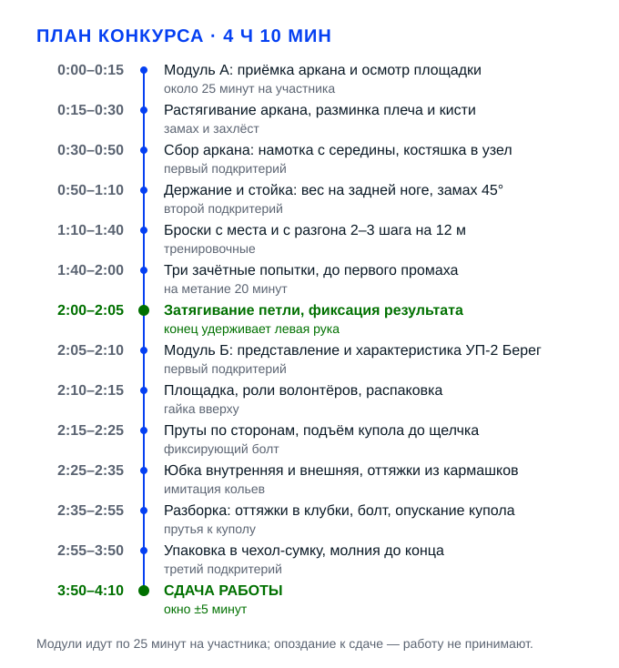
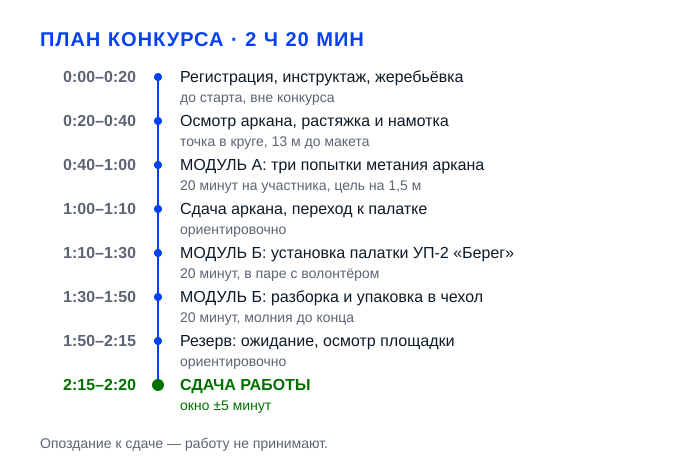
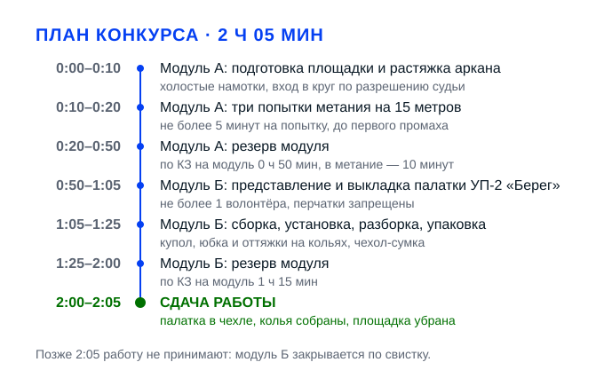

Оленеводство (Р)
Задания ниже — официальные файлы «Абилимпикс» (источник: abilympics-russia.ru), разложенные по категориям. Решения написаны по тексту задания, регламенту и критериям оценки; в них указано, что именно проверяет эксперт.
Школьник
14–16 лет, базовый уровень заданияВыдержка из официального конкурсного задания: страницы, относящиеся к категории «Школьник» (стр. 5–9 источника).
Пошаговое решение
Конкурсное задание категории «Школьники» у оленеводства состоит из двух модулей по 25 минут на участника. Модуль А — метание аркана: с соблюдением правил и техники сбора снаряда за три попытки и в пределах 20 минут попасть петлёй в макет рогов домашнего северного оленя, установленный в центре круга на высоте 1,5 метра, с расстояния 12 метров. Оценивают не только попадание: отдельно смотрят, как аркан намотан, как он удерживается и как выполнено положение перед броском. Модуль Б — палатка УП-2 Берег: представиться, коротко охарактеризовать палатку, собрать её с волонтёрами по инструкции, разобрать и уложить в чехол. Здесь ценится порядок шагов: купол поднимают только после того, как разложены пруты, а болт ставят только после фиксации механизма. Всего на оба модуля отведено 4 часа 10 минут, работа идёт на открытой площадке, поэтому в решение встроены разминка и контроль времени.

Задача 1. Принять площадку и подготовить снарядМодуль А · 25 минут на участника
Модуль А начинается не с броска, а с приёмки: пока аркан не осмотрен, а площадка не понята, любая техника работает против вас. За первые десять минут нужно увидеть, из чего сделан снаряд, где лежит граница круга, на какой высоте стоит макет рогов домашнего северного оленя и с какой стороны дует ветер. Спокойная приёмка экономит попытки: их всего три.
Действие 1.1. Осмотреть аркан и площадку
Шаг 1.1.1
Получаем аркан из рук эксперта, отходим на свободное место и раскладываем его во всю длину, взяв за два конца. Проходим вдоль всей верёвки ладонями, а не глазами: на сгибах и у костяшки ищем перетёртые волокна, распущенные пряди, случайные узлы и зацепы, из-за которых петля пойдёт неровно. Костяшку — тот утолщённый конец, который тянет аркан за собой, — отдельно проверяем на прочность: берём в кулак и тянем коротко, на треть силы. Если на верёвке обнаружился узел, развязываем его на месте и только потом идём дальше по длине, потому что узел в середине меняет рабочую часть аркана.
Первый подкритерий модуля А — правильная техника сбора аркана, и она невозможна на снаряде с узлом или перетёртостью: моток ляжет неровно, а при выпуске аркан заклинит в собственных витках. Осмотр занимает две-три минуты из двадцати пяти, зато он единственный шанс заменить снаряд до старта, не потеряв попытку. К тому же снаряд после падения мог набрать песок между прядями: такой аркан в мотке идёт туго и цепляется за собственную петлю.
Аркан лежит прямой линией без восьмёрок и спиралей, узлов нет, костяшка держится плотно. Потяните за оба конца по очереди — верёвка должна тянуться одинаково по всей длине, без рывка в одном месте. Разложенный аркан удобно прижать носком у костяшки, чтобы ветер не сдвинул его с места, пока вы идёте вдоль длины.
Самая частая ошибка — разложить аркан кольцами на земле и осмотреть только верхний слой: узел или перетёртость остаются в нижних витках и обнаруживаются в момент броска, когда петля вместо полёта встаёт колом и падает в двух метрах от круга. Бывает и обратное: участник видит зацеп и молчит, надеясь, что обойдётся, и потом промах списывают на технику.
Эксперт смотрит, как участник принимает снаряд: разложил ли, проверил ли костяшку. Осмотр идёт в зачёт времени модуля, отдельного времени на него не дают. Для эксперта важен сам факт осмотра: снаряд, взятый и сразу намотанный, читается как небрежность.
Шаг 1.1.2
Обходим площадку по внешнему краю и запоминаем три вещи: где проходит линия круга, в какую сторону от неё стоит макет рогов и где начинается зона, за которую нельзя заступать. Макет — рога домашнего северного оленя — установлен в центре круга на высоте 1,5 метра, и до него от линии 12 метров. Смотрим, откуда светит солнце и куда тянет ветер: поднимаем с земли горсть сухой травы или смотрим на флаг, если он есть. Отдельно смотрим на грунт под линией: если там ямка или скользкая трава, на выпаде опорная нога поедет вперёд.
Бросок засчитывается только тогда, когда участник не заступил и не переступил линию круга, а при заступе результат аннулируется независимо от того, легла петля на рог или нет. Ветер в спину или в бок сносит петлю на метр-полтора, и это надо знать до первого броска, чтобы выбирать точку на радиусе круга осознанно. Знание площадки экономит попытки: одна поправка на ветер по замеру дешевле, чем две потерянные попытки.
Вы можете показать рукой: вот линия, вот макет на высоте метра с половиной, вот направление ветра. Если трава уходит из ладони вбок — ветер боковой, и точку старта надо смещать против него. Ветер проще всего проверить по ленте на ограждении или по дыму, а не по ощущению на щеке.
Ошибка — встать на линию носком вплотную и на замахе перенести вес за неё: заступ фиксируется судьёй на линии, и красивый бросок в рог не спасает. Вторая ошибка — не заметить, что макет стоит чуть в стороне от геометрического центра круга. Третья ошибка — встать так, что солнце бьёт в глаза: прицеливание сбивается на полкорпуса в сторону.
Судья на линии смотрит на ноги в момент замаха и выпуска, а не после. Смещённая стопа за линией — самый частый повод снять результат. Эксперт отмечает, смотрел ли участник на площадку до выхода в круг, — это видно по первому броску.
Действие 1.2. Размяться и выйти в круг
Шаг 1.2.1
Разминаемся семь-восемь минут, начиная с плечевого пояса: круги руками вперёд и назад, по десять раз каждое направление, затем махи прямой рукой вверх-вниз с нарастающей амплитудой. Дальше кисти — вращение кулаком в лучезапястном суставе, сжимание и разжимание пальцев, «веер» из разведённых пальцев. В конце три-четыре наклона корпуса назад с поворотом туловища, такие же, как в замахе. После каждого подхода встряхиваем кисть и опускаем плечо, чтобы не начинать замах с зажатой рукой.
В броске работает не рука, а цепочка «нога — туловище — плечо — кисть», и холодная кисть не даёт того захлёста, который раскручивает моток. Разминка прямо влияет на подкритерии «положение перед броском» и «выпуск аркана»: без разогретого плеча замах получается коротким и плоским. Разминка заодно проверяет снаряд: на махе слышно, если верёвка где-то цепляется за собственную прядь.
Плечи двигаются без хруста и зажатости, кисть вращается свободно, в ладонях тепло. Если после разминки рука ещё «деревянная» — повторите вращения и махи, время в двадцать пять минут это позволяет. Разогретая кисть свободно описывает круг в воздухе, а плечо не тянет при подъёме руки выше головы.
Разминаться «по ходу» — сделать два маха и встать на линию: первые броски уходят вверх и в сторону, а их всего три. Вторая ошибка — растягивать разминку до пота и терять силы, которые нужны на последнюю попытку. И третья ошибка — разминаться в куртке, а на линию выходить в футболке: мышцы успевают остыть за минуту.
Эксперт не оценивает разминку отдельным баллом, но видит, готов ли участник к нагрузке: зажатая кисть и мелкий замах читаются сразу. Эксперт смотрит на амплитуду первого замаха: она показывает, размята ли рука на самом деле.
Шаг 1.2.2
Подходим к кругу и ждём разрешения судьи: входить в круг можно только по его команде, а бросок выполняется только после команды «можно». Встаём на линию так, чтобы носки оставались внутри, и выбираем точку на радиусе — не обязательно напротив макета, можно сместиться в сторону, если так удобнее рука. Запоминаем выбранную точку носком: если сместились, возвращаемся в неё же, иначе сравнивать броски между собой невозможно.
Метание производится с любой точки радиуса круга на макет, установленный в центре на высоте 1,5 метра, и линия круга — единственная граница, которую нельзя переступать. Смещение по радиусу меняет угол к ветру и к солнцу, поэтому выбор точки — часть техники, а не формальность. Смещение по радиусу меняет и дистанцию: с края круга до макета может выйти чуть больше или чуть меньше двенадцати метров.
Вы стоите внутри линии, расстояние до макета около 12 метров, солнце не бьёт в глаза в момент прицеливания. Мысленно проведите линию от руки до рогов: она должна идти вверх под небольшим углом, а не горизонтально. Проверьте, что пятка не выходит за линию, а корпус при замахе остаётся внутри круга.
Выход в круг до команды судьи и бросок без команды — прямое основание не засчитать попытку. Вторая ошибка — встать напротив макета «по линейке», хотя рука и ветер просят сместиться на полшага в сторону. И третья ошибка — выйти в круг без разрешения и стоять на линии, пока судья готовит площадку.
Судья фиксирует момент входа в круг и команду. Эксперт смотрит, выбрал ли участник точку осознанно или встал куда поставили. Судья фиксирует вход в круг, эксперт — выбранную точку и то, чем участник её объясняет.
Задача 2. Собрать (намотать) арканМодуль А · первый подкритерий, техника сбора
Сбор аркана — тот самый первый подкритерий, с которого начинается оценка модуля А: пока моток не собран правильно, бросок не получится ни силой, ни точностью. Логика простая: аркан должен разматываться в полёте сам, ровно и вперёд, а для этого витки кладутся с середины, средней величины, а костяшка остаётся снаружи, чтобы вырваться первой.
Действие 2.1. Растянуть аркан перед намоткой
Шаг 2.1.1
Берём аркан за оба конца и растягиваем его на всю длину, отходя друг от друга, если рядом стоит волонтёр, или привязываем один конец за стойку и тянем второй на себя. Тянем не рывком, а плавно, проходя ладонями от костяшки к концу и обратно, пока верёвка не ляжет прямой линией без завитков. Держим аркан на весу, не давая ему лечь на землю, иначе вместе с натяжением подхватим песок и траву.
Растягивание делается для того, чтобы при наматывании аркан не закручивался на руку: скрученная верёвка ложится восьмёрками, а восьмёрки в мотке — это гарантированный захлёст при выпуске. КЗ ставит это первым пунктом техники сбора, потому что от него зависит всё остальное. Растянутый аркан ещё и наматывается плотнее: витки ложатся ровно, моток не разваливается в ладони.
Аркан лежит прямо, без петель и спиралей, концы не перекрещиваются. Проведите ладонью по всей длине — под рукой не должно быть бугров от скрутки. Если на верёвке остались волны, повторите растяжение — это полминуты против потерянной попытки.
Наматывать сразу, «потом растянется»: в мотке остаётся внутреннее натяжение, и при броске кольца выходят не все сразу, а с задержкой — петля раскрывается в воздухе поздно и не успевает обхватить рог. Третья ошибка — растягивать аркан одной рукой, стоя на месте: натяжение снимается только с половины длины.
Эксперт смотрит на первые движения: если участник начал мотать не растянув, техника сбора считается нарушенной уже на этом шаге. Эксперт смотрит на натяжение верёвки: провисший аркан в его глазах ещё не готов к намотке.
Действие 2.2. Намотать аркан с середины
Шаг 2.2.1
Находим середину аркана, складываем верёвку пополам и начинаем намотку именно с середины, а не с конца. Первые два-три круга делаем небольшими, плотно укладывая виток к витку на пальцы левой руки, если держим моток в левой, и наоборот. Следим, чтобы витки не перекрещивались между собой. Ладонь при намотке держим раскрытой, витки укладываем не на пальцы, а на основание ладони и большой палец.
Намотка с середины даёт симметричный моток: при выпуске кольца сходят с руки одновременно с двух сторон и аркан раскрывается ровным овалом. Если начать с конца, петля выходит перекошенной, и обхвата рогов не получается даже при точном броске. Симметричный моток держится в руке без поддержки и сходит с ладони одним движением, а не по частям.
Моток начинает формироваться вокруг ладони, витки лежат ровно, середина аркана находится в глубине мотка. Проверьте: потяните за один конец — он должен выходить свободно, не утягивая второй. Середина аркана должна оказаться внутри мотка: её не видно, и она не тянет за собой остальные витки.
Мотать с конца: моток получается грушевидным, тяжёлая часть уходит вниз, и при замахе аркан тянет руку к земле. Вторая ошибка — намотать первые витки слишком туго, тогда середина аркана зажата и не сходит с руки. Третья ошибка — начинать с середины, но брать её на глаз: моток выходит с перекосом на одну сторону.
Первый подкритерий оценивается именно здесь: эксперт стоит в двух-трёх шагах и смотрит, с чего начата намотка и как ложатся первые круги. Эксперт смотрит на первые три витка: по ним видно, с середины начата намотка или с конца.
Шаг 2.2.2
Продолжаем намотку средними кругами — такими, чтобы моток целиком помещался в ладонь и не свисал с неё. Можно делать с нарастанием: два-три круга небольших, дальше остальные одинаковые, среднего размера. Каждый следующий виток кладём рядом с предыдущим, без нахлёста и без зазоров. Каждый виток прижимаем большим пальцем, иначе предыдущий круг сползает и моток теряет форму.
КЗ прямо оговаривает величину кругов: при слишком больших аркан при распрямлении запутывается, при чрезмерно маленьких витки не помещаются в ладонь, захлёст для броска не выполняется, а аркан раскрывается в полёте слишком долго и теряет направление и скорость. Средний размер — это примерно ширина ладони: такой моток входит в кисть целиком и не свисает с неё.
Моток лежит в ладони как клубок средней величины, пальцы его обхватывают, край не выходит за основание пальцев. Витки одинаковые на глаз — это и есть признак правильного сбора. Подбросьте моток на ладони: он должен лечь обратно плотным кольцом, а не развалиться веером.
Мотать «как получится», с разной величиной кругов: часть витков провисает, часть затянута, и при выпуске аркан уходит не вперёд, а вбок и вниз. Ещё одна ошибка — намотать так много, что моток не удерживается кистью. Третья ошибка — мотать виток на виток с нахлёстом: при выпуске они цепляются друг за друга, и аркан идёт рывками.
Эксперт оценивает равномерность мотка по внешнему виду и по тому, как он лежит в руке перед броском. Эксперт оценивает равномерность мотка на глаз и по тому, как он лежит в руке перед броском.
Шаг 2.2.3
Последний виток укладываем с костяшкой: заворачиваем её в узел и кладём на последние суставы пальцев, ближе к их кончикам, а не в середину ладони. Свободный конец аркана оставляем в другой руке, проверив, что он не запутался вокруг запястья и не прижат мотком. Костяшку не прячем под витки: она должна смотреть наружу и лежать так, чтобы её можно было выдернуть одним движением.
Смысл узла с костяшкой в том, что при броске она вырывается вперёд мотка и тянет за собой весь аркан в длину — так он раскрывается в полёте. Костяшка, убранная внутрь мотка, выходит последней, и петля раскрывается уже у земли. Если костяшка уйдёт вглубь мотка, аркан раскроется слишком поздно, и петля упадёт, не дойдя до макета.
Костяшка видна снаружи, лежит на суставах пальцев и легко выдёргивается большим и указательным пальцами. Потяните за неё — она должна выйти с небольшим усилием, увлекая за собой витки. Возьмите костяшку большим и указательным пальцами: она должна выходить свободно, не разматывая весь моток.
Заправить костяшку внутрь мотка «чтобы не мешала»: аркан не раскроется вовсе или раскроется в последний момент. Вторая ошибка — прижать костяшку всей ладонью, тогда она не вырывается, и бросок получается коротким, на пять-шесть метров. Третья ошибка — зажать костяшку вместе с витками в кулаке: при броске она не вырвется, и аркан полетит комом.
Эксперт просит показать моток перед броском и смотрит, где лежит костяшка: это видимый признак правильной техники сбора. Эксперт просит показать узел с костяшкой — это самый наглядный признак правильной техники сбора.
Действие 2.3. Проверить собранный аркан
Шаг 2.3.1
Поднимаем моток на уровень груди и проверяем его на весу: витки не провисают и не расползаются, моток держит форму, свободный конец уходит вниз без петли. Слегка встряхиваем руку — моток не должен разматываться сам. Затем пробуем пробный выпуск без броска: коротко выдёргиваем костяшку и смотрим, как сходят первые кольца. Если при встряхивании моток поплыл, перематываем сразу, не надеясь на удачу: перемотка занимает меньше минуты.
Проверка перед броском — единственная возможность поймать ошибку сбора, пока попытка ещё не потрачена. Всего попыток три, и каждая идёт до первого промаха, так что одна неверно собранная попытка стоит трети модуля. Проверка на весу ловит и перетянутый моток: такой не сходит с ладони и утягивает аркан вниз.
Моток держится в ладони без поддержки второй руки, кольца сходят ровно и вперёд, свободный конец остаётся в другой руке. Если при встряхивании моток «дышит» и расползается — перемотайте, это быстрее, чем потерять попытку. Пробный выпуск без броска показывает, ровно ли расходятся первые кольца и не цепляется ли костяшка.
Проверять моток уже стоя на линии, после команды судьи: перематывать на линии нельзя, а время идёт. Вторая ошибка — не проверить свободный конец и обнаружить в броске, что он обмотан вокруг кисти. Третья ошибка — проверять моток, уже стоя на линии после команды: перематывать там нельзя, а время идёт.
Эксперт смотрит на поведение мотка до команды «можно»: уверенно ли участник держит снаряд или поправляет его на ходу. Эксперт смотрит, что участник делает с мотком до команды: поправляет его спокойно или судорожно.
Задача 3. Взять аркан и встать на рубежМодуль А · второй подкритерий, держание
Второй подкритерий модуля А — держание собранного аркана: петли в одной руке, свободный конец в другой, рука опущена и расслаблена. Это выглядит как мелочь, но именно из этой позиции начинается замах, и любая зажатость кисти убивает захлёст. Дальше добавляется стойка: вес на сзади стоящую ногу, плечи развёрнуты, взгляд на макет.
Действие 3.1. Держание собранного аркана
Шаг 3.1.1
Берём моток в одну руку, свободный конец — в другую, и опускаем руку с мотком слегка вниз, согнув её в локтевом суставе, но не напрягая. Пальцы немного разводим и удерживаем аркан согнутыми фалангами, кисть слегка сгибаем в лучезапястном суставе. Последний виток с костяшкой остаётся между большим и указательным пальцами. Плечо при этом остаётся опущенным: поднятое плечо закрепощает руку и срезает амплитуду замаха.
КЗ описывает это положение буквально: рука опущена, согнута в локте и при этом расслаблена, пальцы разведены, кисть согнута. Расслабленная рука нужна для захлёста — резкого хлёсткого движения кистью, которое и раскручивает моток; зажатая кисть гасит движение. Из этого положения рука готова и к замаху, и к захлёсту, и не устаёт, пока судья готовит площадку.
Моток лежит в ладони без поддержки, костяшка зажата большим и указательным пальцами и не выскальзывает, свободный конец в другой руке провисает, а не натянут. Плечо опущено, локоть не прижат к корпусу. Посмотрите на кисть сбоку: она должна быть чуть согнута, а не вытянута в струну и не висеть тряпкой.
Сжать моток в кулак и держать его «намертво»: пальцы не разведены, захлёст не выполняется, аркан уходит плоско и падает перед макетом. Вторая ошибка — натянуть свободный конец, тогда моток не сходит с руки. Третья ошибка — держать моток у самого плеча: замах начинается не из нижней точки, и захлёст выходит слабым.
Эксперт смотрит на кисть до броска: разведены ли пальцы, не побелели ли костяшки от напряжения, где лежит костяшка. Эксперт смотрит на кисть и на положение костяшки — по ним он видит, готов ли участник к броску.
Шаг 3.1.2
Второй рукой берём свободный конец так, чтобы он проходил между большим и указательным пальцами и свисал вниз, не обматываясь вокруг кисти. Держим его без натяжения, чуть согнув локоть: при выпуске рука с концом идёт назад, а моток вперёд, и это встречное движение раскрывает петлю. Следим, чтобы конец не перекручивался вокруг пальцев: одно лишнее кольцо на кисти — и аркан уже не уйдёт вперёд.
Свободный конец в руке — не формальность: если при броске участник выпустил конец из рук, попадание не засчитывается. Кроме того, по КЗ при оценке «хорошо» конец аркана должен оставаться в левой руке — то есть контроль конца входит в критерий попадания. Если конец выпущен, попадание не засчитывают, даже когда петля легла на рог полностью.
Конец лежит в ладони свободной петлёй, при лёгком рывке мотка он уходит из руки ровно, не цепляясь за пальцы. Проверьте, что он не зажал моток и не обвил предплечье. Потяните моток вперёд: конец должен выйти из ладони ровной линией, не зацепившись за пальцы.
Намотать конец на кисть «для надёжности»: при выпуске он не даёт аркану уйти вперёд, бросок получается вялым, а в худшем случае участник сам себя стягивает петлёй. Обратная ошибка — держать конец двумя пальцами, и он выскальзывает раньше времени. Третья ошибка — натягивать конец на себя: тогда моток не сходит с руки и падает у ног.
Эксперт проверяет, остался ли конец в руке после броска: это отдельное условие засчитывания результата. Эксперт проверяет, в какой руке остался конец после броска, — это входит в условия засчитывания.
Действие 3.2. Стойка и замах
Шаг 3.2.1
Встаём в избранной точке круга боком, лицом или в полповорота по направлению метания — как удобнее руке. Переносим вес тела на сзади стоящую ногу, развёрнутую в сторону, а противоположную руку выносим вперёд: кисть слегка согнута и обращена ладонью внутрь. Ступни ставим на ширину плеч, носки внутри линии круга. Плечи разворачиваем так, чтобы метающая рука оказалась дальше от макета: это удлиняет путь руки в замахе.
Перенос веса на заднюю ногу — это заряд броска: отталкивание ею и поворот туловища дают финальное усилие. Если вес остался на передней ноге, замах получается коротким, и аркан летит за счёт одной руки, теряя и скорость, и направление. Разворот корпуса даёт тот самый поворот туловища, который вместе с отталкиванием ноги создаёт финальное усилие.
Вы чувствуете, что можете оттолкнуться задней ногой без переступания, корпус развёрнут, взгляд поверх вытянутой вперёд руки. Носки обеих ступней видны внутри линии — проверьте это, опустив глаза. Проверьте равновесие: покачайтесь вперёд и назад, вес должен оставаться на задней ноге без переступания.
Стоять лицом к макету «ровно», не разворачивая плечи: корпус не даёт поворота, и рука идёт по дуге в сторону. Вторая ошибка — поставить заднюю ногу слишком далеко и потерять равновесие на замахе. Третья ошибка — встать слишком близко к линии: при выпаде носок уходит за неё, и бросок аннулируется.
Эксперт смотрит на положение ног и плеч до команды: развёрнутый корпус и вес на задней ноге видны сразу. Эксперт смотрит на стойку до команды: разворот корпуса и положение ног видны без объяснений.
Шаг 3.2.2
Делаем замах: руку с арканом отводим назад, сопровождая движение небольшим поворотом туловища, а при броске с места добавляем наклон корпуса назад под углом около 45 градусов. Противоположная рука при этом направлена вперёд, кисть расправлена ладонью внутрь. Взгляд держим на макете рогов на высоте 1,5 метра, а не на земле и не на руке. Дыхание на замахе задерживаем на полсекунды, а выпуск делаем на выдохе — так движение выходит ровнее.
Угол наклона в 45 градусов КЗ называет прямо, и он не случаен: под таким углом рука проходит самую длинную дугу и сообщает аркану нужную траекторию вверх-вперёд. Взгляд на макете держит направление — там, куда смотрите, туда и уходит петля. Наклон под сорок пять градусов ещё и держит моток позади корпуса, не давая ему выйти раньше руки.
Плечо отведённой руки находится позади корпуса, локоть не опущен вниз, корпус отклонён назад, вес на задней ноге. Пробный замах без выпуска должен проходить свободно, без заваливания в сторону. Голова повёрнута к макету, подбородок не опущен, плечо отведено назад — три точки, по которым проверяется замах.
Замах только рукой, без поворота туловища и наклона: аркан летит плоско и низко, петля бьётся о землю перед макетом. Вторая ошибка — смотреть на руку вместо макета, из-за чего бросок уходит в сторону от рогов. Третья ошибка — замах с наклоном в сторону: вместо ровной дуги рука идёт по диагонали, и петля уходит влево.
Эксперт фиксирует амплитуду замаха и направление взгляда — по КЗ это часть подкритерия «положение перед броском». Эксперт смотрит на амплитуду замаха и на взгляд: направление глаз часто совпадает с направлением броска.
Задача 4. Выполнить бросок и затянуть петлюМодуль А · третий и четвёртый подкритерии
Зачётная часть модуля А: три попытки, каждая идёт до первого промаха, на всё метание отводится 20 минут. Нужно соединить отталкивание, поворот туловища и выпад опорной ноги в одно движение, выпустить аркан вперёд-вверх и, если петля легла на рога, успеть затянуть её, потянув аркан на себя. Здесь же решается, останется ли конец в руке.
Действие 4.1. Бросок с места
Шаг 4.1.1
По команде «можно» начинаем движение сразу, без паузы: одновременное отталкивание сзади стоящей ноги и бросковое движение руки с собранным арканом создают поворот туловища и выпад вперёд опорной ноги. Аркан выпускаем вперёд-вверх, обе руки после выпуска остаются в выпрямленном положении. Финальное усилие — упругая, энергичная работа опорной ноги и руки. Кисть в конце проводим к макету, а не вниз: захлёст идёт сверху, как удар хлыстом.
Три движения должны совпасть по времени: если рука уходит раньше ноги, аркан летит без ускорения и не раскрывается; если нога раньше руки — аркан падает у ног. Совпадение и есть та техника, которую КЗ называет правильной. Слаженное движение даёт аркану ту скорость, при которой он успевает раскрыться до подлёта к рогам.
После выпуска обе руки выпрямлены в направлении макета, корпус повёрнут, вы стоите устойчиво. Аркан ушёл вперёд и вверх, а не вбок — проверьте по тому, куда смотрит вытянутая рука. После выпуска моток должен раскрыться полностью: если часть колец осталась в руке, движение было вялым.
Бросать одной рукой, стоя на месте: аркан не набирает скорости и раскрывается поздно, петля не долетает до рогов на метр-два. Вторая ошибка — отпустить аркан в начале движения руки, из-за чего он уходит вниз. Третья ошибка — бросок без выпада: вес остаётся на обеих ногах, и аркан летит на метр ниже макета.
Эксперт смотрит на согласованность работы ноги и руки в момент выпуска: это ядро третьего подкритерия. Эксперт оценивает согласованность ноги и руки в момент выпуска, а не силу как таковую.
Шаг 4.1.2
После выпуска всех колец остаёмся в положении с перенесённым весом на впередистоящую ногу, опорная нога выпрямлена и повёрнута с разворотом стопы по направлению метания, носок упирается в грунт. Не переступаем и не приставляем ногу, пока аркан не коснётся макета или земли. Руки после выпуска держим в направлении макета ещё секунду, чтобы не сбить аркан в полёте собственным движением.
Результат броска засчитывается только при условии, что участник не заступил линию круга: шаг вперёд после выпуска — самый частый способ потерять уже попавший аркан. Устойчивое финальное положение ещё и показывает, что бросок сделан телом, а не одной рукой. Устойчивое финальное положение показывает, что бросок выполнен всем телом, а не одной рукой.
Вы стоите на одной опорной ноге, носок развёрнут в сторону макета, вторая нога впереди и согнута, корпус не заваливается. Взгляд по-прежнему на рогах, а не на ногах. Опорная нога выпрямлена, носок развёрнут к макету, корпус не заваливается вбок — три точки равновесия.
Погасить движение шагом вперёд «чтобы не упасть»: заступ фиксируется, и результат аннулируется. Вторая ошибка — сразу после броска развернуться к эксперту, потеряв контроль над арканом, который ещё летит. Третья ошибка — приставлять вторую ногу вперёд раньше, чем аркан долетел: это тоже заступ.
Судья на линии смотрит именно на этот момент: осталась ли опорная нога за линией после выпуска. Судья на линии смотрит на стопы в момент выпуска и сразу после него.
Действие 4.2. Бросок с разгона
Шаг 4.2.1
Если бросок с места не даёт результата, переходим на метание с разгоном: разбег 2–3 шага, замах начинается одновременно с первым шагом, рука с арканом отводится назад с небольшим поворотом туловища, противоположная рука направлена вперёд, вес переносится на сзади стоящую ногу. На последнем шаге — отталкивание и выпуск аркана вперёд-вверх. Первый шаг делаем коротким, второй длиннее, третий самый длинный и с отталкиванием: так набирается скорость.
Разгон добавляет аркану скорость и помогает раскрыть петлю в полёте, поэтому на дистанции 12 метров он часто результативнее броска с места. Но разбег съедает место в круге, и рассчитывать три шага надо так, чтобы выпуск пришёлся до линии, а не на ней. Разбег помогает и раскрытию петли: аркан идёт по более пологой траектории и меньше задевает грунт.
Три шага укладываются внутри круга, выпуск происходит до линии, после броска вы останавливаетесь внутри. Ноги после выпуска выпрямлены, корпус развёрнут по направлению метания. Проверьте расстановку: три шага должны укладываться в круг с запасом в полшага до линии.
Разбегаться по прямой на макет, забыв про линию: заступ случается на последнем шаге, и бросок не засчитывают. Вторая ошибка — начинать замах уже во время третьего шага, тогда аркан выпускается до поворота туловища и уходит вбок. Третья ошибка — разгоняться шире, чем позволяет круг: последний шаг приходится на линию, и заступ неизбежен.
Эксперт смотрит ритм разбега и точку выпуска: разгон без заступа и с поворотом корпуса считается правильной техникой. Эксперт смотрит ритм разбега и точку выпуска: разгон без заступа считается правильной техникой.
Действие 4.3. Три попытки и затягивание петли
Шаг 4.3.1
Строим три попытки по нарастающей: первая — контрольная, с умеренной силой, чтобы увидеть, куда реально уходит аркан при вашей технике и этом ветре. Вторая — с поправкой по направлению и силе. Третья — зачётная, с полной амплитудой. В каждой попытке метание продолжается до первого промаха, после промаха попытка считается законченной. Между попытками не спешим: собираем аркан заново, проверяем моток и только потом встаём на линию.
На всё метание отведено 20 минут внутри 25 минут модуля, и попыток всего три. Первая попытка почти никогда не бывает лучшей, она нужна как замер: по ней видно снос и недолёт. Тратить её на максимальную силу — значит потерять единственный бесплатный замер. Двадцать минут на метание кажутся запасом, но каждая сборка аркана съедает несколько минут.
После первой попытки вы можете сказать точно: аркан ушёл выше на полметра, или влево на метр, или не долетел. Если сказать нечего — значит, бросок не контролировался, и вторую надо делать спокойнее. После попытки вы можете назвать направление сноса и недолёт в метрах — это и есть результат замера.
Сразу бросать изо всех сил и потом не понимать, куда ушла петля. Вторая ошибка — менять всё сразу: и силу, и точку, и способ броска, после чего сравнить попытки невозможно. Третья ошибка — бросать вторую попытку сразу после первой, не переведя дыхание: техника разваливается.
Эксперт отмечает, есть ли у участника осмысленная коррекция между попытками или он повторяет одну и ту же ошибку трижды. Эксперт отмечает осмысленность коррекции между попытками, а не количество бросков.
Шаг 4.3.2
Как только петля обхватила макет рогов, не ждём и не радуемся: сразу затягиваем петлю, потянув аркан на себя. Тянем ровно, без рывка, удерживая свободный конец в левой руке, и держим натяжение, пока судья не зафиксирует результат. Тянем к себе и чуть вниз, к линии круга: так петля садится на рога, а не снимается вверх. Тянем одной рукой, вторая продолжает удерживать свободный конец, иначе аркан уйдёт вместе с петлёй.
Незатянутая петля соскальзывает с гладкого макета, а по КЗ оценка «отлично» ставится именно в том случае, если петля не соскочила с заарканенной цели. Затягивание — то, что превращает касание в обхват. Затянутая петля превращает касание в обхват, и оценка поднимается с «удовлетворительно» до «отлично».
Петля обжала рога и держится при лёгком натяжении, аркан идёт от макета к вашей руке прямой линией. Если петля сползает — подтяните ещё, но без рывка, иначе она снимется совсем. Аркан идёт от макета к руке прямой линией, петля обжала рога и не сползает при лёгком покачивании.
Стоять и смотреть на удачный бросок: петля соскальзывает за секунду, и вместо «отлично» остаётся промах. Вторая ошибка — дёрнуть аркан сильно, из-за чего петля срывается с рога. Третья ошибка — тянуть рывком: петля срывается с гладкого макета, и результат превращается в промах.
Судья и эксперт смотрят на момент фиксации: считается то положение, в котором петля осталась после затягивания. Эксперт смотрит на момент фиксации: считается положение петли после затягивания, а не в полёте.
Шаг 4.3.3
Перед каждой попыткой проверяем три условия засчитывания: вы не заступили и не переступили линию круга, свободный конец аркана остался в руке, бросок сделан по команде судьи. После выпуска смотрим на результат и запоминаем, за какую часть рогов зацепилась петля. Если петля легла на две ветви, третью попытку делаем без риска, с той же силой и с той же точки старта.
По КЗ «отлично» — петля обхватила макет полностью и не соскочила, «хорошо» — зацеплены 2–3 ветви рога при условии, что конец остался в левой руке, «удовлетворительно» — зацеплена одна ветвь. Понимание этой градации позволяет в третьей попытке не рисковать лишним, если уже есть результат. Градация важна и для тактики: полный обхват даёт высшую оценку, но и две-три ветви уже результат.
Вы можете назвать свой результат словами: полный обхват, две-три ветви, одна ветвь. Если петля упала мимо цели — попытка закончена, и следующая начинается заново со сбора аркана. Проверьте, что конец остался в левой руке: по КЗ это отдельное условие для оценки «хорошо».
Бросать без команды судьи или после сигнала об окончании времени: такой бросок не засчитывается вовсе. Вторая ошибка — не проверить, остался ли конец в руке, и потерять уже состоявшийся обхват. Третья ошибка — бросать после сигнала об окончании времени: такой бросок не засчитывается вовсе.
Эксперт фиксирует качество каждого засчитанного броска и следит, чтобы участник не выпускал конец из рук и не заступал линию. Эксперт фиксирует качество каждого засчитанного броска и следит за линией круга.
Задача 5. Представиться и подготовить площадкуМодуль Б · 25 минут на участника
Модуль Б — установка и разборка временного жилища оленеводов, палатки УП-2 Берег, и начинается он с представительной части: участник называется и коротко характеризует палатку. Дальше площадка, роли с волонтёрами и порядок действий. Модуль рассчитан на 25 минут, и в них входят установка, разборка и упаковка — то есть каждое лишнее движение видно по времени.
Действие 5.1. Представительная часть
Шаг 5.1.1
Встаём лицом к экспертам, а не к палатке, и говорим ровным рабочим голосом: имя и фамилию, компетенцию «Оленеводство», категорию «Школьники», затем — что сейчас будет сделано: «Выполняю модуль Б: установка и разборка палатки УП-2 Берег». На представление уходит не больше пятнадцати секунд, поэтому лишнего о себе не говорим. Стоим ровно, руки свободны, смотрим в лицо эксперту: это занимает секунды, но задаёт тон всему модулю.
Представительная часть — первый подкритерий модуля Б, и она оценивается отдельно от самой установки: эксперт смотрит, умеет ли участник назвать себя и обозначить задание. Пропущенное представление — это минус по критерию, который можно было взять без всяких усилий. Представление задаёт и порядок: после него участник знает, что от него ждут, и работает спокойнее.
Вы назвали себя полностью, назвали палатку по марке и сказали, что именно будете делать. Эксперт кивнул или задал первый вопрос — значит, представление принято, можно переходить к характеристике. Названы имя, компетенция, категория и задание — четыре элемента, и все вслух, а не про себя.
Начать молча развязывать сумку: время пошло, а первый подкритерий уже не закрыт. Вторая ошибка — представить себя скороговоркой, глядя в землю, так, что не разобрать ни имени, ни компетенции. Третья ошибка — представиться, уже стоя внутри палатки: эксперту не видно ни лица, ни осанки.
Эксперт слушает представление в первые секунды модуля и отмечает, названы ли имя, компетенция и задание. Эксперт отмечает представление в протоколе сразу, поэтому пропуск исправить потом нельзя.
Шаг 5.1.2
Даём краткую характеристику палатки, не заглядывая в инструкцию: УП-2 Берег — каркасная палатка купольного типа для временного жилища оленеводов, каркас собирается из прутов, купол поднимается вдвоём — участник и волонтёр, по низу идёт внутренняя и внешняя «юбка», по кармашкам разложены оттяжные веревки, направляющий пруток фиксируется болтом. Называем две-три особенности, а не пересказываем всё. Говорим короткими фразами, по одной мысли на предложение, чтобы не сбиться и не потерять нить.
Характеристика палатки входит в тот же первый подкритерий, и здесь оценивают понимание, а не память: участник должен знать, из чего состоит жилище, которое ставит. Тот, кто знает про юбку и оттяжки заранее, не тратит время на поиск кармашков в середине установки. Тот, кто знает устройство палатки, ставит её осмысленно: тянет нужный прут и не ищет кармашки на ощупь.
Вы назвали тип палатки, материал каркаса, способ подъёма купола и хотя бы одну деталь крепления — юбку, оттяжки или фиксирующий болт. Речь связная, без «ну, это, как его». Названы тип палатки, каркас из прутов, подъём купола вдвоём и хотя бы одна деталь крепления.
Пересказывать инструкцию целиком и терять на этом три минуты из двадцати пяти. Обратная ошибка — сказать только «палатка УП-2 Берег» и остановиться: характеристики в ответе нет. Третья ошибка — говорить о палатке в общих словах, без единой детали устройства: характеристикой это не считается.
Эксперт задаёт один уточняющий вопрос по устройству палатки, если характеристика прозвучала слишком коротко. Эксперт может задать уточняющий вопрос по юбке или оттяжкам, если ответ оказался слишком общим.
Действие 5.2. Подготовить площадку и распределить роли
Шаг 5.2.1
Выбираем ровное место без уклона и без камней, освобождаем площадку под основание палатки так, чтобы юбка ложилась на грунт, а не на травяные кочки. Убираем в сторону посторонние предметы в радиусе двух шагов. Смотрим, откуда дует ветер: вход ставим с подветренной стороны, чтобы купол не выворачивало при подъёме. Если площадка сырая, выбираем место повыше: на мокром грунте юбка прилипает, и палатку ведёт в сторону.
Палатку ставят на открытой площадке, и ровное основание — условие того, что купол встанет без перекоса: на уклоне пруты уходят в сторону, а фиксирующий болт не попадает в отверстие. Ветер при подъёме купола — главная причина того, что палатка складывается на участника. Ровное основание экономит время на подъёме: купол встаёт с первого раза, без перекосов и подправок.
Основание ровное, юбка по всему периметру касается грунта, посторонних предметов под полом нет. Вы можете обойти будущий контур и проверить это ногами, не наклоняясь. Обойдите контур и проверьте ногой грунт: ни камней, ни ям, ни высоких кочек под будущим полом.
Ставить на первой попавшейся площадке, не посмотрев на грунт: под полом оказывается камень или кочка, купол перекошен, и время уходит на перестановку. Вторая ошибка — разложить палатку по ветру, и при подъёме её выворачивает. Третья ошибка — ставить палатку у самой границы площадки: на разборке негде разложить прутья.
Эксперт смотрит, осмотрел ли участник площадку до того, как вытащил палатку из сумки. Эксперт смотрит, осмотрел ли участник площадку и учёл ли ветер при выборе входа.
Шаг 5.2.2
Распределяем роли с волонтёрами до начала работы, коротко и по делу: один поднимает купол двумя руками максимально вверх, другой держит направляющий пруток, третий помогает с юбкой и оттяжками, если волонтёров двое — совмещаем роли. Показываем руками, кто где встаёт, и договариваемся о команде «держим» на момент фиксации болта. Роли закрепляем жестом: показываем рукой, кто встаёт у купола, а кто у прутка, — на ветру жесты понятнее слов.
В палатке одновременно работают несколько человек, и по КЗ участник с волонтёром входят внутрь, поднимают купол, затем участник тянет направляющий пруток до фиксации и вставляет болт. Без договорённости о команде купол опускают раньше, чем поставлен болт, и вся установка начинается заново. Согласованность важна и для оценки: эксперт видит, умеет ли участник организовать работу группы, а не тянуть всё сам.
Каждый волонтёр знает свою роль и место, команда согласована, руки свободны. Проверьте это коротким вопросом: «Ты держишь купол, ты — пруток, верно?» — и получите ответ до того, как возьмётесь за сумку. Каждый волонтёр подтвердил свою роль до начала работы, и вы это услышали, а не предположили.
Молча начать работу и по ходу кричать «подними», «держи», «отпусти»: волонтёры не понимают, к кому обращаются, и купол проседает. Вторая ошибка — взять все действия на себя и оставить волонтёров стоять. Третья ошибка — распределить роли и тут же поменять их на ходу: группа теряет ритм и начинает мешать друг другу.
Эксперт оценивает организацию работы с волонтёрами: кто кому что сказал и насколько быстро группа вошла в ритм. Эксперт оценивает, насколько чётко участник распределил роли и удержал их до конца модуля.
Задача 6. Установить палатку УП-2 БерегМодуль Б · второй подкритерий, сборка
Второй подкритерий модуля Б — сборка и установка палатки, и он расписан в КЗ пятью шагами: вынуть палатку и убрать ленты, разложить пруты, поднять купол с фиксацией болта, расправить юбку, вынуть и размотать оттяжки. Порядок нарушать нельзя: пруты, не разложенные заранее, превращаются в узлы, а незакреплённый купол падает на голову в момент фиксации.
Действие 6.1. Распаковать палатку и разложить пруты
Шаг 6.1.1
Расстёгиваем молнию чехла-сумки, вытаскиваем палатку и кладём её на подготовленное место так, чтобы она легла куполом вверх — ориентир гайка вверху. Снимаем фиксирующие ленты, но не бросаем их в сторону, а раскладываем рядом: они понадобятся при упаковке. Сумку откладываем в сторону от рабочей зоны, чтобы не спотыкаться о неё. Молнию расстёгиваем на всю длину: если тянуть палатку через половину открытого чехла, ткань зацепится за зубцы.
Первый шаг сборки по КЗ звучит именно так: вытащить палатку, убрать фиксирующие ленты, поставить вверх куполом с ориентиром на гайку. Положение гайкой вверх — не формальность: если перевернуть, пруты при подъёме пойдут вниз и купол не встанет. Порядок распаковки экономит минуты: снятые ленты и отложенная сумка не мешают под ногами при подъёме купола.
Палатка лежит на грунте куполом вверх, гайка сверху, ленты сняты и лежат рядом ровно, сумка в стороне. Ничего не запуталось и не намоталось на каркас. Гайка сверху, ткань не перекручена, ленты лежат ровно рядом — три признака правильной распаковки.
Тянуть палатку за угол из сумки: ткань цепляется за пруты и рвётся по шву. Вторая ошибка — отбросить фиксирующие ленты в сторону, а потом искать их по всей площадке в конце модуля. Третья ошибка — вытряхивать палатку из сумки: пруты вылетают и гнутся о грунт.
Эксперт смотрит на первый шаг сборки: сняты ли ленты, правильно ли ориентирован купол. Эксперт смотрит на первый шаг сборки: сняты ли ленты и правильно ли ориентирован купол.
Шаг 6.1.2
Раскладываем пруты по сторонам: берём каждый прут за середину и укладываем от купола в стороны, как лучи, не перекрещивая между собой. Проверяем, что ни один прут не остался под тканью и все они выходят из своих карманов наружу. Если прут выскочил из кармана, сразу вставляем обратно, пока купол не поднят. Пруты укладываем так, чтобы они не лежали на юбке: при подъёме купола ткань пойдёт вместе с ними и подвернётся.
Разложенные пруты — условие того, что при подъёме купола ничего не заклинит: перекрещённые пруты образуют узел, и поднять купол физически не получится, пока их не распутаешь. КЗ ставит это отдельным шагом, потому что на него уходит больше времени, чем кажется. Разложенные пруты позволяют поднимать купол с волонтёром, не отвлекаясь на распутывание каркаса.
Пруты лежат параллельно друг другу, каждый выходит из кармана, перехлёстов нет. Пройдите взглядом по кругу — все пруты видны снаружи. Пройдите по кругу и убедитесь, что каждый прут виден снаружи и выходит из своего кармана.
Разложить пруты пучком в одну сторону: при подъёме они идут под углом и гнут каркас. Вторая ошибка — оставить один прут в кармане, не выведенным наружу, и обнаружить это уже на подъёме. Третья ошибка — бросать пруты как попало: перехлёст обнаруживается только на подъёме, когда ткань уже натянута.
Эксперт обходит палатку и проверяет, разложены ли пруты по сторонам, как требует второй шаг инструкции. Эксперт обходит палатку и проверяет, разложены ли пруты по сторонам, как требует второй шаг.
Действие 6.2. Поднять купол и поставить фиксирующий болт
Шаг 6.2.1
Входим внутрь палатки вместе с волонтёром: волонтёр двумя руками максимально поднимает купол вверх, а участник берётся за направляющий пруток и тянет его к земле до фиксации механизма. Тянем плавно, без рывков, следя, чтобы пруток шёл по своей линии, а ткань не подворачивалась под него. Внутрь заходим по очереди, а не одновременно: вдвоём в тесной палатке легко задеть разложенные пруты.
Это третий шаг сборки по КЗ, и он самый ответственный: купол держится на механизме, который фиксируется только после того, как направляющий пруток дотянут до конца. Недотянутый пруток — незакрытый замок, и палатка складывается при первом же порыве ветра. Дотянутый до щелчка механизм держит купол без поддержки, и можно спокойно перейти к болту.
Механизм защёлкнулся со слышимым щелчком, пруток дальше не идёт, купол стоит без поддержки рук. Проверьте, толкнув купол снизу ладонью: он должен пружинить, а не складываться. Щелчок слышен, пруток не идёт дальше, купол пружинит при нажатии снизу — три признака фиксации.
Тянуть пруток вбок, а не по его линии: механизм закусывает, и участник начинает тянуть сильнее, рискуя погнуть прут. Вторая ошибка — отпустить купол до щелчка, и он падает на волонтёра. Третья ошибка — тянуть пруток вдвоём: усилие удваивается, и механизм закусывает.
Эксперт стоит у входа и смотрит момент фиксации: слышен ли щелчок, не гнётся ли прут. Эксперт стоит у входа и слушает момент фиксации: щелчок слышно на несколько шагов.
Шаг 6.2.2
После фиксации участник выворачивает направляющий пруток и вставляет фиксирующий болт в отверстие, закручивая его до упора пальцами, без инструмента и без чрезмерного усилия. Проверяем, что болт вошёл в отверстие полностью и головка прилегает к металлу, а не висит на резьбе. Болт вставляем строго по резьбе, без перекоса: вкрученный косо, он портит отверстие и потом не держит.
Болт — страховка от самопроизвольного складывания: без него палатка стоит на одном замке, и на разборке это же отверстие придётся искать заново. КЗ отдельно указывает и выворачивание прутка, и установку болта, то есть оба действия оцениваются. Болт страхует замок от самопроизвольного складывания, а на разборке через него же снимается фиксация.
Болт вставлен до конца, головка прилегает, пруток вывернут в рабочее положение. Покачайте купол — люфта в месте соединения быть не должно. Головка болта прилегает к металлу, резьба не видна, при покачивании купола люфта в соединении нет.
Закрутить болт на два оборота «чтобы держался»: при нагрузке он выходит из резьбы, и купол складывается. Вторая ошибка — потерять болт, уронив его в траву: поиск занимает минуты, которых в модуле нет. Третья ошибка — уронить болт в траву: поиск занимает минуты, а запасного в комплекте нет.
Эксперт проверяет наличие и посадку болта после подъёма купола: это видимый результат третьего шага. Эксперт проверяет посадку болта после подъёма купола — это видимый результат третьего шага.
Шаг 6.2.3
Выходим из палатки и обходим её по кругу, проверяя, что купол стоит ровно, ни один прут не вывернут и ткань не подвёрнута под каркас. Если видим провис с одной стороны — поправляем до того, как взяться за юбку, потому что после фиксации оттяжек исправлять будет поздно. Особенно смотрим на сторону, откуда дует ветер: там ткань натянута сильнее и перекос заметнее.
Проверка купола до юбки экономит время: перекошенный купол потом приходится разбирать и ставить заново, а на модуль отведено 25 минут на установку, разборку и упаковку вместе. Ровный купол виден и эксперту — это внешний признак правильной сборки. Обход до оттяжек дешевле переделки: с размотанными оттяжками купол без полной разборки уже не поправить.
Купол симметричный, все пруты на своих местах, ткань натянута без складок у основания. Обход занимает полминуты и делается до работы с юбкой. Скаты симметричны, пруты на своих местах, ткань у основания натянута без складок.
Пропустить обход и сразу заняться юбкой: перекос обнаруживается, когда оттяжки уже размотаны, и исправление занимает вдвое больше времени. Третья ошибка — поправлять купол, не сняв фиксацию: ткань натягивается рывком и рвётся по шву.
Эксперт оценивает геометрию купола после подъёма — ровные скаты и отсутствие перекоса. Эксперт оценивает геометрию купола после подъёма: ровные скаты и отсутствие перекоса.
Действие 6.3. Расправить юбку и оттяжки
Шаг 6.3.1
Расправляем внутреннюю и внешнюю «юбку» палатки по всему периметру, укладывая её на грунт ровно, без подворотов и складок, и имитируем фиксацию юбки кольями. Колья в грунт не забиваем — по инструкции выполняется имитация: юбка расправлена и прижата так, как она легла бы под колышки. Юбку расправляем от угла к углу, а не от середины: так она ложится ровно и не собирается в складку.
Четвёртый шаг сборки по КЗ — расправить обе юбки и тем самым имитировать фиксацию кольями. Юбка закрывает щель между полом и грунтом: подвёрнутая юбка означает, что жилище не защищено от ветра и снега, и это видно эксперту сразу. Юбка закрывает щель между полом и грунтом, и именно она держит тепло внутри жилища в ветреную погоду.
Обе юбки лежат на грунте по всему кругу, нигде не подвёрнуты внутрь, край ровный. Пройдите по периметру и проверьте рукой, что ткань касается земли везде. Край юбки ровный по всему кругу, ткань касается земли, подворотов внутрь нет.
Расправить только внешнюю юбку, оставив внутреннюю подвёрнутой под пол: половина шага не выполнена, и балл снимается. Вторая ошибка — натянуть юбку так, что она отходит от земли волной. Третья ошибка — прижать юбку камнем «чтобы не поднималась»: имитация кольев так не выглядит, и шаг не засчитывают.
Эксперт обходит палатку по периметру и смотрит на обе юбки: это отдельно указанный в КЗ шаг. Эксперт обходит палатку и смотрит обе юбки: внутренняя и внешняя — отдельно указанный шаг.
Шаг 6.3.2
Вынимаем из кармашков палатки оттяжные веревки, разматываем каждую на всю длину, укладываем в направлении от купола и имитируем фиксацию палатки кольями в грунт. Веревки раскладываем ровно, без узлов, концы выводим наружу, чтобы они не путались между собой. Каждую оттяжку ведём от купола наружу, чтобы веревки не пересекались между собой и не образовывали сеть.
Пятый шаг сборки по КЗ — вытащить оттяжки из кармашков, размотать и выполнить имитацию фиксации. Неразмотанные оттяжки — это непоставленная палатка: купол без растяжек гуляет на ветру, и жилище не держит форму. Размотанные оттяжки держат купол от раскачивания, а на разборке их сматывают в клубки по одной.
Все оттяжки вынуты и размотаны, лежат веером без перехлёстов, концы видны и доступны. Ни одна не осталась в кармашке — проверьте кармашки пальцами. Все оттяжки вынуты и размотаны, лежат веером, концы видны, кармашки пусты.
Размотать оттяжки в кучу: они спутываются между собой, и на разборке приходится распутывать узлы вместо того, чтобы сматывать клубки. Вторая ошибка — оставить одну оттяжку в кармашке. Третья ошибка — вытаскивать сразу несколько оттяжек: они спутываются между собой за десять секунд.
Эксперт оценивает состояние оттяжек: размотаны ли все, нет ли узлов, аккуратно ли разложены. Эксперт оценивает состояние оттяжек: все ли вынуты из кармашков и нет ли узлов.
Шаг 6.3.3
Обходим палатку последний раз и проверяем результат целиком: купол ровный, пруты на местах, болт затянут, обе юбки на грунте, оттяжки размотаны и разложены, вход закрыт. Докладываем эксперту, что установка закончена, и сразу переходим к разборке — не делаем паузу. Если что-то не на месте, исправляем сразу, пока волонтёры стоят рядом: разбирать палатку заново дороже по времени.
Установка и разборка идут в одном модуле на 25 минут, поэтому пауза после установки — это время, отнятое у разборки. Полный обход занимает меньше минуты, а даёт уверенность, что ни один шаг не пропущен, а шагов в инструкции пять. Полный обход занимает меньше минуты, а пропущенный шаг инструкции стоит балла по второму подкритерию.
Вы можете назвать по порядку: палатка вынута, пруты разложены, купол поднят и зафиксирован болтом, юбки расправлены, оттяжки размотаны. Пять пунктов — пять выполненных шагов, все на месте. Обход делаем от входа по часовой стрелке, чтобы не пропустить ни одну сторону палатки.
Начать разборку, не проверив установку: пропущенная юбка или оттяжка остаются незамеченными, и второй подкритерий теряет балл. Вторая ошибка — устроить отдых после подъёма купола. Третья ошибка — объявить установку законченной, не обойдя палатку: пропуск виден эксперту сразу.
Эксперт принимает установку целиком, обходя палатку, и фиксирует, выполнены ли все пять шагов инструкции. Эксперт принимает установку целиком, обходя палатку по кругу и сверяя пять шагов инструкции.
Задача 7. Разобрать и упаковать палаткуМодуль Б · третий подкритерий, разборка
Третий подкритерий модуля Б — разборка и упаковка, и в нём три шага: замотать оттяжки в клубки и спрятать в кармашки, выкрутить болт и опустить купол, сложить прутья и уложить палатку в чехол-сумку. Разборка идёт в обратном порядке сборки, и если её делать не по инструкции, палатка не входит в сумку — а это видимый результат модуля.
Действие 7.1. Смотать оттяжки и убрать их в кармашки
Шаг 7.1.1
Начинаем разборку с оттяжек: каждую веревку наматываем в аккуратный клубок на ладонь, конец заправляем под последний виток, чтобы клубок не размотался, и укладываем в потайной кармашек палатки. Сматываем по одной, от купола к концу, не перекрёстно. Клубки укладываем в кармашек концом внутрь, чтобы при следующей установке веревка вышла одним движением.
Первый шаг разборки по КЗ — замотать оттяжки в клубки и спрятать их в потайные кармашки. Смотанные оттяжки не путаются при укладке палатки, а на следующей установке их не приходится распутывать: чем аккуратнее убраны, тем быстрее пройдёт следующий цикл. Аккуратно смотанные оттяжки не путаются при укладке палатки и не мешают застёгивать ленты.
Все оттяжки смотаны в клубки одинакового размера, концы заправлены, кармашки закрыты. Проверьте рукой по периметру: ни одна веревка не свисает. Клубки одинаковые по размеру, концы заправлены, кармашки закрыты, свисающих веревок нет.
Смотать все оттяжки в один общий моток: он не входит в кармашек и путается при укладке. Вторая ошибка — оставить концы незаправленными, и клубки разматываются сами. Третья ошибка — смотать оттяжки в спешке и запихнуть их в кармашек вместе с юбкой: потом их не найти.
Эксперт проверяет кармашки после разборки: спрятаны ли оттяжки, нет ли свисающих концов. Эксперт проверяет кармашки после разборки: спрятаны ли оттяжки и нет ли свисающих концов.
Шаг 7.1.2
Проверяем, что площадка вокруг палатки освобождена: подбираем колышки, если они использовались для имитации, снимаем посторонние предметы, убираем фиксирующие ленты на видное место. Всё, что было разложено для работы, должно быть под рукой при упаковке. Инструмент и запасные колышки складываем в одно место, чтобы в конце не искать их по всей площадке.
Порядок на площадке экономит минуты: упаковка идёт последним шагом, и если ленты лежат в траве, их поиск съедает время из тех же 25 минут. Чистая площадка — часть культуры работы, которую эксперт видит без всяких критериев. Чистая площадка — часть культуры работы: эксперт видит, убирает ли участник за собой без напоминаний.
На земле не осталось веревок, колышков и инструмента, ленты лежат рядом с палаткой. Обход площадки занимает секунды, но делается до опускания купола. На земле нет веревок, колышков и инструмента, ленты лежат рядом с палаткой, сумка на месте.
Оставить колышки в грунте и вспомнить о них при упаковке: палатка не застёгивается, а время уходит. Вторая ошибка — смять площадку, разбросав ленты под ногами. Третья ошибка — оставить колышки в грунте и наступить на них при укладке палатки.
Эксперт отмечает аккуратность рабочего места в конце модуля — это видно и без отдельного критерия. Эксперт отмечает порядок на рабочем месте в конце модуля — это видно без отдельного критерия.
Действие 7.2. Опустить купол
Шаг 7.2.1
Выкручиваем фиксирующий болт, вынимаем его и вставляем фиксирующий пруток на место, закручивая до упора. Болт убираем в карман или отдаём волонтёру — не кладём на землю, откуда его придётся искать. Проверяем, что пруток встал в рабочее положение и механизм готов к складыванию. Болт лучше сразу положить в карман, а не на юбку: с юбки он скатывается в траву быстрее, чем кажется.
Второй шаг разборки по КЗ начинается с выкручивания болта и установки прутка на место: пока болт на месте, механизм не отпустит купол, и опустить его без поломки нельзя. Потерянный болт — это не только время, но и некомплект палатки при сдаче. Пока болт на месте, механизм держит купол, и опустить его без поломки невозможно.
Болт выкручен и убран, пруток вставлен и закручен, механизм свободен. Покачайте пруток — он должен сидеть в гнезде без люфта, но не мешать складыванию. Болт выкручен и убран, пруток вставлен и закручен, механизм свободен и готов к складыванию.
Выкрутить болт и положить его на юбку: он скатывается в траву, и поиск занимает минуты. Вторая ошибка — начать опускать купол, не вынув болт, и погнуть механизм. Третья ошибка — выкрутить болт и отложить его на ткань: потеря болта означает некомплект при сдаче.
Эксперт следит за последовательностью: болт выкручен до опускания, пруток на месте. Эксперт следит за последовательностью: болт выкручен до опускания, пруток на месте.
Шаг 7.2.2
Участник держит направляющий пруток, волонтёр тянет купол палатки вниз и аккуратно опускает его до самого низа, без рывков и без складывания ткани в одну сторону. Когда купол лёг, участник и волонтёр покидают палатку, не наступая на юбку. Опускаем купол медленно, следя за тканью: она должна ложиться ровно, без подворотов под пруты. Волонтёр ведёт купол двумя руками сверху, участник придерживает пруток и не даёт ему выскочить из гнезда.
Опускание купола вдвоём — требование инструкции: один держит пруток, второй ведёт купол вниз, и ткань не выворачивается. Если опустить купол одному, пруты выскакивают из карманов, и при упаковке их приходится вставлять заново уже на земле. Двое ведут купол вниз синхронно, поэтому пруты не выскакивают из карманов и не гнутся.
Купол опущен полностью, ткань лежит ровно, пруты не выскочили из карманов, никто не остался внутри. Проверьте по карманам — все пруты на месте и не перекошены. Купол опущен полностью, ткань лежит ровно, все пруты в карманах, внутри никого нет.
Резко уронить купол: пруты гнутся, ткань рвётся по шву. Вторая ошибка — опустить купол и оставить кого-то внутри, а потом вытаскивать его через придавленный вход. Третья ошибка — тянуть купол на себя, стоя снаружи: пруты выходят из карманов и палатка теряет форму.
Эксперт смотрит на синхронность работы участника и волонтёра при опускании купола. Эксперт смотрит на синхронность работы участника и волонтёра при опускании купола.
Действие 7.3. Сложить прутья и упаковать палатку
Шаг 7.3.1
Волонтёр удерживает купол, а участник складывает прутья — каждый по своей линии, от периферии к центру — и поднимает их к куполу. Прутья складываем аккуратно, не переламывая через колено и не заламывая на изгибах. Волонтёр удерживает собранные прутья, пока участник не начнёт следующий шаг. Прутья берём по одному, чтобы не заломить соседние, и укладываем их параллельно друг другу у купола.
Третий шаг разборки по КЗ описывает именно такое распределение: волонтёр держит купол, участник складывает прутья и поднимает их к куполу, волонтёр удерживает собранные прутья. Сложенные прутья дают палатке компактную форму, без которой она не войдёт в чехол. Сложенные прутья дают компактный рулон, без которого палатку не застегнуть в чехол.
Прутья собраны в один пучок у купола, ни один не торчит в сторону, изгибы не заломлены. Пакет прутьев удерживается рукой и не разваливается при отпускании. Пучок держится в руке, ни один прут не торчит в сторону, изгибы ровные, без заломов.
Складывать прутья на весу в спешке: один выскальзывает и бьёт по ткани, оставляя затяжку. Вторая ошибка — оставить прутья лежать веером, и при укладке они рвут чехол. Третья ошибка — складывать прутья через колено: изгиб заламывается, и каркас потом стоит криво.
Эксперт проверяет, сложены ли прутья в пучок и не повреждены ли изгибы. Эксперт проверяет, сложены ли прутья в пучок и не повреждены ли изгибы. Отдельно он смотрит, держит ли участник пучок у купола, а не на весу в стороне.
Шаг 7.3.2
Участник расправляет фиксирующие ленты, вдвоём с волонтёром кладут палатку на ленты, застёгивают фиксирующий механизм и подтягивают ленты так, чтобы палатка сжалась в компактный рулон. Ткань при укладке подворачиваем внутрь, а не оставляем свисать по краям. Ленты затягиваем по очереди, начиная с середины рулона: так палатка сжимается равномерно. Свободные концы лент сразу подворачиваем под застёжку, чтобы они не свисали при укладке.
Фиксирующие ленты — то, что удерживает свёрнутую палатку: без них она разворачивается в момент, когда её поднимают, и не входит в чехол. КЗ указывает этот шаг последним в разборке, потому что он завершает формирование упаковки. Застёгнутые ленты удерживают свёрнутую палатку и не дают ей развернуться в момент подъёма.
Палатка сжата в рулон, ленты застёгнуты и подтянуты, ткань не свисает по сторонам. Рулон держит форму, если положить его на землю. Рулон держит форму на земле, ленты застёгнуты и подтянуты, ткань не свисает по сторонам.
Застегнуть ленты, не подтянув их: рулон получается рыхлым и не входит в сумку. Вторая ошибка — оставить часть ткани снаружи, и она зажимается молнией. Третья ошибка — застегнуть ленты, не подтянув: рулон рыхлый и в сумку не входит.
Эксперт смотрит на плотность рулона: застёгнуты ли ленты и подвернута ли ткань. Эксперт смотрит на плотность рулона и на то, подвернута ли ткань внутрь.
Шаг 7.3.3
Помещаем палатку в защитный чехол-сумку, распределяя рулон по всей длине, и застёгиваем молнию до конца, не подтягивая ткань внутрь силой. Сумку ставим на исходное место, рядом с фиксирующими лентами, если они остались отдельно, и докладываем эксперту о завершении модуля. Молнию ведём медленно, придерживая ткань второй рукой: быстрым движением легко зажать край и развести зубцы.
Последний шаг разборки по КЗ — уложить палатку в чехол-сумку и застегнуть молнию. Это тот результат, который эксперт видит целиком: палатка установлена, разобрана и упакована так, как её принимают на хранение в оленеводческой бригаде. Упакованная сумка — это тот результат, который эксперт видит целиком и по которому судит о модуле.
Молния застёгнута полностью, сумка закрыта, рулон внутри не топорщится, ничего не осталось на земле. Рядом нет лишних лент, колышков и инструмента. Молния застёгнута до конца, сумка закрыта, рядом нет лент и колышков, ничего не осталось на земле.
Застёгивать молнию силой, зажав ткань: застёжка расходится, и сумка остаётся открытой — модуль выглядит незавершённым. Вторая ошибка — оставить палатку у ног, не доложив о завершении. Третья ошибка — встать на сумку, чтобы закрыть молнию: застёжка расходится, и упаковка считается незавершённой.
Эксперт принимает работу по упакованной сумке и докладу участника: это финальная точка третьего подкритерия. Эксперт принимает работу по упакованной сумке и докладу участника — это финал третьего подкритерия.
Задача 8. Уложиться во время и сдать работуМодуль Б · регламент
Оба модуля идут по 25 минут на участника, а всё задание целиком рассчитано на 4 часа 10 минут. Время — такой же ресурс, как сила броска: три попытки на аркан и полный цикл палатки помещаются в норму только при спокойном темпе без суеты. Отдельно нужно правильно закончить: доложить, дождаться, не трогать снаряд.
Действие 8.1. Распределить время внутри модулей
Шаг 8.1.1
В модуле А делим 25 минут заранее: около семи минут на приёмку, растягивание и разминку, около пяти на сбор аркана, остальное — на броски, причём на само метание КЗ отводит 20 минут и ограничивает тремя попытками. Держим в голове контрольные точки: к десятой минуте аркан должен быть собран, к двадцатой — сделаны две попытки. Сигнал о времени подаёт судья, поэтому называем про себя этап: приёмка, сбор, первая попытка, вторая.
Три попытки идут до первого промаха, и каждая может закончиться очень быстро — именно поэтому время надо резервировать не на броски, а на подготовку между ними: сбор аркана после каждой попытки занимает несколько минут, и без запаса третья попытка не состоится. Резерв нужен не для бросков, а для подготовки: сбор аркана между попытками занимает несколько минут.
К контрольной точке вы можете назвать, сколько попыток сделано и сколько минут осталось. Если на десятой минуте аркан ещё не собран — сокращайте разминку, а не попытки. К десятой минуте аркан собран, к двадцатой сделаны две попытки — если нет, сокращайте разминку.
Тратить двадцать минут на пристрелку и остаться с одной зачётной попыткой. Вторая ошибка — наоборот, бросить все три попытки в первые десять минут и потом стоять без права на новый бросок. Третья ошибка — начинать третью попытку за минуту до конца: времени на сбор уже не останется.
Эксперт и судья объявляют время и следят за контрольными точками; видно, планирует участник или реагирует на сигналы. Судья объявляет время, эксперт следит, планирует участник или реагирует только на сигналы.
Шаг 8.1.2
В модуле Б расклад такой: одна-две минуты на представление и характеристику палатки, около трёх на распаковку и разложение прутов, около семи на подъём купола, юбку и оттяжки, около семи на сматывание оттяжек и опускание купола, остальное — на прутья и упаковку. Вслух называем волонтёрам этап, чтобы группа работала в одном ритме. Если волонтёров двое, третий этап совмещаем: один держит купол, второй тянет пруток, юбку расправляем вдвоём.
Установка и разборка идут одной непрерывной линией, и отставание на любом этапе переносится в конец: не успев упаковать палатку, участник теряет балл за третий подкритерий целиком, хотя ставил её правильно. Проговаривание этапов ещё и дисциплинирует волонтёров. Проговаривание этапов вслух держит группу в одном ритме и экономит минуты на согласовании.
К моменту, когда эксперт объявляет половину времени, купол должен стоять с расправленной юбкой. Если отстаёте — сокращайте обходы, но не пропускайте шаги инструкции. К половине времени купол стоит с расправленной юбкой и размотанными оттяжками.
Начать с упаковки чехла и разложения лент «чтобы потом быстрее»: время уходит, а основная работа не сделана. Вторая ошибка — не говорить волонтёрам, на каком этапе вы находитесь. Третья ошибка — оставить упаковку на последнюю минуту: на неё нужно не меньше трёх минут.
Эксперт отмечает, укладывается ли участник в контрольные точки модуля и предупреждает о времени. Эксперт отмечает, укладывается ли участник в контрольные точки модуля, и предупреждает о времени.
Действие 8.2. Сдать работу
Шаг 8.2.1
Заканчиваем работу до сигнала: палатка упакована и стоит на месте, аркан смотан и лежит там, где его принимают, рабочая зона чистая. Докладываем коротко и по форме: «Модуль закончен, палатка упакована, замечаний нет». После доклада не трогаем ни снаряд, ни палатку. Если время вышло, а упаковка не закончена, докладываем как есть: честный доклад лучше попытки доделать втихую.
Сдача — финальная точка обоих модулей: дальше работу оценивают по тому, что осталось на площадке. Опоздание к сдаче означает, что работу не принимают, поэтому последние минуты идут на приведение в порядок, а не на новые попытки. Опоздание к сдаче означает, что работу не принимают, поэтому последние минуты идут на порядок, а не на новые попытки.
Палатка в чехле и застёгнута, аркан смотан в моток, на земле ничего не осталось, вы стоите у своей зоны и ждёте эксперта. Доклад произнесён отчётливо, а не бормотком на ходу. Палатка в чехле, аркан смотан, площадка чистая, доклад произнесён отчётливо и стоя, а не на ходу.
Доделывать что-то после сигнала: эксперт фиксирует время и оценивает то состояние, в котором работу застали. Вторая ошибка — уйти с площадки до доклада, оставив вещи разбросанными. Третья ошибка — трогать снаряд после доклада: эксперты оценивают то состояние, в котором работу застали.
Эксперт принимает работу по состоянию площадки и по докладу участника, время фиксируется по сигналу. Эксперт принимает работу по состоянию площадки и по докладу, время фиксируется по сигналу.
Шаг 8.2.2
Дожидаемся вопросов эксперта и отвечаем по существу: что было сложнее, почему выбрали такой способ броска, в каком порядке ставили палатку. Если эксперт указывает на ошибку — не спорим и не оправдываемся, а коротко подтверждаем, что поняли, в чём она. Затем уточняем, можно ли забирать снаряд, и только после разрешения уходим. На вопросы отвечаем коротко и по существу, начиная с главного: что делали, почему именно так, что бы изменили.
Короткое собеседование после работы — часть оценки коммуникации и понимания задания: эксперт проверяет, осмысленно ли участник выполнял шаги или действовал наугад. Спокойные ответы по делу укрепляют впечатление, а спор с экспертом его разрушает. Спокойные ответы показывают, что участник понимает задание, а не повторял заученную последовательность.
Вы можете объяснить свои действия своими словами, без заученных фраз, и назвать хотя бы одну ошибку, которую заметили сами. Снаряд и палатка остаются на месте до разрешения. Вы можете своими словами назвать порядок установки и одну свою ошибку, не оправдываясь.
Убежать с площадки сразу после сигнала: вопросы остаются без ответа, а недоделанный доклад читается как неуверенность. Вторая ошибка — начать объяснять, что «просто не повезло с ветром». Третья ошибка — спорить с экспертом и объяснять промах ветром: это читается как неумение принимать замечания.
Эксперт задаёт один-два вопроса по технике и по порядку установки, оценивая понимание задания. Эксперт задаёт один-два вопроса по технике и по порядку установки, оценивая понимание задания.
Студент
учащиеся колледжей и техникумовВыдержка из официального конкурсного задания: страницы, относящиеся к категории «Студент» (стр. 5–6, 9–12 источника).
Пошаговое решение
Категория «Студенты» состоит из двух модулей, и на оба по конкурсному заданию отводится два часа двадцать минут. Модуль А — метание аркана: тринадцать метров до макета рогов домашнего северного оленя, цель в центре круга на высоте полутора метров, три попытки и двадцать минут на участника. Модуль Б — палатка УП-2 «Берег»: представиться, охарактеризовать снаряжение, установить временное жилище оленеводов за двадцать минут в паре с волонтёром, затем разобрать и упаковать его в чехол. Оцениваются четыре подкритерия метания — сборка аркана, держание, положение перед броском и точность — и три подкритерия палатки. Помните: попытка в модуле А заканчивается при первом промахе, а бросок без команды судьи, с заступом линии или с выпущенным концом не засчитывается вовсе. В модуле Б почти каждая операция идёт вдвоём, поэтому важнее не сила рук, а заранее распределённые роли и короткие команды.

Задача 1. Подготовить снаряжение и войти в модуль АМодуль А · метание аркана · 20 минут, 3 попытки
Модуль А категории «Студенты» — три попытки за двадцать минут, дистанция тринадцать метров, цель в центре круга на высоте полутора метров. До первого броска нужно успеть осмотреть аркан, выбрать точку в круге и понять, куда дует ветер: всё это стоит времени, но именно здесь решается, будет ли бросок техничным или превратится в попытку «как-нибудь попасть». Судья пускает в круг только по разрешению, и любая самодеятельность до команды обнуляет попытку, какой бы точной она ни оказалась.
Действие 1.1. Принять и осмотреть аркан
Шаг 1.1.1
Получаем аркан и разворачиваем его на всю длину, проходя руками от костяшки до узла петли: пальцами проверяем, нет ли перетёртых мест, надрывов и схватившихся узлов. Костяшку осматриваем отдельно — она должна сидеть плотно, не болтаться на конце и не иметь трещины, потому что именно она вырывается вперёд мотка при броске и тянет за собой весь аркан. Моток при этом кладём на грунт или на колено, а не держим на весу: так видно всю длину и ничего не пропускаешь. Осмотр делаем до выхода в круг: на площадке аркан удобнее разложить на чистом плотном грунте, а не на траве, чтобы распущенные волокна и потёртости были видны.
Осмотр идёт в зачёт первого подкритерия «правильная техника сбора (наматывания) аркана», и эксперт в эти минуты уже смотрит, как участник обращается со снаряжением. Дефект, найденный до старта, стоит одной минуты, а тот же дефект на броске стоит целой попытки из трёх, потому что попытка заканчивается при первом промахе и повторить её в том же виде уже не дадут. Чем раньше найден дефект, тем дешевле он обходится.
Аркан разложен прямой линией, узлов нет, костяшка плотно сидит на конце, перетёртых мест под пальцами не чувствуется. Потяните петлю на себя — она должна уменьшаться плавно, без рывков и заеданий в узле. Протяните верёвку между пальцами по всей длине ещё раз перед намоткой: мелкие зацепки чувствуются только на медленном проходе руки.
Принять аркан, не разворачивая его, и найти схватившийся узел уже в круге, когда до команды «можно» остаются секунды. Вторая ошибка — не проверить костяшку: она срывается на выпуске, аркан уходит пустым, и вся сила броска тратится впустую. Иногда аркан берут, не проверив узел петли, и он развязывается в момент затяжки на макете: петля расходится, и вместо обхвата судья видит пустую верёвку.
Эксперт стоит рядом при выдаче снаряжения и отмечает, осматривает участник аркан или берёт его формально. Осмотр обычно занимает у участника меньше минуты, и эксперт отмечает, уложился ли он в это время без суеты.
Шаг 1.1.2
Если на верёвке найдена задирка, перетёртое место или узел, который не расходится пальцами, сразу показываем аркан эксперту и просим замену, называя конкретный дефект и место на верёвке: например, что в двух метрах от костяшки верёвка распушена и на ощупь тоньше остальной. Спорить и доказывать не нужно — достаточно сказать, что именно не работает и почему с этим нельзя выходить в круг. Пока эксперт решает вопрос, аркан держим при себе и не начинаем наматывать: намотка на дефектном снаряжении — потерянные минуты.
После старта замена не предусмотрена, поэтому единственное окно для неё — эти минуты до входа в круг. Кроме того, точная формулировка проблемы входит в оценку коммуникации: эксперт видит, умеет ли участник объяснить ситуацию, а не просто отказаться бросать или молча пожать плечами. Замена снаряжения — законное право участника, а не просьба об одолжении.
Вы получили ответ эксперта и либо другой аркан, либо объяснение, почему этот снаряд в порядке. В любом случае в круг вы выходите с проверенным снаряжением и с понятной позицией по нему. Проверьте, что новый аркан той же длины и с такой же костяшкой: к непривычному снаряду с первой попытки не привыкнуть.
Молча «починить» аркан подручными средствами — связать разрыв или замотать перетёртое место изолентой: на выпуске узел поведёт себя непредсказуемо, а эксперт зафиксирует самовольное вмешательство в снаряжение. Спорить и требовать замены в резкой форме: разговор фиксируется, и напряжение передаётся в первые броски, где нужна спокойная рука.
Наблюдает за тем, как участник формулирует претензию к снаряжению и не пытается ли решать проблему самодеятельно вместо обращения к нему. Эксперт отмечает и сам факт обращения, и то, насколько корректно оно прозвучало при других участниках.
Шаг 1.1.3
Находим на аркане узел петли и костяшку и запоминаем их взаимное расположение: при намотке важно, чтобы костяшка оказалась в последнем витке, а не в середине мотка. Проверяем пальцами, что петля скользит по верёвке свободно, узел не развязался и не перекрутился набок, а сама костяшка смотрит вдоль верёвки, а не поперёк. Заодно проверяем, с какой стороны костяшка удобнее ложится под большой палец: у левши и правши узел ложится по-разному.
Ошибка в расположении костяшки не видна до самого броска: аркан собран, лежит в руке ровно, а при выпуске первым уходит не тот конец, и моток разматывается в воздухе комом. Именно поэтому второй подкритерий оценивает не только сборку, но и то, как снаряд держат в руке перед замахом. Мелочь, которая на броске определяет момент раскрытия петли.
Костяшка на конце последнего витка, узел петли ровный, верёвка идёт без перехлёстов. Прокрутите моток в руке — он не должен рассыпаться и менять форму. Отпустите моток на ладонь с высоты десяти сантиметров: костяшка должна остаться сверху, а не уйти в середину витков.
Наматывать, не глядя на костяшку: тогда она оказывается в глубине мотка, не выходит вперёд, и петля не раскрывается на подходе к макету. Перекрутить узел петли набок при осмотре: сама петля тогда идёт с перекосом и ложится на рога боком, не обхватывая их.
Эксперт проверяет расположение костяшки после того, как аркан собран, и до первого броска — на второй попытке обычно уже не смотрит. На второй и третьей попытке эксперт к костяшке уже не возвращается, поэтому ошибку нужно исключить сразу.
Действие 1.2. Организовать место броска
Шаг 1.2.1
Обходим сектор метания от круга до макета рогов и смотрим на грунт: нужна ровная площадка без камней, льда и луж, потому что на выпаде опорная нога должна упираться, а носок — входить в грунт без скольжения. Отдельно смотрим за цель: там не должно быть стоек, растяжек и людей, куда улетит аркан при промахе. Если площадка неровная, заранее решаем, какой ногой будем делать выпад. Заодно отметьте, где лежит тень от макета: по ней удобно ловить направление солнца, которое мешает прицеливанию.
Положение перед броском и выпуск — третий подкритерий, и он оценивается по факту: скользящая нога ломает выпад, и аркан уходит выше или в сторону, а восстановить движение внутри одной попытки почти невозможно. Заступ линии круга при этом тоже считается промахом, и неровный пятачок у линии — прямая дорога к нему. Осмотр площадки занимает меньше минуты, а экономит целую попытку.
Грунт плотный, ровный, без скользких пятен, сектор за макетом свободен. Если площадка мокрая, выбирайте точку в круге, где держит нога, и проверьте её пробным шагом с выпадом. Пройдите сектор от круга до макета и обратно: под ногами не должно быть ни старых колышков, ни брошенных верёвок.
Встать у самой линии на мокром или обледенелом пятачке и на выпаде потерять равновесие: заступ линии — бросок не засчитан, даже если петля легла на рога. Не заметить на площадке чужой аркан или растяжку: на выпуске ваш аркан цепляется за них и падает, не долетев до макета.
Эксперт смотрит выбор точки в круге и то, осматривает ли участник площадку перед первой попыткой. Эксперт отмечает, смотрит ли участник под ноги, или сразу берётся за аркан.
Шаг 1.2.2
Подходим к макету рогов и оцениваем его положение: цель стоит в центре круга на высоте полутора метров, и бросок идёт не в горизонтальную мишень, а вверх — по навесной траектории. Значит, прицельная точка лежит выше самих рогов, а не на их середине. Одновременно запоминаем, где под ногами проходит линия круга, чтобы не переступить её на выпаде. Если макет качается на ветру, дождитесь, пока он успокоится, и запомните его положение в этот момент — бросок делается по спокойной цели.
Точность попадания — четвёртый подкритерий, и он напрямую зависит от того, понял ли участник высоту цели. Те, кто бросает «прямо в рога», систематически бьют ниже: аркан разворачивается уже за целью, и петля падает мимо, хотя движение было правильным. Высота полутора метров — главная причина систематического недолёта.
Глазами проводим линию от точки броска до макета и отмечаем точку прицеливания выше рогов примерно на корпус петли. Расстояние от линии круга до макета — тринадцать метров, и это же расстояние проверяем рулеткой или шагами. Отойдите на свою точку и проверьте, что макет виден целиком, а не наполовину за чьей-то спиной или стойкой.
Целиться в основание рогов: на тринадцати метрах петля приходит ниже, чем кажется, и падает под макет, а попытка закрывается первым промахом. Прицеливаться в нижнюю часть рогов: при навесной траектории петля приходит ниже макета и падает на грунт под ним.
Эксперт фиксирует, подходил ли участник к цели и оценивал ли высоту макета до первой попытки. Эксперт иногда спрашивает, куда участник целится, и по ответу видит, понимает ли он высоту цели.
Шаг 1.2.3
Выбираем точку в круге, откуда бросок получается под удобным углом: при боковом ветре смещаемся так, чтобы ветер сносил аркан к цели, а не от неё, при встречном — берём точку ближе к цели. Точку запоминаем по ориентиру на грунте — камешку, травинке, следу от обуви — и на первой попытке встаём именно туда. Если круг размечен, проверьте, где именно проходит линия, и отступите от неё на полшага внутрь — этого запаса хватает на выпад.
Метание разрешено с любой точки радиуса круга, и это единственная свобода, которую даёт КЗ. Если менять точку на каждой попытке наугад, теряется сравнимость: непонятно, что именно повлияло на результат — техника или новое место, и исправлять в третьей попытке уже нечего. Свобода выбора точки — единственный тактический ресурс модуля А.
Ориентир найден и виден, направление ветра понятно по траве, флажку или растяжкам. Проверьте, что с выбранной точки макет виден целиком и ничем не перекрыт. Сделайте один пробный замах без выпуска на выбранной точке: оцените, не мешает ли что-то развороту корпуса.
Метать каждый раз из нового места: попытки перестают быть повторением одной техники и превращаются в лотерею, а третьей попытки на исправление уже не будет. Выбирать точку в самом центре круга «как все»: при боковом ветре такой бросок сносит в сторону, и исправить это внутри попытки нельзя.
Эксперт отмечает, осмысленно ли выбрана позиция или участник встал на первое попавшееся место у линии. Эксперт отмечает, меняет ли участник точку осмысленно или стоит там, где встал первый раз.
Действие 1.3. Пройти инструктаж и войти в круг
Шаг 1.3.1
Слушаем инструктаж судьи и запоминаем три вещи: вход в круг только по разрешению, бросок выполняется только после команды «можно», и бросок, не сделанный после этой команды — умышленно или из-за неготовности, — не засчитывается. Уточняем, как подаётся сигнал об окончании попытки и сколько времени остаётся на затяжку петли после броска. Если инструктаж проводят для нескольких участников сразу, встаньте ближе к судье и переспросите непонятное до выхода на линию.
Эти три правила — самые дорогие в модуле: они не связаны с техникой, но каждое нарушение стоит попытки. Участник, который заступил линию или замешкался после команды, теряет результат при идеальном броске, и восстановить его нельзя ничем. Правила процедуры не обсуждаются после броска и не смягчаются.
Вы можете своими словами повторить порядок: разрешение на вход, команда «можно», бросок, затяжка петли, выход из круга. Если что-то в порядке непонятно — спросите судью до первой попытки. Проговорите про себя последовательность: разрешение, команда «можно», бросок, затяжка, выход.
Кивнуть на инструктаже и в круге действовать по привычке с тренировки: там команды подавались иначе, и бросок без команды не засчитают. Ждать команду, стоя спиной к судье: момент подаётся голосом, и его легко пропустить, а бросок без команды не засчитывается.
Эксперт и судья на линии фиксируют, выполнен ли бросок в рамках процедуры и по команде. Судья и эксперт сверяют время броска по часам, поэтому промедление фиксируется объективно.
Шаг 1.3.2
Подходим к линии круга и ждём разрешения, стоя за ней в полушаге, аркан в руке собран и опущен. Услышав своё имя и команду, входим в круг спокойным шагом, встаём на выбранную точку, разворачиваемся и только тогда поднимаем глаза к макету. Выходим из круга тоже по разрешению, не разворачиваясь спиной к судье и не переступая линию. Аркан в круг вносим уже собранным, чтобы не тратить зачётные минуты на намотку у самой линии.
Результат броска засчитывается только при условии, что участник не заступил линию круга. Спешка на входе почти всегда заканчивается заступом на выпаде: вошёл слишком близко к линии и на броске её пересёк, а следовательно, потерял попадание. Чистый вход в круг экономит и время, и нервы перед первой попыткой.
Стойка за линией, носок в полушаге от неё, вход по команде. На выпаде опорная нога остаётся внутри круга, носок упирается в грунт, а пятка не выносится за линию. Проверьте положение ступней до замаха: между носком и линией должен оставаться видимый зазор.
Входить в круг заранее, «чтобы осмотреться»: судья это видит, а привычка стоять на самой линии приводит к заступу на выпаде. Встать на саму линию носком: при первом же выпаде ступня уходит за неё, и попадание не засчитывается при любом результате.
Судья на линии следит за входом и за тем, не пересечена ли линия при броске и во время затяжки петли. Судья на линии смотрит под ноги участника в момент выпуска, а не после него.
Шаг 1.3.3
Раскладываем двадцать минут и три попытки: первая — техническая, на правильную сборку и выпуск, вторая — на результат, третья — на закрепление или исправление. Между попытками не стоим без дела: пока аркан возвращают, разминаем кисть и плечо и мысленно повторяем движение от замаха до выпуска. Отмечайте для себя, сколько минут ушло на первую попытку: по этому темпу видно, успеваете ли вы на три броска.
Правило первого промаха означает, что попытка заканчивается при первом промахе, и тратить её на «пробный» бросок без концентрации нельзя. План на три попытки нужен ещё и потому, что при равном результате места определяются по предварительным соревнованиям — по очкам в первой, затем во второй попытке. Лимит в двадцать минут включает всё: и сборку, и броски, и затяжку.
У вас есть решение по каждой попытке и запас времени внутри двадцати минут. Следите за часами у судьи или за собственными, а не за ощущением времени: на площадке оно идёт быстрее. После первой попытки проверьте, осталось ли время на две полноценные: если меньше десяти минут, вторую и третью делайте без промедлений.
Потратить двенадцать минут на первую попытку, разбираясь с намоткой, и остаться с двумя бросками вместо трёх при том же лимите в двадцать минут. Растянуть первую попытку на десять минут и остаться с двумя бросками: на равном результате это решает исход по предварительным очкам.
Эксперт отмечает, как участник распоряжается лимитом в двадцать минут и тремя попытками. Эксперт фиксирует время каждой попытки и потом сверяет с лимитом.
Задача 2. Собрать аркан: растяжка, намотка, хватМодуль А · подкритерии 1-2 · сборка и держание
Сборка аркана — это первые два подкритерия модуля А, и они оцениваются до броска, когда результат ещё не известен. Правильная намотка выглядит скромно: моток средней величины, костяшка в последнем витке, свободный конец во второй руке. Ошибка здесь не видна глазом, но она гарантированно портит полёт: аркан либо запутывается при распрямлении, либо раскрывается слишком поздно и теряет направление и скорость.
Действие 2.1. Растянуть аркан и найти середину
Шаг 2.1.1
Перед наматыванием растягиваем аркан: берёмся за оба конца и расходимся на всю длину, либо привязываем один конец за стойку и отходим, натягивая верёвку. Тянем ровно, без рывков, проходя по всей длине руками, чтобы снять остаточную закрутку после предыдущих бросков и расправить волокна. Если привязать конец не за что, растягивайте вдвоём с волонтёром, расходясь на длину аркана спокойным шагом.
КЗ прямо предписывает растягивать аркан перед намоткой, и это не формальность: на закрученной верёвке при намотке появляются петли, которые при выпуске схватываются между собой. Первый подкритерий оценивает именно технику сбора, поэтому растяжка — начало зачётной работы, а не разминка перед ней. Растяжка снимает закрутку, накопленную за предыдущие броски.
Аркан лежит на грунте прямой линией и не сворачивается в спираль. Отпустите натянутый конец — верёвка не должна скручиваться в жгут и цепляться за грунт. После растяжки аркан должен лежать прямой линией без спиралей и волн на всём протяжении.
Пропустить растяжку, чтобы сэкономить минуту: сэкономленное время уходит на распутывание аркана в круге, и при этом страдает оценка первого подкритерия. Растягивать рывком: верёвка выскальзывает из рук, а на ладони остаётся след, который мешает потом чувствовать моток.
Эксперт смотрит, растягивает ли участник аркан перед намоткой и в какой момент это делает. Эксперт отмечает растяжку как первый элемент сборки и смотрит, не заменяет ли её участник простым встряхиванием.
Шаг 2.1.2
Находим середину аркана: складываем верёвку пополам, совмещая концы, и отмечаем середину пальцами. Намотка начинается с середины — так моток получается симметричным, и при выпуске аркан раскрывается от центра, а не тянет за собой один конец. Отметив середину, не отпускайте её до первого витка: сдвиг на полметра уже заметен на раскрытии аркана. Середину отмечайте, не снимая аркан с рук: так она не сдвинется при первом витке.
Намотка не с середины — самая частая причина того, что петля не доходит до цели: часть аркана остаётся в мотке и уходит на раскрытие уже после того, как костяшка вырвалась вперёд. На тринадцати метрах этого запаса не хватает, и петля ложится перед макетом. Середина задаёт симметрию мотка и скорость раскрытия.
Середина найдена и удерживается, концы одинаковой длины. Сложенный пополам аркан ложится двумя ровными прядями без провиса. Сложенный пополам аркан должен лежать двумя прядями одной длины, без перекоса в одну сторону.
Наматывать с любого конца: моток выходит перекошенным, часть аркана остаётся внутри, и на выпуске он раскрывается не полностью. Определять середину на глаз, не складывая аркан: ошибка в метр-полтора оставляет часть верёвки в мотке и укорачивает рабочий отрезок.
Эксперт проверяет, с какого места начата намотка, и делает это в первые секунды после команды «можно». Эксперт смотрит, складывает ли участник аркан пополам или начинает намотку от костяшки.
Шаг 2.1.3
Убираем всё, что может схватиться: раскручиваем барашки, расправляем петли, проверяем, что верёвка нигде не перехлёстнута восьмёркой. Петля на конце должна свободно проходить через узел — потяните её на полметра и отпустите: она должна вернуться без заедания. Расправляя петли, не тяните за костяшку: она вырывается из гнезда, и на выпуске аркан идёт без ведущего конца.
Распрямление аркана в полёте требует, чтобы верёвка шла от мотка без препятствий. Любой перехлёст превращается в тормоз, аркан раскрывается позднее и теряет направление и скорость — об этом КЗ предупреждает напрямую, объясняя, почему круги должны быть средней величины. Свободный ход петли в узле — условие быстрой затяжки на макете.
Верёвка идёт без восьмёрок, петля ходит свободно, узлов на длине нет. Проведите по аркану ладонью — она не должна цепляться за распущенные волокна. Узел петли должен быть ровным, без перекрута, а сама петля — круглой, не вытянутой в овал.
Оставить мелкий узелок «он развяжется сам»: в полёте он затягивается и режет скорость аркана, а петля приходит к макету вялой и не обхватывает его. Оставить петлю вытянутой: на макете она ложится плашмя и обхватывает рога лишь частично, а это уже другая оценка.
Эксперт осматривает аркан перед намоткой и отмечает, расправлен ли он полностью. Эксперт осматривает узел петли, когда аркан ещё разложен: потом его уже не видно в мотке.
Действие 2.2. Намотать аркан кругами
Шаг 2.2.1
Начинаем намотку с двух-трёх небольших кругов: наматываем верёвку на руку короткими витками, укладывая их рядом друг с другом, а не крест-накрест. Первые круги задают центр мотка, и именно они первыми выходят из ладони при выпуске. Первые витки придерживайте большим пальцем, чтобы они не расползлись, пока вы продолжаете намотку. Не тяните верёвку через силу: витки должны ложиться свободно, иначе моток стянется.
КЗ разрешает намотку с нарастанием — два-три небольших круга, остальные средние одинаковые. Такая схема даёт мотку плотное ядро и не позволяет ему расползтись в руке до броска, что важно, пока вы стоите у линии и ждёте команды. Малые круги в начале дают мотку ядро, от которого он держит форму.
Первые витки лежат ровно, не перекрывая друг друга, верёвка не провисает между ними. Моток держит форму без поддержки второй руки. Ядро мотка должно быть плотным: при лёгком сжатии ладони витки не проваливаются внутрь.
Начать сразу с больших кругов: моток не держится, витки сползают с ладони ещё до выхода в круг, и участник тратит время на перемотку. Начать намотку с крупных витков: моток разваливается в руке ещё до выхода в круг, и его приходится перематывать под взглядом эксперта.
Эксперт наблюдает за намоткой целиком и отмечает, выдержан ли принцип нарастания. Эксперт оценивает намотку с первых секунд и видит, есть ли у участника выработанная последовательность.
Шаг 2.2.2
Дальше наматываем круги средней величины, одинаковые между собой, укладывая виток к витку. Следим за натяжением: верёвка должна ложиться плотно, но без усилия, иначе моток стягивается и при выпуске не отдаёт витки по одному. Следите, чтобы круги ложились один над другим, а не внахлёст: нахлёст даёт утолщение, которое мешает захлёсту. Проверяйте толщину мотка каждые несколько витков: ровный моток раскрывается ровнее.
Слишком большие круги при распрямлении запутываются, а слишком маленькие не помещаются в ладонь и мешают выполнить правильный захлёст — оба случая описаны в КЗ как ошибки сборки, за которые теряются баллы первого подкритерия. Круги средней величины — единственный вариант, который одновременно влезает в руку и раскрывается в полёте. Равномерные средние круги — то, что КЗ называет правильной намоткой.
Моток входит в ладонь целиком, витки не свисают ниже кисти, между витками нет щелей и наплывов. Подбросьте моток на ладони — он не разъезжается. Моток должен быть одинаковым по толщине по всей длине: проведите по нему ладонью и почувствуйте, нет ли бугров.
Мотать «на глаз», сбиваясь то на крупные, то на мелкие витки: такой моток раскрывается рывками и уводит петлю в сторону. Мотать слишком мелко, стараясь уместить всё в ладонь: витки не помещаются, захлёст не получается, и аркан раскрывается слишком долго.
Эксперт оценивает величину кругов и равномерность намотки, часто в сравнении с другими участниками, работающими в это же время. Эксперт сравнивает мотки участников и отмечает, у кого круги ближе к средней величине.
Шаг 2.2.3
Укладываем моток в левую ладонь и проверяем, как он там лежит: витки должны заполнять ладонь, не выходя за её пределы и не разваливаясь в стороны. Придерживаем моток большим пальцем, остальные пальцы остаются свободными для захлёста. Если моток всё же великоват, слегка подтяните витки к центру ладони, не перехватывая костяшку. Если ладонь узкая, моток укладывайте чуть наискось: так витки не сползают с края.
Свободная, но контролируемая ладонь — условие правильного захлёста при выпуске. Если моток переполняет ладонь, пальцы зажимают витки, и аркан уходит комом; если моток слишком мал, он проскакивает между пальцами раньше времени. Положение мотка в ладони влияет на захлёст больше, чем сила броска.
Моток лежит в ладони, не выпирает за край, при встряхивании руки не рассыпается. Пальцы сгибаются и разгибаются свободно, не задевая витки. Моток должен лежать так, чтобы мизинец и безымянный оставались свободными и могли прижать его в нужный момент.
Сжать моток в кулак: при выпуске витки выходят не по одному, и аркан запутывается в воздухе, не долетев до макета. Держать моток на весу между пальцами: при замахе он смещается, и выпуск получается несимметричным.
Эксперт смотрит на положение мотка в руке до команды «можно». Эксперт проверяет положение мотка до броска, иногда прося показать руку. Эксперт смотрит на моток в руке, а не на намотку: видно, контролирует ли участник снаряд.
Шаг 2.2.4
Последний виток укладываем особо: круг с костяшкой заворачиваем в узел и кладём на последние суставы пальцев. Костяшка должна смотреть наружу, готовой вырваться вперёд мотка при броске, а сам узел лежать плотно, не разваливаясь. Узел с костяшкой укладывайте на суставы, а не на подушечки пальцев: с подушечек костяшка срывается слишком рано. Следите, чтобы узел не разошёлся при укладке: разошедшийся узел виден по свободной петле на ладони.
КЗ описывает этот приём прямо: при броске костяшка вырывается вперёд мотка и тащит за собой весь аркан в длину. Если костяшка уложена внутрь или прижата ладонью, она выходит последней, и аркан остаётся в руке либо раскрывается слишком поздно, теряя направление. Положение костяшки задаёт момент, когда аркан начинает раскрываться.
Костяшка лежит на суставах пальцев и слегка пружинит под пальцем. При лёгком потягивании за костяшку моток начинает разматываться ровно, виток за витком. Проверьте, что костяшка видна сверху мотка и её можно взять двумя пальцами, не разбирая витки.
Замотать костяшку в середину мотка «чтобы не мешала»: аркан не раскроется вовсе, и попытка закончится промахом без шанса на исправление. Прижать костяшку ладонью: аркан выходит вперёд плоским комом и раскрывается только у самой земли.
Эксперт проверяет положение костяшки перед каждым броском, чаще всего на первой попытке, и делает это до замаха. Эксперт смотрит, видна ли костяшка на мотке: если её не найти взглядом, она уложена неверно.
Действие 2.3. Взять собранный аркан в руку
Шаг 2.3.1
Берём собранный аркан так, как предписывает КЗ: петли — в одной руке, свободный конец аркана — в другой. Конец держим уверенно, но не сжимая верёвку в кулаке, и следим, чтобы он оставался в руке до конца броска и после затяжки петли на макете. Свободный конец укладывайте в ладонь петлёй, а не комом: так его проще удержать при резком рывке аркана. Конец держите у самой ладони, не выпуская его на длину руки.
Второй подкритерий целиком посвящён держанию собранного аркана, а выпущенный из рук конец — отдельное основание не засчитывать попадание. Даже при точном обхвате макета потерянный конец обнуляет результат, и объяснить это себе постфактум будет обидно. Конец в руке — условие засчитывания попадания, оговорённое в КЗ.
Петли в одной руке, конец в другой, верёвка между руками не провисает до земли. Потяните за конец — он должен оставаться у вас и не выскальзывать. Потяните аркан вперёд, имитируя рывок: конец должен остаться в ладони, а не выскользнуть между пальцами.
Держать весь аркан одной рукой, а вторую использовать только для равновесия: конец уходит на выпуске, и попадание не засчитывается независимо от того, легла ли петля на рога. Обмотать конец вокруг кисти: при затяжке он стягивает руку, и участник невольно отпускает аркан или заступает линию.
Эксперт смотрит на распределение аркана между руками прямо перед командой «можно». Эксперт смотрит на вторую руку в момент выпуска: остался ли конец в ней после броска.
Шаг 2.3.2
Руку с петлями опускаем слегка вниз и сгибаем в локтевом суставе, оставляя её расслабленной: напряжённая рука не даёт сделать захлёст. Пальцы немного разводим и удерживаем аркан согнутыми фалангами, кисть слегка сгибаем в лучезапястном суставе — так моток лежит устойчиво и при этом готов выскользнуть. Плечо держите опущенным: поднятое плечо закрепощает руку, и захлёст получается коротким.
Такое положение описано в КЗ дословно и оценивается как часть второго подкритерия. Расслабленная рука с согнутой кистью позволяет выполнить захлёст, а зажатая выбрасывает аркан вперёд плоским комом без раскрытия, и петля не успевает развернуться в обхват. Расслабленная рука с согнутой кистью — точное требование КЗ.
Рука опущена, локоть согнут, кисть слегка согнута, пальцы разведены и держат моток согнутыми фалангами. Встряхните кистью — моток не разваливается и не выскальзывает. Покачайте рукой с мотком: она должна двигаться свободно, без усилия удерживая аркан в ладони.
Держать руку поднятой и напряжённой, как при броске гранаты: аркан выходит без вращения и не раскрывается в навесную петлю. Сжимать моток всей кистью: пальцы не успевают раскрыться в нужный момент, и аркан уходит вниз, перед макетом.
Эксперт оценивает положение кисти и степень напряжения руки непосредственно перед замахом. Эксперт обращает внимание на напряжение руки ещё в круге, до команды на бросок.
Шаг 2.3.3
Последний виток аркана с костяшкой удерживаем большим и указательным пальцами — это единственная точка контроля, которая задаёт момент выпуска. Проверяем хват лёгким потягиванием: костяшка должна сидеть под пальцами и уходить первой. Большой палец держите сверху костяшки, указательный — сбоку: так хорошо чувствуется момент её выхода. Проверяйте хват перед каждым замахом: после первой попытки пальцы устают и костяшка смещается.
Большой и указательный пальцы дают самый точный момент раскрытия: чуть задержал — аркан ушёл выше макета, отпустил рано — ушёл в землю. Хват остальными пальцами этот момент размывает, и повторяемость от попытки к попытке пропадает. Эти два пальца — единственная точка управления выпуском.
Костяшка под большим и указательным пальцами, моток в ладони. Потяните за костяшку — она выходит первой, увлекая за собой витки. Разожмите остальные пальцы: моток должен остаться в ладони, удерживаемый только костяшкой и витками.
Зажать костяшку всей ладонью: момент выпуска теряется, аркан идёт в землю перед макетом, и попытка закрывается промахом. Перехватить костяшку в середине замаха: движение рвётся, и аркан уходит с задержкой.
Эксперт проверяет хват костяшки в момент замаха, когда рука идёт назад. Эксперт замечает перехваты в замахе: они видны по остановке руки. Эксперт нередко просит показать хват до команды на бросок.
Задача 3. Выполнить бросок и затянуть петлюМодуль А · подкритерии 3-4 · 3 попытки, 13 метров
Третий и четвёртый подкритерии — это сам бросок: положение перед броском, замах, выпуск аркана и попадание в макет рогов на высоте полутора метров с тринадцати метров. Здесь складывается всё, что было собрано раньше: моток, хват, точка в круге. Ошибка в движении видна сразу и стоит попытки, поэтому техника отрабатывается до старта, а на площадке только повторяется — ровно так же, как на тренировке, без импровизаций.
Действие 3.1. Занять положение и сделать замах
Шаг 3.1.1
Встаём на выбранную точку круга так, как удобно именно вам: боком к направлению метания, лицом или в полповорота — КЗ допускает любой из трёх вариантов. Ноги ставим на ширину плеч, сзади стоящую разворачиваем в сторону, впереди стоящую направляем к макету. Ступни ставим всей поверхностью, без опоры на носок: на выпаде нужна устойчивость, а не легкость. Переднюю ногу ставьте чуть внутрь от линии броска: так выпад идёт точно к макету, а не в сторону.
Стойка — начало третьего подкритерия, который оценивает положение участника перед броском. Неустойчивая стойка ломает всю цепочку: отталкивание не передаётся в поворот туловища, и выпуск получается только за счёт руки, а этого на тринадцать метров не хватает. Стойка задаёт направление всего движения и его устойчивость.
Проверьте себя покачиванием: вас не должно тянуть вперёд или назад, вес распределён ровно, макет виден целиком, линия круга остаётся за спиной или под ногой, но не под носком опорной. Посмотрите вниз: носки и колени должны смотреть в сторону макета, а не в стороны.
Встать лицом к макету в узкую стойку и бросать одной рукой, без работы ног: аркан не добивает до цели и падает перед ней. Ставить ноги слишком широко: выпад получается коротким, вес не переходит вперёд, и аркан не добивает до цели.
Эксперт смотрит на стойку до замаха и отмечает, соответствует ли она тому варианту, который участник заявил — с места или с разгона. Эксперт оценивает стойку до замаха и отмечает, выбрана ли она осознанно.
Шаг 3.1.2
Начинаем предварительное движение с замаха: руку с арканом отводим назад, сопровождая движение небольшим поворотом туловища, а противоположную руку направляем вперёд — кисть слегка согнута и обращена ладонью вовнутрь. Замах делаем плавно, без остановки в крайней точке, иначе движение распадётся на два куска. Замах делайте на выдохе, а вдох берите в паузе перед выпуском: так движение получается ровным.
Замах описан в КЗ как обязательная часть броска и задаёт разгон, который потом перейдёт в финальное усилие. Противоположная рука впереди работает как противовес: она удерживает туловище от провала в сторону и помогает развернуть корпус точно в направлении макета. Замах собирает силу корпуса, без него бросок остаётся броском руки.
Рука с арканом отведена назад, туловище развёрнуто, вторая рука впереди и слегка согнута. Моток при замахе остаётся в ладони, костяшка не выскальзывает и не разматывается раньше времени. В крайней точке замаха моток должен быть за спиной, а не над головой, и оставаться в ладони.
Отвести руку назад, не разворачивая туловище: аркан уходит в сторону от цели, и на тринадцати метрах это уже несколько метров промаха. Замах с задержкой в крайней точке: движение распадается, и выпуск получается слабым, петля не раскрывается.
Эксперт оценивает замах как отдельный элемент и смотрит, участвует ли в нём корпус или работает только рука. Эксперт смотрит, участвует ли в замахе корпус, а не только плечо.
Шаг 3.1.3
Переносим вес тела на сзади стоящую ногу, развёрнутую в сторону, а при броске с места добавляем наклон туловища назад под углом примерно сорок пять градусов. Наклон — это не «откидывание», а заряд: туловище должно пружиной пойти вперёд вместе с рукой. Отклон назад делайте от бедра, а не прогибом в пояснице: спина должна оставаться прямой, иначе теряется устойчивость.
КЗ описывает перенос ОЦТ на сзади стоящую ногу как обязательный элемент и для броска с места, и для броска с разгона. Без переноса веса финальное усилие делается одной рукой, аркан летит медленно и не раскрывается в полный обхват, а именно обхват даёт высшую оценку. Перенос веса на сзади стоящую ногу заряжает финальное усилие.
Вес на сзади стоящей ноге, передняя нога разгружена и готова к выпаду, туловище отклонено назад. Проверьте: если убрать переднюю ногу, вы не должны упасть вперёд. В момент полного замаха вес должен ощущаться на пятке сзади стоящей ноги, а передняя ступня — лишь касаться грунта.
Оставить вес на передней ноге: выпад получается коротким, аркан уходит вверх и не добивает до макета, а попытка закрывается промахом. Отклоняться назад всем корпусом без переноса веса: выпад получается запоздалым, и аркан уходит вверх мимо цели.
Эксперт смотрит на работу ног в момент замаха, а не только на руку с арканом. Эксперт оценивает работу ног в замахе, а не только положение руки. Эксперт отмечает и угол наклона, и то, держится ли участник в нём до выпуска.
Шаг 3.1.4
Перед выпуском берём короткую паузу на полсекунды: глаза на точку прицеливания выше рогов, дыхание задержано на выдохе, кисть расслаблена. Пауза нужна, чтобы не «дёрнуть» аркан в момент команды судьи и не потерять уже собранное движение. В паузе проверьте хват: не перехватили ли вы моток в спешке, и лежит ли костяшка под пальцами. В паузе не смотрите на судью и на соседние площадки: взгляд уходит в сторону, и прицел сбивается.
Спешка после команды «можно» — обычная причина смазанного броска: участник торопится использовать попытку и выпускает аркан из незавершённого замаха. Правило о том, что бросок после команды обязателен, не требует бросать в первую же секунду. Пауза отделяет подготовку от выпуска и делает бросок управляемым.
Вы стоите в замахе, дыхание ровное, взгляд на прицельной точке, моток в ладони не перехвачен. Только после этого начинаете движение вперёд. Дыхание должно быть задержано на выдохе, взгляд — на точке выше рогов, без перевода глаз на судью.
Ждать до последней секунды и бросать в спешке, когда судья напоминает о времени: техника рассыпается, и попытка уходит впустую. Бросать сразу по команде, не завершив замах: аркан уходит из середины движения, и результат непредсказуем.
Эксперт отмечает, есть ли у участника управляемая пауза перед выпуском или бросок идёт на суете. Эксперт отмечает управляемость движения: суетливые броски видны сразу.
Действие 3.2. Выпустить аркан
Шаг 3.2.1
Бросок с места выполняем цельно: одновременное отталкивание сзади стоящей ноги и бросковое движение руки с собранным арканом создают поворот туловища, затем идёт выпад опорной ноги, и аркан выпускается вперёд-вверх. Руки после выпуска остаются в выпрямленном положении, а вес переносится на впереди стоящую ногу. После выпуска не разворачивайтесь к макету корпусом: оставайтесь в выпаде, пока аркан не ляжет на цель.
Такая последовательность прописана в КЗ дословно и составляет суть третьего подкритерия. Финальное усилие должно быть упругим и энергичным, за счёт опорной ноги и руки вместе: только тогда аркан разворачивается в полную петлю и доходит до цели на тринадцати метрах. Слитность движения — главный признак правильной техники по КЗ.
Туловище развёрнуто к макету, опорная нога выпрямлена, носок упирается в грунт, обе руки выпрямлены в направлении броска. Останавливаться с согнутыми руками нельзя — это признак незавершённого движения. Сразу после выпуска проверьте положение ступней: передняя впереди, задняя сзади, ни одна не переставлена для равновесия.
Бросить одной рукой, не отталкиваясь ногой: аркан не успевает раскрыться и падает в пяти-шести метрах от участника. Останавливать руку сразу после выпуска: аркан не получает вращения и раскрывается только у самой земли.
Эксперт оценивает слитность движения: отталкивание, поворот, выпад и выпуск должны идти одним целым. Эксперт смотрит на финальное положение тела, а не только на полёт аркана.
Шаг 3.2.2
Если выбрасываете с разгона, делаете два-три шага разбега и одновременно отталкиваетесь сзади стоящей ногой, начиная бросковое движение руки. Дальше — поворот туловища и выпад опорной ноги, а выпуск аркана вперёд-вверх выполняется при выпрямленных ногах. Разбег не должен превращаться в бег: темп спокойный, шаги упругие. Разбег начинайте от дальней точки круга, чтобы у линии оставался запас на торможение и выпад.
Бросок с разгоном даёт большую скорость аркана, и петля успевает раскрыться раньше, чем подлетит к макету. Но КЗ требует, чтобы разбег был именно два-три шага: на длинном разгоне участник не успевает затормозить у линии и заступает её, а заступ обнуляет попадание. Разгон даёт скорость аркана, но требует места для остановки.
Разбег укладывается в два-три шага, отталкивание приходится на последний шаг, выпад заканчивается внутри круга. Обувь не скользит, дыхание не сбито. После выпада проверьте положение ног: обе должны остаться внутри круга, пятка не за линией.
Разбегаться на пять-шесть шагов: торможение у линии съедает бросок, а заступ делает попадание незасчитанным. Разбегаться по прямой к линии без расчёта: участник либо заступает, либо тормозит и теряет силу броска.
Эксперт смотрит длину разбега и то, остаётся ли участник внутри круга после выпада. Эксперт следит за линией в момент выпада при броске с разгона особенно внимательно.
Шаг 3.2.3
В момент выпуска следим, чтобы ушли все кольца аркана: костяшка вырывается вперёд мотка и вытягивает верёвку в длину, а кисть не тормозит движение на последних сантиметрах. Руку не останавливаем и не подкручиваем — она продолжает идти вперёд-вверх по инерции. Если чувствуете, что моток «прилип» к ладони, лучше прекратить движение и пересобрать аркан, чем бросать с придержкой.
Задержка кисти на выпуске — самая коварная ошибка: внешне бросок выглядит правильно, но аркан выходит не полностью, и петля раскрывается поздно, теряя направление и скорость. КЗ предупреждает об этом при описании намотки, и на броске это видно по «вялой» петле. Полный выход колец — условие раскрытия петли в воздухе.
Моток полностью размотан, аркан лежит на грунте вытянутым, костяшка впереди. Если аркан упал кучкой у ног, значит, часть колец осталась в руке. После броска проверьте аркан на грунте: он должен лежать вытянутым, а не собранным у ваших ног.
Придержать аркан в момент выпуска «чтобы не улетел»: петля не долетает до макета, и попытка закрывается первым промахом. Подкручивать кисть в момент выпуска: аркан уходит с вращением в бок и раскрывается мимо цели.
Эксперт смотрит на момент раскрытия аркана в воздухе и на то, полностью ли он ушёл из руки. Эксперт оценивает момент раскрытия аркана в воздухе: позднее раскрытие видно по падению петли.
Действие 3.3. Затянуть петлю и отработать три попытки
Шаг 3.3.1
Когда петля обхватила цель, сразу затягиваем её, потянув аркан на себя — КЗ требует именно этого, иначе петля может соскользнуть с макета. Тянем плавно, не дёргая, и следим за ногами: затяжка не должна превращаться в шаг за линию круга. Тяните аркан к себе на уровне пояса, а не вверх: так петля затягивается на макете, а не сдёргивается через верх рогов.
Затянутая петля — разница между оценкой «отлично» и «хорошо»: если петля не соскочила с заарканенной цели и обхватила макет полностью, бросок идёт по высшей оценке. И наоборот, неподтянутая петля сползает с рогов даже после точного попадания. Затяжка превращает касание в обхват, который оценивается выше.
Петля стянута на макете, аркан натянут, свободный конец остаётся в левой руке, ноги внутри круга. Только после этого можно расслабить руку и ждать решения судьи. После затяжки петля должна облегать макет, аркан — быть натянутым, а свободный конец — в вашей руке.
Схватить петлю и ждать, пока судья сам посмотрит: незатянутая петля соскальзывает, и обхват засчитывают как частичный. Дёрнуть аркан резко: петля проскакивает по рогам и слетает, и бросок оценивается как промах.
Судья и эксперт оценивают именно затянутую петлю, а не момент касания макета. Судья смотрит на петлю сразу после затяжки, поэтому тянуть нужно без промедления.
Шаг 3.3.2
Перед попыткой вспоминаем градацию из КЗ: «отлично» — петля не соскочила и обхватила макет рогов полностью; «хорошо» — аркан зацепил две-три ветви рога при условии, что конец остался в левой руке; «удовлетворительно» — зацеплена одна ветвь. Зная это, вы не станете тянуть петлю через силу и рвать частичный захват. Если петля легла частично, не пытайтесь «довести» её рывком — фиксируйте то, что есть, и переходите к следующей попытке.
Градация определяет, как вести себя после броска: при частичном захвате двух-трёх ветвей выгоднее аккуратно подтянуть аркан, чем дёргать и срывать его с рогов вовсе. Понимание критериев — часть тактики, а не только техники. Градация оценок определяет, как вести себя после попадания.
Вы можете по виду петли на макете сказать, на какую оценку идёт бросок, и не тратите нервы на спор с судьёй. Сверьтесь с картиной на макете: полный обхват, две-три ветви или одна ветвь — от этого зависит ваша тактика.
Дёрнуть аркан после частичного захвата: крюк срывается, и вместо «хорошо» получается промах. Спорить с судьёй о качестве захвата: время уходит, а решение уже принято и не пересматривается. Тянуть петлю, чтобы «уложить» её красивее: именно так теряется частичный захват.
Эксперт фиксирует характер захвата сразу после затяжки, иногда до того, как участник отпустит аркан. Решение о качестве захвата принимает судья, а эксперт только фиксирует его словами в протоколе, поэтому переспрашивать бессмысленно.
Шаг 3.3.3
Ведём три попытки по плану: после каждой возвращаемся за линию, поправляем намотку, при необходимости меняем точку в круге на полшага. Помним правило: попытка продолжается до первого промаха, то есть один промах закрывает её целиком, даже если время в двадцать минут ещё не вышло. Между попытками не садитесь и не уходите с площадки: стойте у линии, разминая кисть и повторяя движение без аркана.
Правило первого промаха означает, что третья попытка должна быть не «ещё одной пробой», а повтором лучшего броска. При равном результате места определяются по предварительным соревнованиям — по очкам в первой, затем во второй попытке, поэтому первая попытка тоже имеет вес. Три попытки — это три разных решения, а не три одинаковых броска.
После каждой попытки вы точно знаете, что сделали не так: рано отпустили, недокрутили корпус, заступили линию. Исправляйте по одной ошибке за попытку. Перед каждой попыткой проверяйте три вещи: моток в ладони, костяшка под пальцами, ноги внутри круга.
Менять всё сразу — точку, намотку и технику: непонятно, что помогло, а что испортило бросок. Бросать вторую попытку сразу после промаха, не исправив причину: ошибка повторяется, и третья попытка уходит на то же самое.
Эксперт следит за поведением участника между попытками: готовится ли он осмысленно или бросает подряд. Эксперт видит, делает ли участник выводы между попытками, и отмечает это в протоколе.
Задача 4. Установить палатку УП-2 «Берег»Модуль Б · 20 минут · сборка и установка
Модуль Б — установка временного жилища оленеводов, палатки УП-2 «Берег», за двадцать минут и с волонтёром в помощь. Первый подкритерий здесь представительный: участник называет себя и коротко характеризует палатку, то есть показывает, что понимает, с чем работает. Дальше идут пять шагов установки, и каждый из них выполняется в паре: один тянет, другой держит. Палатку нельзя поставить в одиночку, поэтому вся работа строится на заранее распределённых ролях и коротких командах напарнику.
Действие 4.1. Представиться и охарактеризовать палатку
Шаг 4.1.1
Подходим к площадке, встаём так, чтобы эксперту было видно лицо, и представляемся: называем имя и фамилию, компетенцию «Оленеводство», категорию «Студенты» и модуль, который начинаем — установка и разборка палатки УП-2 «Берег». Говорим коротко, одним-двумя предложениями, без заученной речи на полминуты. Перед началом снимите лишнее с рук: часы и кольца мешают работе с тканью и прутьями, а на площадке это ещё и вопрос безопасности.
Представительная часть — отдельный, первый подкритерий модуля Б, и он оценивается сразу, до того как участник тронет сумку с палаткой. Здесь видно, готов ли человек работать на площадке: назвал себя, обозначил задание, правильно назвал снаряжение. Представление занимает секунды, но оценивается отдельным подкритерием.
Фамилия, компетенция, категория и название палатки произнесены внятно, эксперт услышал и отметил. Если готовили представление на тренировке, произнесите его в том же темпе, что и там. Убедитесь, что эксперт слышал вас: он должен стоять к вам лицом и держать протокол открытым.
Пробормотать что-то себе под нос, глядя в землю: эксперт может не расслышать и не засчитать представительную часть, хотя работа выполнена. Начать представление, стоя боком и глядя на палатку: половина фраз теряется, и подкритерий не засчитывается.
Эксперт слушает представление в первые секунды модуля и делает отметку в протоколе до начала сборки. Эксперт делает отметку в протоколе сразу после представления, до первого касания сумки.
Шаг 4.1.2
Даём краткую характеристику палатки: это каркасная палатка с направляющим прутком, купол поднимается изнутри, а не снаружи, поэтому работать приходится вдвоём. Перечисляем то, с чем будем иметь дело: внутренняя и внешняя юбка, оттяжные верёвки в кармашках, фиксирующие ленты и защитный чехол-сумка на молнии. Отдельно называем ориентир — гайку, которая при правильной установке смотрит вверх. Характеристику стройте от конструкции к деталям: сначала каркас и купол, потом юбки, оттяжки и упаковка.
Характеристика палатки входит в тот же первый подкритерий и показывает, что участник не действует наугад. Практическая польза тоже есть: назвав вслух элементы, вы держите в голове порядок операций и не ищете оттяжки в конце, когда время уже подходит к двадцати минутам. Проговорённая характеристика помогает потом действовать без запинок.
Названы не меньше четырёх элементов: каркас с направляющим прутком, юбки, оттяжки в кармашках, фиксирующие ленты, чехол-сумка. Ориентир верха — гайка — упомянут. Проверьте себя: вы назвали, где лежат оттяжки и какой элемент указывает на верх палатки.
Ограничиться фразой «палатка обычная, ставится как все»: характеристика не засчитывается, и балл за представительную часть теряется. Путать верх и низ при описании: следом участник ставит палатку вверх дном и теряет несколько минут на переворот.
Эксперт отмечает, сколько элементов палатки участник назвал и правильно ли определил верх конструкции. Эксперт оценивает точность терминов, а не длину рассказа.
Шаг 4.1.3
Сразу распределяем роли с волонтёром, пока палатка ещё в сумке: кто поднимает купол, кто тянет направляющий пруток, кто держит прутья при укладке. Проговариваем порядок вслух, чтобы напарник не переспрашивал в ответственный момент. Дальше договариваемся о коротких командах — «держим», «тяну», «опускаем». Договоритесь, как подаёте сигнал, если что-то пошло не так: короткое слово или поднятая рука экономит время на разбор ситуации.
Установка выполняется вдвоём, и по КЗ часть операций закреплена именно за волонтёром: он двумя руками поднимает купол и тянет его вниз при разборке. Без договорённости пара теряет по десять-пятнадцать секунд на каждой операции, а на двадцать минут это заметная доля. Роли в паре закреплены инструкцией, а не выбраны по желанию.
Роли названы, напарник подтвердил, порядок операций проговорён. Вы оба знаете, кто входит внутрь первым и кто держит купол на подъёме. Напарник должен своими словами сказать, что делает на подъёме купола и что при опускании.
Молча начать работу и раздавать указания по ходу: волонтёр путается, купол поднимается вкривь, и время уходит на переделывание. Меняться ролями посреди работы: конструкция перекашивается, и участник теряет контроль над последовательностью шагов.
Эксперт слушает, как участник взаимодействует с волонтёром, и отдельно отмечает команды и распределение ролей. Эксперт отмечает, насколько слаженно пара действует в первые полторы минуты модуля.
Действие 4.2. Развернуть палатку и подготовить пруты
Шаг 4.2.1
Раскрываем молнию защитного чехла-сумки, вынимаем палатку и укладываем её на ровную площадку. Снимаем фиксирующие ленты и откладываем их в сторону, не бросая на землю: эти же ленты понадобятся при упаковке. Тянем аккуратно, не дёргая, чтобы не порвать ткань о молнию. Сумку после распаковки положите на видное место у края площадки: в неё же придётся упаковывать палатку в конце.
Первый шаг установки по инструкции — именно вытащить палатку и убрать фиксирующие ленты. Если ленты остаются застёгнутыми, купол не раскроется, и участник теряет время на поиск причины, стоя с поднятой тканью в руках. Первый шаг установки задаёт темп всего модуля.
Палатка лежит на грунте свободно, ленты сняты и лежат рядом, молния чехла открыта полностью. Ткань не натянута и не перекручена. Осмотрите ткань на просвет: порезов и распущенных швов быть не должно, а если они есть — сразу говорите эксперту.
Разложить палатку, не сняв ленты: купол не встаёт, а время идёт — на двадцать минут модуля это самая обидная потеря. Тянуть палатку за ткань, а не за края: молния чехла рвётся, и упаковать палатку в конце будет не во что.
Эксперт смотрит на аккуратность обращения со снаряжением и на то, куда участник девает фиксирующие ленты. Эксперт смотрит, как участник обращается с упаковкой: небрежность видна с первых секунд.
Шаг 4.2.2
Ставим палатку куполом вверх, ориентируясь на гайку: по инструкции гайка — верхняя точка конструкции, и именно она должна смотреть в небо. Расправляем основание, чтобы ткань легла без складок, а вход оказался с удобной стороны — не на ветру. Разложив палатку, проверьте, где вход: он должен смотреть так, чтобы вам было удобно заходить вдвоём. Ветку входа застегните сразу: потом, когда купол поднят, добраться до неё сложнее.
КЗ прямо называет гайку ориентиром верха, и это единственный надёжный признак: на глаз купол легко перепутать, а перевёрнутая палатка не поднимается вовсе. Время, потраченное на переворот, съедает часть двадцати минут и сбивает последовательность шагов. Ориентир по гайке — единственный надёжный способ определить верх.
Гайка сверху, купол смотрит вверх, основание расправлено, ткань не зажата под собой. Вход ориентирован так, что внутрь можно войти не пригибаясь через силу. Обе ладони на основании: ткань должна лежать на грунте ровно, без натяжения в одну сторону.
Поставить палатку набок и начать вытягивать прутья: механизм не фиксируется, и приходится всё разбирать заново. Ставить палатку на бугристом месте: купол поднимается с перекосом, и фиксатор не срабатывает до конца.
Эксперт проверяет положение палатки до подъёма купола, потому что дальше исправить ошибку будет уже нельзя. Эксперт смотрит, на какой стороне палатки оказался вход: при ошибке с верхом это видно за несколько шагов.
Шаг 4.2.3
Раскладываем пруты по сторонам палатки, разводя их от центра к краям, чтобы они не мешали входу внутрь и не заламывались под тканью. Каждый прут укладываем вдоль своей стороны, не перекрещивая с соседним. Прутья укладывайте так, чтобы их концы не выходили на дорожку, по которой вы ходите вокруг палатки. Считайте прутья вслух, раскладывая их: так видно, все ли на месте и не остался ли один в сумке.
Второй шаг установки по инструкции — разложить пруты по сторонам. Прутья, оставленные кучей в центре, при подъёме купола цепляются за ткань, гнутся и мешают напарнику, а распрямлять их потом приходится внутри палатки вслепую. Разложенные прутья — это и порядок, и безопасность работы пары.
Прутья разведены по сторонам, не перекрещены, лежат на грунте свободно. Вход в палатку свободен, ни один прут не упирается в ткань. Обойдите палатку: ни один прут не должен лежать поперёк входа или под тканью купола.
Оставить прутья связанными в пучок: при подъёме купола они вырываются, и конструкция идёт вкривь. Складывать прутья горкой у входа: при подъёме купола они падают внутрь и мешают встать на фиксатор. Оставить один прут в сумке: купол поднимается с перекосом и не встаёт на фиксатор.
Эксперт отмечает порядок на площадке: разложенные прутья читаются как понимание последовательности. Эксперт отмечает порядок на площадке как часть организации работы.
Действие 4.3. Поднять купол и поставить на фиксатор
Шаг 4.3.1
Входим внутрь вдвоём: волонтёр становится в центре и двумя руками максимально поднимает купол вверх, а участник остаётся у направляющего прутка. Движение делаем одновременно, по команде «поднимаем»: если один начал раньше, ткань перекашивается, и купол идёт в сторону. Входите по одному, придерживая ткань рукой над головой, чтобы не вырвать прутья из пазов.
Третий шаг установки по инструкции описывает именно это распределение: волонтёр поднимает купол двумя руками, участник работает с направляющим прутком. Согласованность здесь важнее силы: перекошенный купол не встаёт на фиксатор, и пара теряет драгоценные минуты. Согласованный подъём купола — самая заметная часть установки.
Купол поднят ровно, ткань натянута без перекосов, направляющий пруток доступен и не зажат. Напарник держит купол в верхней точке и не отпускает его. Купол должен быть поднят равномерно: ткань натянута одинаково по всем сторонам, без перекоса в одну сторону.
Поднимать купол в одиночку, пока второй стоит рядом: конструкция тяжёлая, купол провисает и падает на голову. Кричать и подгонять напарника: движения становятся резкими, ткань защемляется между прутьями и рвётся.
Эксперт смотрит на согласованность действий пары в момент подъёма — это самый наглядный отрезок модуля. Эксперт наблюдает за парой в момент подъёма, и это самый показательный отрезок модуля.
Шаг 4.3.2
Берём направляющий пруток двумя руками и тянем его к земле до фиксации механизма: тянем плавно, наращивая усилие, а не рывком. В момент фиксации механизм должен щелкнуть или встать в отведённое положение — до этого тянуть нельзя прекращать, купол осядет обратно. Тяните обеими руками, держа пруток у самого основания: за середину он гнётся и уходит в сторону.
По инструкции участник тянет направляющий пруток к земле именно до фиксации механизма, и это ключевая операция всего подъёма. Недотянутый пруток означает незафиксированный купол: палатка стоит, но при первом касании складывается, и работать в ней опасно. Фиксация механизма — условие устойчивости всей палатки.
Механизм зафиксирован, купол держится сам, без поддержки напарника. Пруток стоит в отведённом положении, ткань натянута равномерно по всем сторонам. Отпустите пруток на секунду: если купол остался наверху, механизм действительно зафиксирован.
Тянуть рывком: пруток выскакивает из гнезда, механизм не фиксируется, и купол падает. Бросить пруток, услышав щелчок, не проверив фиксацию: купол оседает, и работу приходится начинать заново. Опустить руки, как только ткань натянулась: механизм не фиксируется, и купол медленно оседает.
Эксперт проверяет фиксацию сразу после подъёма, иногда пробуя, держит ли купол сам. Эксперт слушает щелчок фиксатора: по звуку понятно, доведён ли пруток до конца. Эксперт проверяет фиксацию до того, как участник отойдёт от прутка.
Шаг 4.3.3
Пока напарник придерживает купол, выворачиваем направляющий пруток в рабочее положение и вставляем фиксирующий болт, закручивая его до упора рукой. Болт должен войти в отверстие свободно, без перекоса: если он не идёт, значит, пруток вывернут не до конца. Болт закручивайте рукой до упора, без инструмента: перетянутая резьба не даст выкрутить его при разборке.
Фиксирующий болт и есть та деталь, которая удерживает палатку в поднятом состоянии на протяжении всего модуля. При разборке его выкручивают первым, и если он закручен криво, на разборке уйдёт лишняя минута, а на двадцать минут это существенно. Фиксирующий болт удерживает палатку весь модуль и снимается первым.
Болт закручен до упора, пруток вывернут, купол держится без поддержки. Покачайте купол легонько — люфта быть не должно. Болт должен стоять ровно, без перекоса, а пруток — быть вывернут до рабочего положения.
Вставить болт наполовину и оставить «на потом»: при работе с оттяжками купол просядет и перекосит всю палатку. Потерять болт на грунте: палатка остаётся незафиксированной, и на разборке нечего выкручивать.
Эксперт проверяет наличие и затяжку фиксирующего болта перед переходом к юбкам и оттяжкам. Эксперт смотрит на резьбу болта: сорванная резьба получается, если закручивать с усилием и перекосом.
Действие 4.4. Расправить юбки и оттяжки
Шаг 4.4.1
Выходим из палатки и обходим её по кругу, расправляя сначала внутреннюю, затем внешнюю юбку: ткань должна лечь на грунт ровным полотном, без подворотов и складок. По КЗ юбку не прибивают настоящими кольями, а имитируют фиксацию — то есть показывают, что она расправлена и лежит так, как легла бы под колышек. Юбку расправляйте от угла к углу, придерживая ткань ладонью, а не носком обуви.
Четвёртый шаг установки — расправить внутреннюю и внешнюю юбку и тем самым сымитировать фиксацию кольями. Юбка держит тепло и не пускает внутрь снег и ветер, поэтому в реальной работе её обязательно прижимают; на конкурсе оценивается именно правильное расправление. Расправленная юбка — проверяемый результат четвёртого шага.
Юбка лежит по всему периметру, не задёрнута под палатку, внутренняя и внешняя полосы различимы. Проходя по кругу, вы не наступаете на ткань. Проведите рукой по периметру: юбка должна лежать ровным полотном без подворотов и складок.
Оставить юбку подвёрнутой под основание: в реальной стоянке под неё задувает снег, а на конкурсе это нарушение шага установки. Расправлять юбку, наступив на неё: остаётся след обуви, и палатка выглядит грязной на всей оценке модуля.
Эксперт обходит палатку вместе с участником или сразу после и смотрит, расправлена ли юбка по всему периметру. Эксперт обходит палатку и смотрит на юбку по всему периметру, а не только со стороны входа.
Шаг 4.4.2
Достаём оттяжные верёвки из кармашков палатки: кармашки обычно расположены по сторонам, и в каждом лежит своя оттяжка. Вынимаем по одной, разматываем на всю длину и раскладываем в направлении от палатки, не путая между собой и не перекручивая. Каждую оттяжку вынимайте за конец, а не за середину: узлы внутри кармашка не затягиваются. Оттяжки раскладывайте в том порядке, в каком будете натягивать: по часовой стрелке от входа.
Пятый шаг установки по инструкции — вытащить оттяжные верёвки из кармашков и размотать их. Оттяжки, вынутые кучей, при имитации фиксации путаются, и участник тратит время на распутывание вместо того, чтобы закончить модуль в срок. Размотанные оттяжки — условие правильной имитации фиксации.
Все оттяжки вынуты, размотаны, лежат от палатки наружу, без узлов и петель. Кармашки пусты и закрыты. Верёвки должны лежать от палатки наружу, без петель и узлов, концы свободны. Проверьте, что в каждом кармашке было по оттяжке: пустой кармашек означает потерю.
Выдернуть оттяжки рывком: узлы затягиваются, верёвки рвутся у крепления, и палатка остаётся без части растяжек. Вытряхивать оттяжки из кармашков: они падают в грязь и путаются, и на размотку уходит лишняя минута.
Эксперт смотрит, аккуратно ли извлечены оттяжки и в каком они состоянии после размотки. Эксперт смотрит на состояние верёвок: узлы на оттяжках видны сразу.
Шаг 4.4.3
Имитируем фиксацию палатки кольями в землю: каждую оттяжку натягиваем от палатки под углом примерно сорок пять градусов и прижимаем к грунту рукой в точке, где стоял бы колышек. Натяжение должно быть одинаковым со всех сторон, чтобы палатка стояла ровно, а не заваливалась на один бок. Прижимая оттяжку, придерживайте её ладонью и одновременно смотрите на палатку, чтобы не перетянуть одну сторону.
По КЗ фиксация оттяжек имитируется, но имитация должна быть правильной: равномерное натяжение по периметру и есть проверяемый результат шага. Перетянутая с одной стороны оттяжка в реальной стоянке перекашивает палатку и вырывает соседние колышки. Имитация фиксации оценивается по равномерности натяжения.
Оттяжки натянуты равномерно, палатка стоит вертикально, ткань не тянет в одну сторону. Обойдите палатку — ни одна оттяжка не лежит на земле свободно. Проверьте, что на каждой оттяжке одинаковое расстояние до точки прижима: так натяжение видно на глаз.
Прижать оттяжки как попало, лишь бы они были видны: палатка стоит криво, и шаг не засчитывается. Натянуть одну оттяжку сильнее остальных: палатка заваливается, и весь шаг выглядит незавершённым. Натягивать оттяжки наугад: палатку ведёт в сторону, и шаг не засчитывается.
Эксперт проверяет натяжение оттяжек и общий вид установленной палатки перед переходом к разборке. Эксперт осматривает палатку со стороны перед началом разборки.
Задача 5. Разобрать, упаковать палатку и сдать работуМодуль Б · 20 минут · разборка и упаковка
Третий подкритерий модуля Б — разборка и упаковка. Порядок здесь обратный установке, но не зеркальный: сначала прячутся оттяжки, потом снимается фиксация и опускается купол, и только затем прутья складываются и палатка уходит в чехол. Палатка, убранная в сумку не по инструкции, считается несобранной, поэтому последние минуты модуля важнее, чем кажется: именно на них чаще всего заканчивается время.
Действие 5.1. Смотать и убрать оттяжки
Шаг 5.1.1
Начинаем разборку с оттяжек: снимаем имитацию фиксации, освобождаем каждую верёвку и сматываем её в клубок, наматывая на ладонь или на пальцы от палатки к концу. Клубки делаем плотными, одинаковыми, не перекручивая верёвку вокруг себя. Сматывайте оттяжку от палатки к концу, чтобы клубок получился плотным и не размотался в кармашке. Клубки складывайте на ладонь, а не на грунт: на земле они пачкаются и разматываются.
Первый шаг разборки по инструкции — замотать оттяжки в клубки и спрятать их в потайные кармашки. Если начать с купола, оттяжки останутся лежать на земле и попадут под палатку при укладке, а потом запутаются в прутьях в самый неподходящий момент. Разборка начинается с оттяжек, а не с купола.
Оттяжки смотаны в аккуратные клубки без узлов, каждая отдельно, концы не болтаются. Клубки помещаются в кармашек целиком. Клубки должны быть одинаковыми и плотными, без торчащих концов и узлов. Клубки должны помещаться в кармашек целиком, без выступающих концов.
Смотать все оттяжки в один общий клубок: при следующей установке их придётся распутывать, теряя время уже в другом модуле. Начать разборку с прутьев: оттяжки остаются на земле, попадают под палатку и запутываются.
Эксперт смотрит на порядок действий: оттяжки убираются первыми, до опускания купола. Эксперт следит за последовательностью разборки, и оттяжки — первый её признак.
Шаг 5.1.2
Убираем клубки в потайные кармашки палатки, каждый на своё место, и закрываем кармашки. Проводим рукой по сторонам палатки: ни одна верёвка не должна свисать снаружи или лежать на грунте. Кармашек закрывайте сразу после того, как убрали клубок: открытый кармашек теряет верёвку при переноске. Проверяйте кармашки на ощупь, а не только глазами: лёгкий клубок легко пропустить.
Второй смысл этого шага — ничего не оставить на площадке: по КЗ оттяжки прячутся в потайные кармашки, и именно так палатка остаётся комплектной. Потерянная оттяжка означает неполное снаряжение и замечание от эксперта. Оттяжки в кармашках — это комплектность снаряжения.
Все кармашки закрыты, оттяжек не видно ни снаружи, ни внутри, на грунте у палатки ничего не лежит. Палатка готова к опусканию купола. На грунте у палатки не должно остаться ни одной верёвки, а кармашки — быть закрытыми.
Затолкать оттяжки под купол «чтобы не мешали»: при опускании они попадают между прутьями и мешают фиксации. Смять клубки в один кармашек: верёвки перепутываются, и при следующей установке их разбирают дольше, чем ставили палатку. Оставить одну оттяжку снаружи: при опускании купола она попадает под ткань и путается в прутьях.
Эксперт проверяет кармашки перед опусканием купола и отмечает, все ли оттяжки убраны. Эксперт отмечает, закрыты ли кармашки: открытый кармашек с клубком внутри выглядит как незаконченная работа. Эксперт считает кармашки и сверяет с числом оттяжек, если видит небрежность.
Действие 5.2. Снять фиксацию и опустить купол
Шаг 5.2.1
Выкручиваем фиксирующий болт и убираем его в карман или отдаём напарнику, чтобы не потерять на грунте. Затем вставляем и закручиваем фиксирующий пруток в положение для опускания — так, как требует инструкция по разборке. Только после этого купол можно вести вниз. Болт после выкручивания сразу убирайте в карман: на грунте он теряется безвозвратно. Болт держите в одной руке до конца модуля: тогда он точно не потеряется.
Второй шаг разборки описан в инструкции именно в такой последовательности, и перестановка операций приводит к тому, что купол идёт вниз рывком. Кроме того, потерянный фиксирующий болт — самая частая причина, по которой палатку не удаётся собрать в чехол до конца модуля. Последовательность с болтом и прутком задана инструкцией.
Болт выкручен и убран, фиксирующий пруток вставлен и закручен, механизм готов к опусканию. Купол держится на прутке, а не на болте. Болт должен лежать в кармане, а не в руке вместе с прутком: иначе при опускании он мешает и выпадает.
Выкрутить болт и положить его на землю рядом: он теряется в траве, и палатка остаётся без фиксации. Выкрутить болт и оставить его на земле: он теряется, и фиксация при следующей установке невозможна. Закрутить болт обратно «на всякий случай»: при опускании купола он снова фиксирует механизм.
Эксперт следит за тем, куда участник девает фиксирующий болт — это частая точка потери баллов. Эксперт проверяет, не остался ли болт в механизме: закрученный болт не даёт опустить купол.
Шаг 5.2.2
Распределяем усилия по инструкции: участник держит направляющий пруток, а волонтёр тянет купол палатки вниз и аккуратно опускает его до самого низа. Тянем медленно, равномерно, чтобы ткань не защемило между прутьями. Опускайте купол медленно и равномерно, поглядывая на ткань: она не должна защемляться между прутьями. Держите пруток у основания, а не за верх: так его не вырвет из гнезда при опускании.
КЗ закрепляет эти роли прямо: участник держит пруток, волонтёр опускает купол. Нарушение ролей приводит к перекосу, защемлению ткани и порыву — а порванная палатка уже не будет уложена в чехол ровно и аккуратно. Роли при опускании закреплены в КЗ: участник держит пруток, волонтёр ведёт купол.
Купол опущен до самого низа, ткань не зажата между прутьями, пруток не вырван из гнезда. Палатка лежит на грунте свободно. Купол должен опуститься до самого низа, пруток остаться в гнезде, ткань — лежать свободно.
Отпустить направляющий пруток в середине опускания: купол падает, прутья гнутся, восстановить форму на месте почти невозможно. Дёрнуть купол вниз рывком: ткань защемляется, и на ней остаётся залом, который видно при упаковке.
Эксперт наблюдает именно за распределением ролей при опускании — это прописанный в КЗ элемент. Эксперт отмечает, кто из пары ведёт купол: если участник делает всё сам, роли нарушены.
Шаг 5.2.3
После опускания купола участник и волонтёр покидают палатку, выходя по одному и не наступая на ткань. Выходим спокойно, придерживая край, чтобы не задеть прутья и не вырвать уже снятую фиксацию. Выходите по одному, придерживая край палатки, чтобы не наступить на ткань и не задеть прутья. Выходите в том же порядке, в каком входили: сначала тот, кто стоял у входа, затем второй.
КЗ требует, чтобы после опускания купола оба покинули палатку — иначе следующий шаг, складывание прутьев, сделать просто не получится: напарник должен удерживать купол снаружи. Спешка и наступание на ткань дают грязные следы, которые видны при оценке упаковки. После опускания купола оба должны быть снаружи.
Оба участника снаружи, палатка лежит свободно, ткань не натянута. Внутри никого и ничего не осталось. Внутри палатки не должно остаться ни людей, ни инструмента, ни забытых вещей. Проверьте, что купол лежит ровно, а не завалился на одну сторону.
Выходить, перешагивая через прутья: они гнутся, и палатка перестаёт складываться правильно. Оставить вход открытым: при складывании прутьев ткань затягивается внутрь и мешает укладке. Наступить на ткань при выходе: остаётся грязный след, и упаковка выглядит небрежно.
Эксперт фиксирует, покинули ли участники палатку после опускания купола, как предписывает инструкция. Эксперт проверяет, что оба вышли из палатки до начала складывания прутьев.
Действие 5.3. Сложить прутья и упаковать палатку
Шаг 5.3.1
Дальше работаем так: волонтёр удерживает купол, а участник складывает прутья и поднимает их к куполу. Прутья собираем последовательно, от краёв к центру, не заламывая соединения и не наступая на ткань. Волонтёр в это время придерживает уже собранные прутья, чтобы они не разъехались. Складывайте прутья от краёв к центру, поддерживая соединения рукой, чтобы они не заламывались.
Третий шаг разборки описан в КЗ именно так, и здесь важна синхронность: если волонтёр отпустит купол, собранные прутья развалятся, и складывание придётся начинать заново. Время в модуле ограничено двадцатью минутами, и вторая попытка уложиться может не получиться. Складывание прутьев делается только вместе с удерживающим купол напарником.
Прутья собраны в пучок у купола, соединения целы, ткань не защемлена. Волонтёр держит пучок, не давая ему распасться. Пучок должен получиться ровным, соединения целыми, ткань не защемлённой. Проверьте соединения на изгибах: именно там чаще всего появляется трещина.
Складывать прутья в одиночку, пока напарник отошёл: купол провисает, прутья выходят из пазов и ломаются. Поднимать прутья выше купола: соединения выходят из пазов, и пучок разваливается на части. Тянуть прутья за ткань: соединения расходятся, и пучок не держится.
Эксперт смотрит на сохранность снаряжения: сломанный прут — это уже не только потеря времени. Эксперт оценивает сохранность снаряжения, а не только скорость.
Шаг 5.3.2
Расправляем фиксирующие ленты и вдвоём кладём на них палатку: участник берёт край у купола, волонтёр — противоположный. Укладываем ровно, без перекосов, затем застёгиваем фиксирующий механизм, стягивая палатку в компактный рулон. Кладите палатку на ленты вдвоём, взяв за противоположные края, чтобы рулон получился ровным. Рулон подтягивайте лентами постепенно, в два приёма: так он ложится ровнее.
Укладка на ленты — прописанный в инструкции элемент, от которого зависит, войдёт ли палатка в чехол. Перекошенная укладка не застёгивается, и участник начинает перекладывать её за считанные минуты до конца модуля. КЗ требует уложить палатку именно на ленты: без этого механизм не стягивает рулон.
Палатка лежит на лентах ровно, фиксирующий механизм застёгнут, рулон плотный и одинаковый по толщине. Ткань не выбивается из-под лент. Рулон должен быть одинаковым по толщине, механизм застёгнут, ткань не выбиваться из-под лент.
Застегнуть механизм через силу, с перекосом: молния чехла потом не сойдётся, и упаковка не будет завершена. Класть палатку на ленты в одиночку: край заворачивается, и рулон выходит клином, который не входит в чехол.
Эксперт проверяет, застёгнут ли фиксирующий механизм, и оценивает аккуратность рулона. Эксперт проверяет, лежит ли рулон на лентах, а не рядом с ними. Эксперт проверяет рулон и механизм до того, как палатка уйдёт в чехол.
Шаг 5.3.3
Помещаем палатку в защитный чехол-сумку и застёгиваем молнию до конца, подталкивая ткань внутрь, а не защемляя её в молнии. Готовую сумку ставим на отведённое место, ручкой вверх, и больше не трогаем. Ткань подталкивайте внутрь ладонью, а не тяните за молнию: защемлённая ткань рвёт зубцы. Если ткань не идёт, приподнимите рулон за край и подтолкните её внутрь ладонью.
Последний шаг разборки — уложить палатку в чехол и застегнуть молнию. Именно это состояние считается конечным результатом модуля Б: палатка установлена, разобрана и упакована. Незастёгнутая молния читается как незавершённая работа. Застёгнутая молния — конечное состояние модуля Б.
Молния закрыта полностью, ткань не видна, сумка стоит устойчиво. Проведите рукой по молнии — она не разошлась на изгибе. Проверьте, что замок молнии стоит в конце, а не посередине: незакрытый участок видно сразу. Потяните закрытую молнию на себя: если она расходится под нагрузкой, упаковка не выдержит переноски.
Запихнуть палатку в чехол и оставить молнию приоткрытой «чтобы не мучиться»: шаг не засчитывается, и упаковка считается незаконченной. Оставить молнию приоткрытой: упаковка считается незаконченной, хотя время уже вышло.
Эксперт проверяет чехол и молнию в момент сдачи, это последнее, что он осматривает. Эксперт осматривает чехол последним, при сдаче работы. Эксперт смотрит на чехол в последнюю очередь, перед докладом участника.
Действие 5.4. Сдать площадку и доложить о завершении
Шаг 5.4.1
Обходим площадку и собираем всё, что осталось: фиксирующие ленты, если они использовались отдельно, имитацию колышков, инструмент, обрезки и мусор. Проверяем, что на месте установки не осталось ни одного предмета снаряжения и ни одной забытой оттяжки. Проверьте место, где лежала палатка: под ней часто остаются колышки-имитации и обрезки лент. Мусор уносите с площадки сразу, а не складывайте в кучу у края.
Рабочее место входит в общую оценку модуля, и площадка, оставленная с разбросанным снаряжением, портит впечатление от всей работы. Кроме того, потерянная деталь обнаружится при следующей установке — уже другим участником. Чистая площадка входит в общую оценку модуля.
Площадка чистая, всё снаряжение в сумке или на отведённом месте, мусор убран. Пройдите по кругу и посмотрите на землю, а не на палатку. На грунте не должно остаться ни одного предмета снаряжения, инструмент — на отведённом месте.
Оставить ленты и мусор на месте: это фиксируется как небрежность и снимает баллы за организацию работы. Сложить мусор у края площадки «на потом»: после доклада возвращаться к нему уже не разрешат. Оставить колышки-имитации в земле: эксперт фиксирует это как незавершённую работу.
Эксперт осматривает площадку после сдачи и отмечает оставленные предметы. Эксперт проверяет площадку на предметах, которые легко не заметить: колышки, ленты, обрезки. Эксперт обходит площадку по кругу, поэтому предметы в траве ищут в том числе и там.
Шаг 5.4.2
Подходим к эксперту и докладываем о завершении: коротко называем, что палатка установлена, разобрана и упакована, и что площадка сдана. Говорим спокойно, не оправдываясь и не перечисляя трудности, — только результат и готовность ответить на вопросы. Докладывайте стоя, глядя на эксперта, короткой фразой: установлено, разобрано, упаковано, площадка сдана.
Доклад закрывает модуль Б так же, как представление его открывало: представительная часть и завершение оцениваются как поведение участника на площадке. Молчаливый уход читается как незавершённая работа, даже если палатка стоит в чехле. Завершение работы оценивается так же, как её начало.
Эксперт услышал доклад и отметил завершение модуля. Вы стоите на площадке, готовые показать любой элемент по просьбе. Доклад должен прозвучать до того, как эксперт закроет протокол модуля. Если эксперт занят другой площадкой, дождитесь паузы и повторите доклад, а не уходите с работы.
Уйти с площадки, не сказав ни слова: эксперт может не зафиксировать завершение модуля вовремя. Докладывать, стоя спиной к эксперту и убирая снаряжение: часть фразы теряется. Перечислять трудности и оправдываться: доклад оценивается по точности, а не по длине.
Эксперт отмечает, как участник завершает работу и умеет ли коротко сформулировать результат. Эксперт оценивает доклад по трём словам: установлено, разобрано, упаковано.
Специалист
работающие профессионалыВыдержка из официального конкурсного задания: страницы, относящиеся к категории «Специалист» (стр. 5–6, 12–18 источника).
Пошаговое решение
Задание по компетенции «Оленеводство (Р)» для специалистов состоит из двух модулей общей длительностью 2 часа 5 минут. Модуль А — метание аркана: 50 минут, три попытки и 10 минут чистого времени на броски, дистанция 15 метров, цель — макет рогов домашнего северного оленя на высоте 1,5 метра. Оцениваются техника сбора аркана, держание, положение перед броском и точность попадания; за модуль можно получить 38 баллов. Модуль Б — установка и разборка временного жилища оленеводов, палатки УП-2 «Берег»: 15 минут, представительная часть, сборка с установкой и разборка с упаковкой в чехол-сумку, 62 балла. Ниже задание разложено на шесть задач, двадцать одно действие и пятьдесят четыре шага в том порядке, в каком всё происходит на площадке, с цифрами из конкурсного задания и типичными ошибками, которые стоят баллов.

Задача 1. Подготовить площадку и аркан к стартуМодуль А · 38 баллов
Модуль А у специалистов сжат до 50 минут по конкурсному заданию: три попытки на 15 метров и всего 10 минут чистого времени на метание. Пока аркан не растянут и не проверен, любая намотка идёт с закруткой, а петля в полёте путается. Поэтому первые минуты мы тратим не на броски, а на осмотр снаряжения, растяжку и разминочные холостые движения — именно они оплачиваются 38 баллами модуля, где техника сбора аркана оценивается отдельным подкритерием.
Действие 1.1. Принять и осмотреть аркан
Шаг 1.1.1
Достаём аркан из чехла, берёмся за оба конца и растягиваем его на всю длину на сухой ровной площадке, не на бетоне и не на мокрой траве. Смотрим, чтобы он лёг прямо, без спиралей и восьмёрок. Длина по конкурсному заданию — 2100 см, толщина плетения 0,4–0,6 см, поэтому если аркан на глаз короче примерно восемнадцати метров шагами, его нельзя выносить на линию.
Приёмка аркана — первое, что видит эксперт, и первый подкритерий модуля А называется «правильная техника сбора (наматывания) аркана». Закрученный, не растянутый аркан при намотке ложится петлями разной величины, и вместо управляемого мотка в руке оказывается путаный жгут: техника сбора уже не засчитывается, а часть из 38 баллов модуля теряется до первого броска.
Аркан лежит прямой линией, концы свободны, на глаз длина не меньше восемнадцати шагов. Плетение из четырёх узких лент просматривается по всей длине, без утолщений и разлохмаченных участков. Если аркан всё равно идёт волной — тяните его ещё раз, взявшись ближе к концам.
Частая ошибка — сразу начать наматывать аркан, сняв его с рук, не разложив. Получается моток с перекрутом, и петля раскрывается поздно. Вторая ошибка — растягивать аркан на мокрой траве: кожа намокает, тяжелеет, и дальность на 15 метров перестаёт быть расчётной.
Эксперт подходит к участнику на этапе подготовки и смотрит, разложен ли аркан и работает ли участник с ним как с инструментом, а не как с верёвкой. Отдельно фиксируется, сколько времени ушло на приёмку и осмотр снаряжения.
Шаг 1.1.2
Проверяем слабые места: пряжку на головном конце, место вплетения, кромку плетения по всей длине. Пластмассовая пряжка размером 5,0×4,0×1,7 см должна сидеть плотно, без люфта, и в её большее отверстие свободный конец должен проходить легко, не закусывая. Место вплетения в меньшее отверстие прощупываем пальцами — там не должно быть расходящихся лент.
Через пряжку аркан образует петлю, и вся нагрузка при затяжке идёт именно через неё. Закушенный или надорванный конец даёт рывок в самый ответственный момент: петля обхватывает рога, а затянуть её нечем. Такая попытка уходит в промах, и на неё расходуется одна из трёх попыток и до 5 минут времени.
Пряжка держится без качания, свободный конец протягивается через большое отверстие от руки, без заеданий. Вплетение плотное, ленты не разошлись. Проверьте натяжением: потяните конец на себя килограммовым усилием — пряжка не должна ползти по аркану.
Типичная ошибка — не проверить пряжку и обнаружить закусывание на третьей попытке, когда исправлять уже нечего. Вторая — подрезать распустившийся конец или подпалить его зажигалкой: колющие и режущие предметы на площадке запрещены.
Эксперт осматривает снаряжение вместе с участком: наличие повреждений и реакция на них — часть оценки культуры работы с орудием лова. Если участник сам нашёл дефект и доложил о нём до старта, это плюс к организации работы.
Шаг 1.1.3
Надеваем костюм для защиты от производственных загрязнений и механических воздействий: куртку застёгиваем на молнию и закрываем клапаном на две кнопки, полукомбинезон подтягиваем лямками на фастексе. Рукава оставляем длинными — аркан скользит по смесовой ткани плотностью 210 г/м², а не по голой коже. Телефон и всё колющее и режущее оставляем вне площадки.
Костюм в перечне обязательной спецодежды по компетенции, и его состояние входит в общую оценку организации работы. Кроме того, длинный рукав и застёгнутый клапан дают практическую выгоду: аркан не цепляется за манжету и не выскальзывает из потеющей ладони на пятнадцатиметровой дистанции, где ошибка хвата стоит промаха.
Куртка застёгнута полностью, клапан на двух кнопках закрыт, лямки отрегулированы, обувь закрытая и сухая. В карманах нет ничего, что мешало бы замаху. Мобильного телефона при себе нет — проверьте это до выхода на линию, а не по свистку.
Ошибка новичка — выйти на площадку в куртке нараспашку или с подвёрнутыми рукавами: ветер задувает ткань, замах смазывается. Вторая — оставить телефон в кармане полукомбинезона «он же не мешает»: по особым указаниям модуля А мобильный телефон запрещён.
Внешний вид и отсутствие запрещённых предметов эксперт фиксирует на входе в рабочую зону, до первого броска и до начисления баллов за технику. Костюм оценивается по признакам: застёгнута ли куртка, закрыт ли клапан, отрегулированы ли лямки.
Действие 1.2. Растянуть аркан и размяться
Шаг 1.2.1
Берём аркан за оба конца и растягиваем его, отходя назад и постепенно увеличивая усилие, секунд двадцать-тридцать. Если одному неудобно, разрешено привязать один конец за неподвижную опору и тянуть второй. Тянем ровно, без рывков, до момента, когда кожа станет тёплой и мягкой на ощупь, а сам аркан перестанет пружинить восьмёрками. После растяжки скатываем аркан в кольцо и держим на весу: закрутки видны сразу.
Растяжка в конкурсном задании описана прямым указанием: перед наматыванием аркан растягивают именно для того, чтобы он не закручивался при намотке. Это техническая основа первого подкритерия, а не разминка ради разминки. Тёплая кожа ложится в моток одинаковыми кольцами, а значит, при выпуске кольца раскрываются одновременно и петля летит в цель, а не в сторону.
Аркан тёплый, прямой, лежит на земле без спиралей. Возьмите его за середину и поднимите: концы должны провиснуть симметрично, без перекрута. Если один конец короче другого на полметра и больше, середину нужно искать заново.
Самая частая ошибка — «растянуть» аркан одним резким рывком в две секунды: кожа не успевает размягчиться, и закрутка остаётся. Вторая — тянуть аркан на весу, держа его на уровне груди: он провисает и тянется неравномерно, один участок растянут сильнее другого.
Эксперт смотрит, сколько времени участник действительно работает с арканом до первого броска: полноценная растяжка читается по ровной укладке на земле.
Шаг 1.2.2
Разминаем кисть, предплечье и плечо бросковой руки: круговые движения в лучезапястном суставе по десять раз в каждую сторону, сжимание и разжимание пальцев, вращение плечом назад. Затем разминаем ноги: бросок заканчивается выпадом опорной ноги, и холодное колено легко подвернуть. Разминку не растягиваем дольше двух минут: модуль А рассчитан на 50 минут.
Модуль А выполняется на открытой площадке, часто прохладным утром, и связки после разминки держат нагрузку лучше. Практическая сторона важнее медицинской: в броске работают кисть и опорная нога, и если они не готовы, финальное усилие выходит смазанным, аркан недолетает метров на пять — а это уже промах из трёх разрешённых попыток.
Кисть полностью подвижна, вращение в лучезапястном суставе идёт без хруста и боли, мышцы предплечья разогреты. Проверьте простым движением: резко сожмите кулак и разожмите — пальцы должны слушаться без задержки. Ноги разогреты, приседание идёт легко и без боли в коленях.
Пропустить разминку и выйти на линию «сразу как позвали»: первые два замаха получаются короткими, и первая попытка, самая ценная, уходит в недолёт. Вторая ошибка — разминать только бросковую руку: выпад делается опорной ногой, и её нужно готовить тоже.
Эксперт видит подготовку краем глаза, но оценивает её последствия: скомканный замах на первой попытке читается как спешка, а цена ей выше, чем кажется, — первая попытка учитывается отдельно при равенстве результатов.
Шаг 1.2.3
Делаем две-три холостые намотки без броска, стоя за линией круга, и один-два замаха с отведением руки назад, но без выпуска аркана. Так проверяем, как кожа ложится в ладонь и насколько удобно проходит последний виток с костяшкой между большим и указательным пальцами. В круг входим только после разрешения судьи, и до сигнала холостые движения делаем на своей стороне.
Вход в круг разрешён только по разрешению судьи, и бросок без команды «можно» не засчитывается. Холостые намотки за линией позволяют откалибровать захват без риска: вы уже знаете, сколько кругов помещается в ладонь у вас, а не в среднем по инструкции. Это прямо экономит попытки — из трёх попыток каждая на счету, а в зачёт идёт результат лучшей.
Холостая намотка ложится в ладонь целиком, без свисающих петель, костяшка выходит из-под пальцев с лёгким сопротивлением. Вы точно знаете число кругов, которое держите, — обычно от шести до восьми средних. Аркан после холостой намотки не перекручен.
Ошибка — репетировать полный бросок за линией и случайно выпустить аркан: вольное движение в зоне ожидания судья может расценить как нарушение порядка. Вторая — увеличивать число кругов «чтобы дальше летело»: перегруженный моток дольше раскрывается и уходит вниз, в недолёт.
Эксперт отмечает, ждёт ли участник команды и как ведёт себя в зоне ожидания: дисциплина у круга входит в оценку организации работы, а бросок без команды судьи не засчитывается вовсе.
Задача 2. Собрать аркан и взять правильный хватМодуль А · 38 баллов
Первый и второй подкритерии модуля А — техника сбора аркана и держание собранного аркана. Это те баллы, которые набираются до броска и без всякой удачи: либо моток собран по правилам, либо нет. Порядок работы в задании описан точно — намотка с середины, круги средней величины, последний виток с костяшкой заворачивается в узел и ложится на последние суставы пальцев. Ниже разбираем каждый элемент отдельно, потому что ошибка в намотке гарантированно портит бросок на 15 метров.
Действие 2.1. Намотать аркан с середины
Шаг 2.1.1
Находим середину аркана: складываем его пополам, и место сгиба становится точкой начала намотки. Держим сгиб в ладони неброской руки, а рабочей рукой начинаем наматывать от середины к себе. Первые два-три круга делаем небольшими, придерживая витки большим пальцем, чтобы они не расползались. Намотку ведём поворотом кисти от себя: при протаскивании моток ложится с перекрутом.
Намотка выполняется именно с середины, и это не формальность: при намотке с края аркан ложится неравномерно, один конец оказывается зажатым внутри мотка, и при выпуске он выходит с задержкой. Задержка в полсекунды на дистанции 15 метров означает, что петля раскроется уже над землёй. Техника сбора — первый подкритерий, и начинается она с правильной точки.
Сгиб найден точно: сложенный аркан даёт два конца одинаковой длины. Первые витки лежат плотно друг к другу, не перехлёстываясь. Проверьте, потянув за середину: моток не разваливается, витки держат форму.
Типичная ошибка — начинать намотку с головного конца с пряжкой: пряжка оказывается внутри и при выпуске бьёт по пальцам. Вторая — терять середину и наматывать с произвольного места, тогда концы выходят разной длины и петля получается перекошенной.
Эксперт смотрит на руки участника в первые секунды намотки: с чего начата намотка, видно сразу и оценивается как элемент техники сбора. Если намотка начата с пряжки или с произвольного места, подкритерий уже не закрыт полностью, даже когда сам бросок получился.
Шаг 2.1.2
Круги наматываем средней величины — такого размера, чтобы моток целиком помещался в ладонь. После двух-трёх небольших витков переходим на одинаковые средние и держим этот размер до конца. Витки укладываем рядом, не крест-накрест, и следим, чтобы аркан не переворачивался вокруг своей оси. Натяжение среднее: аркан идёт с лёгким усилием, но не врезается в свои витки, иначе моток схватится в комок.
Задание прямо говорит, чем плохи крайности: при больших кругах аркан при распрямлении запутывается, при мелких витки не помещаются в ладонь, захлёст не выходит, и аркан раскрывается слишком долго, то есть преждевременно, теряя направление и скорость. Средние круги — компромисс: моток держится в руке и раскрывается вовремя.
Моток лежит в ладони, не выходя за её пределы, витки одинаковые на глаз и одинаковые на ощупь. Между витками нет перехлёстов, аркан не образует восьмёрку. Подбросьте моток на пять сантиметров и поймайте — он должен остаться собранным.
Ошибка — наматывать «как получится», с нарастанием кругов к концу: последние витки выходят за ладонь, и вы их придерживаете мизинцем. Вторая — наоборот, наматывать слишком туго и мелко: моток не помещается в кулак, захлёст не выходит.
Эксперт оценивает величину и ровность кругов во время намотки, а не по готовому результату: техника сбора видна только в процессе. Ровный ритм намотки без поправок читается как наработанный навык: опытный участник не перематывает моток заново перед броском.
Шаг 2.1.3
Укладываем витки в ладонь неброской руки так, чтобы они легли поперёк пальцев, а не вдоль, — тогда кисть остаётся свободной для последнего витка. Придерживаем моток согнутыми фалангами, не сжимая в кулак. Большой палец накрывает витки сверху и держит их до укладки костяшки. Дойдя до последнего витка, ладонь не разжимаем, иначе круги разъедутся. Ладонь держим закрытой, пальцы до последнего витка не разжимаем.
От того, как моток лежит в ладони, зависит весь бросок: при поперечной укладке витки выходят из руки ровным потоком, при продольной — цепляются за пальцы и выходят рывками. Рывок при выпуске означает, что кольца раскрываются не одновременно, и вместо круга в воздухе получается жгут, который до рогов не долетает. Это тот самый момент, где теряются баллы за точность попадания.
Моток лежит поперёк ладони, пальцы полусогнуты, кулак не сжат. Проверьте: если разжать пальцы, моток должен остаться на месте за счёт формы витков, а не за счёт силы сжатия. Кисть при этом не устаёт за десять секунд.
Частая ошибка — сжать моток в кулак «чтобы не выпал»: к моменту броска мышцы предплечья забиты, кисть деревенеет, и выпуск получается резким. Вторая — держать витки на кончиках пальцев: они соскальзывают раньше времени, и аркан выпускается до замаха.
Эксперт смотрит на положение кисти с мотком: свободная, не зажатая ладонь — признак освоенной техники. Побелевшие от напряжения пальцы говорят о том, что участник держит аркан силой, а не формой, и к третьей попытке такая кисть теряет чувствительность.
Действие 2.2. Уложить костяшку и завернуть узел
Шаг 2.2.1
Последний виток делаем с костяшкой — небольшим утолщением на головном конце — и заворачиваем его в узел поверх мотка. Костяшка должна оказаться снаружи, на самой верхней части собранного аркана, а не внутри витков. Заворачиваем аккуратно, одним движением, не разваливая уложенные круги. Узел кладём поперёк витков: так он не разваливает моток при замахе.
Костяшка — это тот самый элемент, который при броске вырывается вперёд мотка и тащит за собой весь аркан в длину. Так описано в конкурсном задании, и физика здесь простая: тяжёлый конец уходит первым, остальные витки разматываются за ним следом, ровно и без узлов. Если костяшка спрятана внутри, аркан выходит бесформенным комком и путается в воздухе.
Костяшка видна снаружи мотка и держится на верхнем витке, узел не развалился. Возьмите моток за костяшку и слегка потяните — она должна подаваться как рычаг, увлекая за собой виток. Если костяшка провалилась внутрь, перемотайте, а не пытайтесь выковырять её пальцем.
Ошибка — замотать костяшку внутрь «чтобы не мешала»: аркан при выпуске раскрывается вяло и уходит в сторону. Вторая — сделать костяшку слишком свободной, тогда она болтается на витке и цепляется за пальцы при замахе, срывая движение.
Эксперт наблюдает за моментом укладки костяшки: это ключевой элемент первого подкритерия, и его видно по одному движению кисти. Отмечается и то, развалился моток при завороте: если витки пришлось подправлять, техника сбора неотработанная.
Шаг 2.2.2
Кладём моток с костяшкой на последние суставы пальцев — не на ладонь и не на кончики, а именно на фаланги у основания ногтей. Костяшку придерживаем большим и указательным пальцами. Пальцы слегка разведены, кисть не напряжена: моток лежит, а не висит. Перед выходом в круг проверяем положение ещё раз: за время ходьбы к линии моток садится и костяшка имеет свойство уходить вглубь ладони.
В задании сказано прямо: последний круг с костяшкой кладут на последние суставы пальцев, чтобы при броске костяшка вырвалась вперёд мотка. Положение на фалангах даёт короткий свободный ход — костяшка выходит из-под пальцев первой, а не выдёргивается из глубины ладони. Это разница между чистым выпуском и рывком, после которого петля бьётся о землю.
Костяшка лежит на фалангах, большой и указательный пальцы её придерживают, остальные три поддерживают моток. Проверьте холостым движением: при отведении руки назад костяшка остаётся на месте, при выпуске уходит вперёд без запинки. Кисть при этом не устаёт.
Ошибка — зажать костяшку в глубине ладони: она выходит с задержкой, и весь аркан раскрывается позже нужного. Вторая — держать костяшку только большим пальцем, без указательного: при замахе она проворачивается и меняет положение.
Эксперт осматривает готовый хват перед выходом в круг: положение костяшки — второй подкритерий в чистом виде. Проверяет эксперт и то, держит ли участник моток на фалангах, а не в глубине ладони: разница видна по тому, насколько свободно лежат остальные пальцы.
Шаг 2.2.3
Проверяем узел на прочность и на «выход»: моток должен распускаться одним движением, без зацепов. Делаем контрольное потягивание за свободный конец — он должен идти свободно, а моток при этом оставаться собранным. Если конец идёт туго, значит, где-то перехлёст: разматываем до этого места и наматываем заново. Проверку делаем стоя: конец пропущен через пряжку и лежит на ладони.
Свободный конец аркана остаётся в другой руке и по правилам должен там оставаться до конца броска: если участник выпустил конец из рук, попадание не засчитывается. Значит, узел должен держать моток, но не мешать концу скользить. Проверка занимает десять секунд и сохраняет попытку, которая иначе закончилась бы промахом по технической причине.
Свободный конец идёт через пряжку свободно, моток не распадается. Потяните конец на полметра и отпустите — аркан не должен схлёстываться в узел. Если конец идёт с усилием, ищите перехлёст в последних двух кругах.
Ошибка — перемотать аркан «на всякий случай» плотнее, чем нужно: витки врезаются друг в друга, и при выпуске моток выходит единым комком. Вторая — не проверить свободный конец и обнаружить закусывание в пряжке уже в момент замаха.
Эксперт может попросить показать, как аркан распускается: свободный ход конца — объективный признак правильной намотки. Эксперт может попросить показать, как аркан распускается: свободный ход конца — объективный признак правильной намотки.
Действие 2.3. Взять хват собранного аркана
Шаг 2.3.1
Берём собранный аркан так: петли — в одной руке, свободный конец — в другой. Обычно моток держит правая рука, а конец остаётся в левой: при зачёте конец должен быть именно в левой. Руки на ширину плеч: аркан между ними не провисает до земли. Если бросковая рука левая, предупредите эксперта заранее: конец должен остаться в левой руке, и хват перестраивается до старта.
Разделение рук — не привычка, а условие зачёта: в градации результатов прямо сказано, что при оценке «удовлетворительно» (зацеп за 2–3 ветви рога) конец аркана должен оставаться в левой руке, а если участник выпустил конец из рук, попадание не засчитывается вовсе. То есть вторая рука не «свободна» — она держит страховку всего броска.
Моток в правой руке, конец в левой, руки на ширине плеч, аркан не лежит на земле. Проверьте натяжение: легкое потягивание должно ощущаться обеими руками. Если правая рука держит и моток, и конец одновременно — хват неправильный.
Ошибка — взять моток и конец в одну руку, чтобы «не мешало»: при броске аркан уходит весь, конец теряется, и даже точное попадание не засчитывают. Вторая — держать конец намотанным на кисть: при затяжке петли рука травмируется.
Эксперт проверяет распределение аркана по рукам до броска, поскольку от этого зависит зачёт попадания. Если конец и моток оказались в одной руке, риск незачёта виден сразу, и эксперт предупредит об этом до первого броска.
Шаг 2.3.2
Руку с мотком держим опущенной слегка вниз, согнутой в локтевом суставе и одновременно расслабленной. Пальцы немного разведены и удерживают аркан согнутыми фалангами, без сжатия в кулак. Плечо не поднято, локоть не прижат к корпусу — между рукой и туловищем остаётся свободное пространство в ладонь. Лопатка не поднята: так рука не затекает к третьей попытке.
Так держание собранного аркана описано во втором подкритерии, и логика здесь чисто механическая: опущенная расслабленная рука даёт свободный мах, а согнутые фаланги удерживают витки, не сминая их. Поднятое плечо и прижатый локоть укорачивают амплитуду замаха — аркан не набирает нужную скорость и на 15 метров не долетает, особенно против ветра.
Рука опущена, локоть согнут примерно под прямым углом, кисть на уровне бедра. Плечо не поднимается к уху, в предплечье нет напряжения. Проверьте: если встряхнуть рукой, моток остаётся в ладони, а не разлетается.
Ошибка — держать аркан на весу, высоко у груди: к моменту броска плечо затекает. Вторая — прижать локоть к боку, тогда бросок идёт одной кистью. Третья ошибка — держать моток за самый край, мизинцем: витки срываются при первом же замахе, и аркан раскрывается за спиной.
Эксперт смотрит на положение руки с мотком в статике, до команды «можно»: свободная рука — признак наработанного навыка. Поднятое к уху плечо видно за десять метров и сразу читается как признак усталости или неверного хвата.
Шаг 2.3.3
Кисть слегка сгибаем в лучезапястном суставе, а последний виток с костяшкой удерживаем большим и указательным пальцами. Такое положение даёт кисти короткий хлёсткий ход в момент выпуска. Держим без напряжения: большой палец прижимает костяшку к указательному, остальные поддерживают моток. Проверяем хват холостым движением: моток в ладони, костяшка идёт вперёд, конец не выскальзывает.
Захлёст — это финальная часть броска, и он делается именно кистью: при слегка согнутом лучезапястном суставе кисть имеет ход для короткого разгона костяшки. В задании отдельно отмечено, что при слишком мелких кругах не удаётся выполнить правильный захлёст — то есть техника сбора и хват работают в паре. Правильный хват превращает накопленную скорость корпуса в скорость аркана.
Кисть слегка согнута, костяшка между большим и указательным пальцами, остальные пальцы поддерживают. Сделайте короткое пробное движение кистью вперёд — костяшка должна выходить первой, а моток идти за ней. Пальцы при этом не разжимаются полностью.
Ошибка — держать костяшку двумя пальцами «щепотью», сверху: при выпуске она проворачивается и уходит вбок. Вторая — полностью разжать пальцы в момент замаха, и тогда аркан выпускается раньше времени, до начала броскового движения.
Эксперт оценивает хват кисти непосредственно перед броском и в момент выпуска — два разных, но одинаково важных наблюдения. Зажатая кисть выдаёт себя тем, что костяшка выходит вместе с мотком, а не раньше него, и петля раскрывается уже над землёй.
Задача 3. Выполнить бросок аркана на 15 метровМодуль А · 38 баллов
Третий подкритерий модуля А — положение участника перед броском, сам бросок (с разгона или с места) и выпуск аркана. У специалистов дистанция 15 метров, цель — макет рогов домашнего северного оленя, установленный в центре круга на высоте 1,5 метра. На такой дистанции работает не сила руки, а последовательность: стойка, замах с переносом веса, отталкивание сзади стоящей ноги и только потом кисть. Ниже разбираем оба разрешённых способа броска по элементам.
Действие 3.1. Встать в круг и выполнить замах
Шаг 3.1.1
Ждём команду судьи и входим в круг только после неё. Выбираем точку на радиусе, откуда до цели ровно 15 метров, и встаём так, чтобы перед вами было свободное пространство для разбега или выпада. Точку запоминаем — по ней же будем становиться во второй и третьей попытке, чтобы не менять прицел. Проверяем носком обуви линию круга: она должна оставаться позади опорной ноги.
Вход в круг разрешён только по разрешению судьи, и бросок без команды не засчитывается. Выбор постоянной точки на радиусе — это экономия попыток: если каждый раз вставать в новое место, меняется и угол к цели, и ветровой рисунок, и накопленный опыт поправок не работает. При 15 метрах даже полметра смещения меняют результат, а попыток всего три.
Нога стоит позади линии, заступа нет. До цели на глаз 15 метров — это примерно восемнадцать-девятнадцать широких шагов. Место отмечено для себя ориентиром на грунте. Макет рогов виден полностью, не перекрыт стойкой или соседним участком.
Самая дорогая ошибка — наступить на линию или переступить её в азарте: попадание не засчитывается, даже если петля обхватила рога. Вторая — встать слишком близко к границе радиуса: при замахе пятка уходит за линию, и это тоже заступ, которого участник не чувствует.
Судья на линии фиксирует стойку до броска и заступ после: заступ виден по положению стопы в момент выпуска, а не только по отпечатку. Судья стоит сбоку и смотрит именно на стопу в момент выпуска, а не на отпечаток после броска.
Шаг 3.1.2
Встаём боком или в полповорота по направлению метания — так, чтобы бросок шёл через плечо, а не поперёк корпуса. Ноги ставим на ширину плеч, сзади стоящую ногу разворачиваем в сторону метания. Вес тела переносим на сзади стоящую ногу, передняя остаётся почти без нагрузки, готовая принять выпад. Корпус держим прямо, без наклона вперёд. Плечи на одном уровне.
Стойка задаёт направление всего броска: при развёрнутой сзади ноге таз и корпус включаются в движение последовательно, и скорость передаётся аркану по цепочке. Если стоять лицом к цели с параллельными стопами, бросок идёт одной рукой, аркан не набирает нужной скорости и на 15 метрах не долетает метра три-четыре — а это чистый промах из трёх разрешённых попыток.
Вес ощущается на сзади стоящей ноге, передняя стопа разгружена. Сзади стоящая стопа развёрнута носком в сторону метания. Корпус не завален вперёд, плечи на одном уровне. Проверьте: если убрать переднюю ногу, вы должны остаться в равновесии.
Ошибка — встать лицом к цели, «чтобы лучше видеть»: корпус не участвует в броске, и аркан уходит вниз. Вторая — поставить ноги слишком широко: перенос веса становится медленным, и финальное усилие опаздывает относительно выпуска.
Эксперт смотрит на стойку до начала замаха: разворот сзади стоящей ноги и распределение веса — первое, что отличает техничный бросок от броска силой. Проверяется это до замаха, одним взглядом, вместе с положением стоп.
Шаг 3.1.3
Начинаем замах: руку с арканом отводим назад, сопровождая движение небольшим поворотом туловища, корпус наклоняем назад примерно под углом 45 градусов. Противоположная рука при этом направлена вперёд, кисть расправлена ладонью вовнутрь. Центр тяжести окончательно уходит на сзади стоящую ногу, развёрнутую в сторону. Если витки поехали, замах прекращаем и перематываем моток.
Наклон назад под 45 градусов не украшение, а способ увеличить путь разгона: чем дальше отведена рука, тем выше скорость костяшки на выпуске. Противоположная рука работает противовесом и держит корпус от разворота. Так описан замах и в броске с разгона.
Рука с арканом отведена назад и вниз, локоть не прижат к корпусу. Корпус наклонён назад, вес на сзади стоящей ноге, передняя рука вытянута вперёд ладонью внутрь. Моток в этот момент остаётся собранным, костяшка не выходит из-под пальцев раньше времени.
Ошибка — отвести руку назад без поворота туловища, одним плечом: амплитуда короткая, и бросок получается «кистевым», слабым. Вторая — наклонить корпус вперёд в замахе: тогда вместо разгона получается заваливание, и аркан уходит в землю перед целью.
Эксперт оценивает замах по трём признакам: отведение руки, поворот туловища и перенос веса. Все три видны одновременно, и промах по одному из них снижает оценку техники.
Действие 3.2. Бросить аркан с места
Шаг 3.2.1
Из положения замаха делаем одновременное отталкивание сзади стоящей ноги и бросковое движение руки с собранным арканом. Отталкивание и движение руки идут в одном темпе, без паузы между ними: сначала толчок, через мгновение — кисть. Корпус при этом поворачивается в сторону метания, а опорная нога выносится вперёд в выпад. Дыхание на выпаде не задерживаем: выдох идёт вместе с выпуском.
Бросковое движение, то есть финальное усилие, по заданию осуществляется упругой, энергичной работой опорной ноги и руки с арканом. Именно совпадение толчка и движения руки даёт скорость: если сначала толкнуться, а потом бросить, импульс теряется на паузе. На 15 метрах спад скорости означает недолёт, и петля падает перед макетом, не обхватывая его.
Толчок и движение руки совпадают по времени, без рывка в паузе. Корпус поворачивается в сторону цели, опорная нога выносится вперёд. Моток выходит из кисти целиком, не разваливаясь. Выпуск происходит на уровне плеча или чуть выше.
Классическая ошибка — бросить одной рукой, забыв про ногу: аркан недолетает до цели. Вторая — толкнуться и задержать руку: корпус уже развернулся, а аркан ещё в замахе, и выпуск идёт в сторону. Третья — стоять на двух прямых ногах: корпус не разворачивается.
Эксперт смотрит именно на одновременность: пауза между толчком и движением руки видна как раздельное, «двухтактное» движение. Такая пауза читается и по звуку: толчок и выпуск слышны раздельно.
Шаг 3.2.2
Выпускаем аркан вперёд-вверх, когда рука проходит линию плеча. К моменту выпуска обе руки остаются в выпрямленном положении: бросковая идёт вперёд-вверх, противоположная уходит назад и вниз, страхуя корпус от закручивания. Кисть в финале делает короткий захлёст — костяшка вырывается вперёд и тянет за собой весь аркан в длину. Локоть в момент выпуска не сгибаем: рука идёт как продолжение плеча.
Направление выпуска вперёд-вверх задаёт траекторию: цель поднята на 1,5 метра, и при горизонтальном выпуске петля летит ниже рогов. Выпрямленные руки в момент выпуска — это условие передачи скорости, они же удерживают корпус от провала вперёд. Именно так описано в конкурсном задании: выпуская аркан вперёд-вверх, руки остаются в выпрямленном положении.
В момент выпуска рука выпрямлена и направлена вперёд-вверх, противоположная рука отведена назад. Кольца аркана раскрываются в воздухе ровным кругом, а не комком. Костяшка идёт впереди петель. Свободный конец остаётся в левой руке и уходит из неё постепенно.
Ошибка — выпустить аркан в горизонталь, «в рога»: петля проходит под макетом. Вторая — согнуть руку в локте в момент выпуска: скорость гасится, и аркан летит по короткой дуге. Третья — смотреть на макет в момент выпуска: взгляд на цели уводит плечо и меняет угол броска.
Эксперт фиксирует угол выпуска и положение рук: выпрямленные руки — признак правильной техники, согнутые читаются как неуверенность в дистанции. Угол выпуска эксперт сверяет с траекторией полёта, а не с положением корпуса.
Шаг 3.2.3
После выпуска всех колец не выпрямляемся и не разворачиваемся спиной к цели. Остаёмся в положении с переносом центра тяжести на впередистоящую ногу, опорная нога выпрямлена, стопа поворачивается по направлению метания, носок упирается в грунт. Затягиваем петлю, если она обхватила цель, и только потом выходим из круга. Из круга выходим только по разрешению судьи, после того как результат зафиксирован.
Завершение броска — часть третьего подкритерия, а не «после броска уже неважно»: устойчивое положение показывает, что движение выполнено целиком. В нём же удобно тянуть аркан на себя — по правилам петлю надо затянуть, и от устойчивости зависит, сорвётся она или нет.
Вы стоите на впередистоящей ноге, опорная нога выпрямлена, носок в грунте, корпус не завален. Равновесие держится без шага вперёд. Аркан в руках, свободный конец не выпущен. Если равновесие теряется — значит, выпуск шёл в сторону или корпус развернулся раньше времени.
Ошибка — сразу после выпуска выпрямиться и опустить руки: петля, обхватившая рога, соскакивает, и оценка «отлично» превращается в пустое место. Вторая — сделать лишний шаг вперёд после выпуска и заступить линию круга, что обнуляет результат броска.
Эксперт смотрит на положение после выпуска и на то, остаётся ли участник в круге до команды: выход из круга раньше времени фиксируется как нарушение. Отдельно смотрится, тянет ли участник аркан к себе сразу после обхвата, не дожидаясь команды.
Действие 3.3. Бросить аркан с разгона
Шаг 3.3.1
Из точки на радиусе начинаем предварительное движение с замаха, отводя руку с арканом назад, затем делаем разбег в 2–3 шага по направлению к цели. Первый шаг короткий, второй длиннее, третий — самый широкий, он же становится опорным. Корпус наклонён назад, вес в начале разбега на сзади стоящей ноге, противоположная рука вытянута вперёд. Разбег делаем по прямой, без заступа внутрь круга.
Разбег даёт дополнительный разгон, и на 15 метрах это важно: против ветра до цели доходит не каждый бросок с места. Замах перед разбегом обязателен — без него первые шаги съедают амплитуду. Два-три шага — указание задания: больше на площадке просто нет места.
Разбег укладывается в 2–3 шага, последний шаг широкий и опорный. Корпус в наклоне назад, рука с арканом отведена. Моток не развалился за время разбега. Вы не пересекли линию круга ни одной стопой до момента выпуска.
Ошибка — делать разбег в 5–6 шагов: на площадке вокруг круга места нет, и участник выходит за границу, а бросок не засчитывается. Вторая — начинать разбег без замаха, с опущенной рукой: аркан остаётся внизу, и выпуск идёт из-за бедра.
Эксперт считает шаги разбега и смотрит, остаётся ли участник в пределах радиуса круга: это два разных пункта оценки, и оба проверяются на первой попытке.
Шаг 3.3.2
В момент выпуска одновременно отталкиваемся сзади стоящей ногой и делаем бросковое движение рукой с собранным арканом — это создаёт поворот туловища и выпад опорной ноги. Выпускаем аркан вперёд-вверх, обе руки в этот момент выпрямлены. Финальное усилие идёт от опорной ноги через корпус в кисть. Выпуск идёт на третьем шаге, до того как опорная стопа полностью встанет на грунт.
В броске с разгоном отталкивание и выпад связаны жёстче: скорость разбега нужно успеть передать аркану, иначе она гасится о переднюю ногу. Поворот туловища выводит плечо вперёд, и рука получает дополнительный ход. Так и в задании: отталкивание и бросковое движение идут одновременно.
Выпад опорной ноги есть, корпус развёрнут в сторону цели, обе руки выпрямлены на выпуске. Аркан уходит вперёд-вверх, кольца раскрываются в воздухе. Нет остановки между разбегом и выпуском — движение читается как одно целое.
Ошибка — добежать до линии и только там начать замах: разбег превращается в подход, и скорость теряется. Вторая — погасить разбег прыжком на две ноги перед выпуском: это самая частая причина недолёта у тех, кто переходит с броска с места на бросок с разгона.
Эксперт оценивает слитность движения: остановка перед выпуском видна как отдельная фаза и снижает оценку техники броска. Раздельные фазы читаются по паузе в движении корпуса перед выпадом.
Шаг 3.3.3
Контролируем линию круга на всех шагах разбега: последний шаг делаем так, чтобы опорная стопа встала в 15–20 сантиметрах от линии, а не на неё. Если места не хватает, укорачиваем разбег до двух шагов — это разрешено. После выпуска не догоняем аркан корпусом: остаёмся на опорной ноге в круге. Стопу последнего шага ставим всей подошвой, без скольжения.
Результат броска засчитывается, если участник произвёл бросок и не заступил линию круга, а попадание не засчитывается при заступе или переступе линии. На разбеге стопа ставится вслепую, и именно там происходит большинство незамеченных заступов. Оставить 15–20 сантиметров запаса — единственный способ сохранить результат, когда разбег идёт на скорости.
Между опорной стопой и линией остаётся видимый зазор. Стопа не касается линии ни в один момент разбега. После выпуска вы остаётесь внутри круга, не выходите за его границу и не наступаете на неё носком.
Ошибка — ставить стопу прямо на линию «для дальности»: судья фиксирует заступ, и даже обхватившая рога петля не идёт в зачёт. Вторая — выходить из круга сразу после выпуска, чтобы посмотреть результат: выход до команды расценивается как нарушение порядка.
Судья на линии смотрит на стопы, эксперт — на технику: заступ и правильность броска оцениваются раздельно, и заступ обнуляет результат целиком. Заступ обнуляет результат целиком, поэтому стопы эксперт смотрит до выпуска, а не после.
Действие 3.4. Затянуть петлю и удержать конец аркана
Шаг 3.4.1
Следим за раскрытием колец в воздухе: они должны раскрыться в круг до подлёта к макету, примерно на середине дистанции. Если кольца раскрываются поздно, петля приходит к цели ещё смятой и не обхватывает рога. Раскрытие регулируется величиной кругов и силой захлёста: при средних кругах аркан раскрывается в расчётной точке. Поправку делают по первой попытке: раскрытие видно глазами.
Четвёртый подкритерий — попадание в цель, и засчитывается оно по тому, как петля легла на макет. Позднее раскрытие — самая частая причина «пустых» бросков при внешне правильной технике: участник всё делает верно, но аркан приходит к рогам жгутом. Раннее раскрытие тоже плохо — петля теряет направление и скорость и уходит в сторону от цели.
Кольца раскрываются примерно на середине дистанции, петля летит плоским кругом, а не жгутом. Видно, как костяшка идёт впереди. Если петля раскрылась за два-три метра до цели — круги слишком мелкие или захлёст слабый.
Ошибка — наматывать мелкие круги, чтобы моток удобнее лежал в руке: аркан раскрывается слишком долго и приходит к макету смятым. Вторая — раскрывать аркан рывком кисти в самом начале движения, тогда петля «взрывается» рано и летит мимо.
Эксперт смотрит на траекторию и момент раскрытия: по полёту видно, правильно ли собрана намотка, даже если бросок не попал. Раннее раскрытие читается как «хлопок» аркана на середине дистанции.
Шаг 3.4.2
Когда петля обхватила макет, сразу затягиваем её, потянув аркан на себя — плавно, но уверенно, не отпуская свободный конец. Тянем по направлению к себе и немного вниз, чтобы петля села на рога, а не сползла вверх по стойке. Затяжку делаем до ощущения упора, после чего держим натяжение и ждём команды судьи. После затяжки руку не опускаем: натяжение держим до команды судьи.
Правило прямое: когда петля обхватывает цель, надо затянуть петлю, потянув аркан на себя. Незатянутая петля лежит на рогах свободно и соскакивает при малейшем движении, а оценка «отлично» ставится только тогда, когда петля не соскочила с заарканенной цели и зацепила макет полностью в обхват.
Петля сидит на рогах плотно и не смещается при лёгком подтягивании. Конец аркана остаётся в левой руке. Макет не завален и не сдвинут с места. Натяжение держится ровно, без рывков. Проверьте натяжение: при лёгком подтягивании петля не смещается по рогу.
Ошибка — обхватить рога и не затянуть петлю: результат фиксируется как неполный, а при ветре петля соскальзывает сама. Вторая — дёрнуть аркан резко и сильно: макет заваливается, и эксперт может расценить это как повреждение оборудования.
Эксперт подходит к макету и проверяет, держится ли петля: смотрит на обхват и на положение конца аркана в руке участника. Смотрит он и на то, не тянет ли участник аркан рывком, от которого макет заваливается.
Шаг 3.4.3
Держим свободный конец аркана в левой руке до команды судьи и не отпускаем его ни на выпуске, ни при затяжке. Выходим из круга только после разрешения и только вместе с арканом, не оставляя его на макете. Перед выходом фиксируем для себя результат попытки: обхват рогов, стойка или 2–3 ветви — по этой оценке строится план следующей попытки. Аркан уносим с собой, на макете его не оставляем.
Если участник выпустил из рук конец аркана, попадание не засчитывается, а в градации «удовлетворительно» отдельно указано, что конец аркана должен оставаться в левой руке. То есть даже слабый зацеп за 2–3 ветви рога при удержанном конце даёт балл, а полный обхват с потерянным концом — ничего. Это единственное правило, которое может превратить промах в результат.
Конец аркана в левой руке, моток не размотан по площадке. Петля на макете или аркан в руках, ничего не брошено под ноги. Судья зафиксировал результат, и вы вышли из круга по разрешению. Если судья молчит, уточните результат, но не сдёргивайте аркан с макета.
Ошибка — от волнения разжать левую руку на выпуске: аркан улетает целиком, и даже точное попадание не засчитывается. Вторая — сдёрнуть аркан с макета до того, как судья зафиксировал результат: попытка остаётся неоценённой.
Эксперт смотрит на руку с концом аркана в момент затяжки и после неё: потеря конца видна сразу и фиксируется как незачёт. Фиксируется и момент выхода из круга: до команды участник должен оставаться внутри.
Задача 4. Распределить три попытки и разобрать результатМодуль А · 38 баллов
На метание специалистам даётся 10 минут и три попытки, причём каждая попытка длится не более 5 минут и продолжается до первого промаха — с первым промахом попытка считается законченной. Это меняет тактику: нельзя «пристреливаться» десятком бросков, каждая попытка почти наверняка состоит из одного-двух бросков. Значит, первый бросок должен быть готовым, а разбор результата между попытками — коротким и точным.
Действие 4.1. Спланировать три попытки по времени
Шаг 4.1.1
Раскладываем 10 минут по попыткам: на каждую не больше 5 минут, но реально на один бросок вместе с намоткой уходит минута-полторы. Планируем так: первая попытка — зачётная, с полной подготовкой; вторая — с поправкой по результату первой; третья — резерв, если первые две не дали обхвата. Следим за временем по судейским часам или по объявлению, свои часы на площадке не используем.
Попыток три, и каждая идёт до первого промаха: права на серию пробных бросков нет, а участники, которые «пристреливаются», тратят попытку на небрежный бросок. При равенстве результатов места определяют по очкам первой попытки, затем второй, поэтому первая весит двойне.
План на три попытки сформулирован до первого броска: что делаем в каждой и по какому результату переходим к следующей. На часах после первой попытки прошло не больше 3 минут. Моток перемотан, дыхание восстановлено.
Ошибка — тянуть с первой попыткой, «собираясь»: время уходит, и на третью попытку остаётся меньше минуты. Вторая — наоборот, бросать сразу после команды, не перемотав аркан: техника сбора в спешке разваливается, и бросок уходит в сторону.
Эксперт отмечает, как участник распоряжается временем модуля: суетливые перемотки и паузы без дела видны на фоне общего темпа. Отдельно смотрится, уложился ли участник в 10 минут метания.
Шаг 4.1.2
Между попытками делаем короткую паузу в 30–60 секунд: восстанавливаем дыхание, перематываем аркан заново с середины, проверяем костяшку и хват. В это же время формулируем одну поправку на следующий бросок — не три, а одну: направление или сила. В круг входим только по разрешению судьи, с уже собранным арканом. Поправку лучше проговорить вслух — так она не забудется к моменту броска.
Перемотка между попытками возвращает технику сбора в рабочее состояние: после броска аркан приходит смятым, и намотка «как получилось» гарантирует позднее раскрытие. Одна поправка вместо трёх нужна потому, что при трёх одновременных изменениях невозможно понять, что именно сработало — а на разбор у нас всего две паузы за 10 минут.
Дыхание ровное, руки не дрожат. Моток собран заново с середины, костяшка на фалангах, свободный конец в левой руке. Поправка сформулирована словами: например, «выпускаю выше на полметра» или «делаю шаг короче».
Ошибка — бросать второй раз тем же смятым мотком: аркан раскрывается поздно, и участник списывает промах на ветер, хотя причина в намотке. Вторая — менять всё сразу: дистанцию, силу и угол, после чего результат становится непредсказуемым.
Эксперт смотрит на паузу между попытками: перемотан ли аркан заново, спокоен ли участник, входит ли в круг по разрешению. Спешка между попытками читается как потеря контроля над временем модуля.
Шаг 4.1.3
Учитываем условия: дистанция 15 метров, цель на высоте 1,5 метра, ветер и состояние грунта. Против ветра добавляем угол выпуска выше и делаем захлёст энергичнее; по ветру, наоборот, выпускаем ниже и мягче, иначе аркан перелетает макет. На мокром или скользком грунте укорачиваем разбег до двух шагов и сильнее разворачиваем сзади стоящую ногу, чтобы не проскользнуть на выпаде.
Поправка на условия — единственный способ уложить три попытки в результат: если бросать одинаково в любую погоду, половина бросков уйдёт в недолёт или перелёт. Высота цели 1,5 метра означает, что поправка по вертикали важнее, чем кажется: при выпуске в горизонталь аркан проходит под макетом и не задевает даже стойку, а это промах, а не «хорошо».
Перед броском вы знаете направление ветра и его силу на глаз — по траве, по флажку, по пыли. Угол выпуска выбран с поправкой: вверх при встречном, ниже при попутном. Разбег скорректирован под грунт: на скользком — два шага.
Ошибка — игнорировать ветер, считая, что 15 метров слишком мало для сноса: на кожаный аркан боковой ветер действует заметно. Вторая — на мокром грунте бежать с полного разбега: стопа скользит, выпад срывается.
Эксперт не оценивает погоду, но видит, делает ли участник поправку: одинаковые броски при разном ветре читаются как отсутствие контроля. Эксперт отмечает и то, меняет ли участник точку на радиусе без причины.
Действие 4.2. Оценить бросок и разобрать промах
Шаг 4.2.1
Сверяем результат с градацией задания сразу после затяжки, пока картина перед глазами. «Отлично» — петля не соскочила с заарканенной цели и зацепила макет рогов полностью в обхват. «Хорошо» — петля обхватила только стойку или хорей. «Удовлетворительно» — зацеп за 2–3 ветви рога, и при этом конец аркана остаётся в левой руке. Точное понимание своей оценки определяет, нужен ли ещё бросок.
Градация задана заданием и определяет тактику: если петля легла в полный обхват, рисковать не нужно, а если задето две ветви — есть смысл потратить время на попытку с обхватом. Разница между «хорошо» и «удовлетворительно» тоже практична: зацеп за стойку ценится выше, чем за ветви.
Вы можете словами назвать свой результат и обосновать его: что именно обхвачено, остался ли конец аркана в левой руке, не соскочила ли петля. Оценка совпадает с тем, что зафиксировал судья. Проверить можно и по реакции судьи: он объявляет результат до вашего выхода из круга.
Ошибка — считать «почти попал» результатом: петля, лежащая на роге, но не затянутая, не даёт оценки вовсе. Вторая — не заметить, что конец аркана уже не в руке: тогда даже зацеп за ветви не засчитывается.
Эксперт и судья фиксируют результат по факту обхвата, и участнику полезно смотреть туда же, а не на своё ощущение броска. Эксперт сверяет оценку с протоколом судьи сразу после попытки, пока петля ещё на макете.
Шаг 4.2.2
Разбираем промах по признаку: недолёт, перелёт или снос в сторону. Недолёт лечится более высоким углом выпуска и энергичным захлёстом, перелёт — мягким выпуском ниже и короче, снос в сторону — поворотом стопы и корпуса точно на цель. Причину ищем в последнем действии: чаще всего это позднее раскрытие колец или слабый толчок ноги. Поправку формулируем одной фразой, вслух.
Три попытки не оставляют времени на перебор вариантов, поэтому промах нужно переводить в одну конкретную поправку. Правильная диагностика экономит попытку: участник, который при недолёте начинает менять намотку, теряет и время, и технику сбора. Недолёт почти всегда означает, что выпуск шёл слишком горизонтально для цели на высоте 1,5 метра.
Причина названа одной фразой и проверяема: где прошла петля относительно макета — перед, за, слева, справа. Поправка сформулирована в измеримых величинах: выше на полметра, короче шаг, сильнее захлёст.
Ошибка — объяснять промах внешними причинами: ветром, солнцем, скользким грунтом, — и не менять ничего в технике. Вторая — менять намотку после каждого промаха: техника сбора перестаёт быть устойчивой, и оценка первого подкритерия падает.
Эксперт видит, анализирует ли участник свои броски: осмысленная поправка между попытками читается как зрелость навыка. Отдельно отмечается, не начинает ли участник менять технику сбора после каждого промаха.
Шаг 4.2.3
Помним, что обнуляет бросок, и не допускаем этих действий: заступ или переступ линии круга, выпущенный из рук конец аркана, петля мимо цели, бросок без команды судьи на линии круга, а также отсутствие броска после команды «можно» — умышленное или из-за неготовности. Перед каждым броском проверяем стопу относительно линии и конец аркана в левой руке.
Эти пять условий прописаны в задании отдельно, потому что они превращают технически хороший бросок в ноль. При трёх попытках потеря одного результата из-за заступа — это треть модуля, то есть ощутимая часть из 38 баллов. Проверка стопы и конца аркана занимает секунду и не требует никаких навыков.
Стопа позади линии, конец аркана в левой руке, команда судьи получена, бросок выполнен. После выпуска вы остаётесь в круге. Все три попытки засчитаны по факту выполнения, ни одна не потеряна по формальной причине.
Ошибка — начинать замах до команды «можно» и выпускать аркан рефлекторно: бросок не засчитывается. Вторая — стоять на линии «для дальности»: заступ фиксируется, и результат обнуляется, даже если петля обхватила рога.
Судья на линии ведёт счёт попыткам и фиксирует заступы; эксперт сверяет засчитанные попытки с протоколом до выставления оценки за модуль. Заступ и потерянный конец аркана видны сразу и фиксируются до выставления оценки за модуль.
Задача 5. Установить палатку УП-2 «Берег»Модуль Б · 62 балла
Модуль Б весит в два раза больше модуля А — 62 балла против 38, и состоит из представительной части, сборки с установкой и разборки с упаковкой. На всё даётся 15 минут на открытой площадке, с привлечением не более одного волонтёра. Палатка УП-2 «Берег» ставится по строгой последовательности: вынуть из сумки, убрать фиксирующие ленты, поставить куполом вверх по гайке, поднять купол изнутри до фиксации, вставить болт, расправить юбку и оттяжные верёвки на колья. Порядок нарушать нельзя: перепутанная очерёдность превращает сборку в переделку.
Действие 5.1. Представиться и разложить палатку
Шаг 5.1.1
Перед началом работы представляемся экспертам: имя, регион, компетенция. Затем даём характеристику палатки УП-2 «Берег»: временное жилище бригады в тундре, ставится одним человеком за минуты, имеет внутреннюю и внешнюю юбку и оттяжные верёвки, каркас — на прутах с фиксирующим болтом. Речь держим ровной, без заученной скороговорки. Ответ держим в пределах минуты.
Представительная часть — отдельный первый подкритерий модуля Б, и он оценивается до того, как участник возьмётся за сумку. Это те баллы, которые не требуют физической работы: короткий связный ответ по устройству палатки показывает, что участник понимает, что именно он ставит. Молчаливая работа лишает части из 62 баллов модуля, даже если палатка встала идеально.
Участник назвал себя, регион и компетенцию. В характеристике прозвучали назначение палатки и хотя бы три её элемента: купол, пруты, юбка, оттяжные верёвки, чехол-сумка. Ответ занял не больше минуты — время модуля идёт с первой секунды.
Ошибка — пропустить представление и сразу схватиться за сумку: подкритерий не закрыт, баллы потеряны безвозвратно. Вторая — рассказывать общими словами «палатка нужна для жизни в тундре» без единого элемента конструкции: эксперт ждёт конкретики по устройству УП-2 «Берег».
Эксперт слушает представление с секундомером в руках и оценивает содержательность: названы ли узлы палатки и её назначение. Плюсом идёт упоминание условий эксплуатации: ветер, тундра, установка одним человеком за считанные минуты.
Шаг 5.1.2
Вытаскиваем палатку из специальной сумки, ставим её на ровную сухую площадку и убираем фиксирующие ленты — снимаем их полностью, а не отводим в сторону. Ленты складываем рядом: они понадобятся при упаковке. Полотно расправляем руками, чтобы не было зажатых складок, и укладываем так, чтобы вход оказался с наветренной стороны. На неровной площадке берём место с уклоном к входу.
Фиксирующие ленты держат палатку в сложенном виде, и пока они не сняты, купол не раскроется. Снятые ленты нельзя бросать под ноги: при упаковке их нужно наложить на палатку и застегнуть фиксирующий механизм, а потерянная лента — это неубранная палатка. Ориентация входом к ветру — практическое правило оленеводов: так палатку не выдувает и в ней не гуляет сквозняк.
Палатка лежит на грунте свободно, ленты сняты и лежат рядом в одном месте. Полотно не перекручено, складок под каркасом нет. Сумка-чехол отложена в сторону, но остаётся на площадке — она нужна для сдачи.
Ошибка — сдёрнуть палатку из сумки рывком, не расправив: полотно ложится в складку, и при подъёме купола прут идёт с перекосом. Вторая — бросить фиксирующие ленты на землю: к моменту упаковки их приходится искать, а время модуля Б ограничено 15 минутами.
Эксперт смотрит на аккуратность разгрузки: порядок на площадке — часть оценки организации работы с временным жилищем. Смотрит он и на то, лежат ли фиксирующие ленты на виду, а не под ногами.
Шаг 5.1.3
Ставим палатку вверх куполом, ориентируясь на гайку вверху — она всегда оказывается на макушке. Пруты раскладываем по сторонам, чтобы они не перекрещивались и не цеплялись друг за друга. Проверяем, что все пруты вышли из-под полотна и лежат свободно на грунте. Купол при этом остаётся приподнятым: если полотно легло плоско, значит, одна из сторон палатки подвёрнута.
Ориентир «гайка вверху» из задания снимает неопределённость: гайка не сверху — купол перевёрнут, и механизм не сработает. Пруты по сторонам — условие следующего шага: поднимать купол можно, только когда ни один прут не запутан, иначе конструкция идёт винтом.
Гайка находится в верхней точке палатки. Пруты лежат по сторонам, каждый свободно, без перехлёстов. Полотно не натянуто на пруты. Купол можно приподнять рукой без сопротивления. Проверьте каждую из четырёх сторон: прут должен выходить наружу свободно.
Ошибка — ставить палатку куполом вниз «как легла»: подъём изнутри становится невозможным, и участник переворачивает всю конструкцию, теряя две-три минуты из пятнадцати. Вторая — оставить пруты под полотном: при подъёме они вырываются и бьют по юбке.
Эксперт проверяет положение палатки до подъёма купола: гайка вверху — объективный признак правильной ориентации. Смотрит он и на то, разложены ли пруты по сторонам, а не собраны в кучу у входа.
Действие 5.2. Поднять купол и поставить фиксирующий болт
Шаг 5.2.1
Входим внутрь палатки, приседаем и одной рукой максимально поднимаем купол вверх — до выпрямления руки, не отпуская. Вторая рука в это время остаётся свободной для направляющего прутка. Корпус держим ближе к центру, чтобы не заваливать полотно на себя: палатка должна подниматься вертикально, а не заваливаться вбок. Ноги ставим устойчиво: при подъёме вес уходит назад.
Это шаг 3 сборки по заданию, и он самый требовательный: одной рукой купол идёт до предела, другой одновременно тянется направляющий пруток. Разделить движения нельзя — купол без подпора складывается обратно. Перекошенный купол к тому же не даёт механизму войти в фиксацию.
Купол поднят на выпрямленную руку, полотно натянулось, но не перекошено. Палатка стоит вертикально, гайка осталась в верхней точке. Направляющий пруток доступен второй рукой, не приходится вылезать наружу.
Ошибка — поднимать купол двумя руками, бросив пруток: купол падает, как только рука опускается. Вторая — поднимать вполсилы, согнутой рукой: полотно не натягивается, и механизм не доходит до точки фиксации.
Эксперт наблюдает за подъёмом изнутри: положение рук и вертикальность купола видны через полотно и по силуэту. Отмечается и то, не выходит ли участник наружу в процессе подъёма: такой выход считается потерей времени.
Шаг 5.2.2
Второй рукой тянем к земле за направляющий пруток до щелчка фиксации механизма. Тянем плавно, без рывков, следя за тем, чтобы прут шёл по своей траектории, а не выворачивался вбок. Как только механизм зафиксировался, купол держится сам, и руку можно освободить. Щелчок механизма должен быть слышен: по нему и определяется момент фиксации. Тянем одной рукой, корпус не разворачиваем.
Направляющий пруток приводит в действие фиксирующий механизм, и до его срабатывания палатка не стоит. Рывок здесь опасен: прут выходит из гнезда, и конструкция складывается на участника. Плавное движение до фиксации — это тот момент, где экономится основное время модуля: правильное движение занимает секунды, а переделка после срыва — минуты.
Механизм зафиксировался, слышен щелчок или чувствуется упор. Купол держится без поддержки руки. Прут стоит ровно, без перекоса относительно полотна. Полотно натянуто равномерно со всех сторон. Проверьте рукой наклон прута: он должен стоять без перекоса относительно полотна.
Ошибка — тянуть прут до упора силой, не слушая механизм: прут выскакивает, и купол падает. Вторая — считать, что фиксация произошла, не проверив: палатка стоит «на честном слове» и заваливается при первом касании юбки.
Эксперт слушает момент фиксации и смотрит, держится ли купол самостоятельно: это контрольная точка всего модуля. Смотрит он и на то, остаётся ли участник внутри палатки до полной фиксации.
Шаг 5.2.3
Выворачиваем направляющий пруток и вставляем фиксирующий болт в отверстие до конца, после чего проверяем посадку рукой. Болт должен войти свободно, без перекоса и без усилия: если он не идёт, значит, прут недовёрнут или перекошен, и его нужно поправить, а не забивать. После установки болта ещё раз проверяем вертикальность купола. Болт ставим плоской стороной к прутку.
Фиксирующий болт — это страховка механизма: без него палатка стоит, но при ветре купол складывается. В последовательности сборки болт идёт сразу после выворачивания прутка, и порядок обратный при разборке, поэтому запомнить его нужно точно. Перекошенный болт при разборке не выкручивается, и участник тратит время на разборку узла вместо укладки палатки.
Болт вставлен до конца, головка прилегает к прутку, люфта нет. Прут вывернут в рабочее положение. Купол вертикален, полотно натянуто. Потяните купол вниз — он не должен складываться. Осмотрите отверстие: болт должен сидеть в нём без зазора и без перекоса.
Ошибка — вставить болт не до конца и забыть про проверку: при натяжении оттяжек болт выходит, и купол просаживается. Вторая — забивать болт ладонью через силу: резьба и отверстие сминаются, и при разборке узел не разъединяется.
Эксперт проверяет узел рукой: наличие болта и плотность посадки — формальный признак правильно выполненного шага 3. Проверяется и то, не перепутан ли порядок: болт ставится после выворачивания прутка.
Действие 5.3. Расправить юбку и забить колья
Шаг 5.3.1
Расправляем внутреннюю и внешнюю «юбку» палатки: внутреннюю подворачиваем внутрь, чтобы она легла на грунт ровным кольцом, внешнюю натягиваем наружу и разглаживаем руками по всей окружности. Идём вокруг палатки: нигде полотно не подвёрнуто и не лежит складкой. Юбка должна лежать на земле, а не висеть. Работаем без перчаток: в модуле Б они запрещены, а полотно нужно чувствовать.
Юбка — ветрозащита: она прижимается к грунту и не даёт ветру поддувать под купол, а подвёрнутая или сложенная складкой пропускает ветер, и жилище теряет смысл. В сборке юбка идёт сразу после болта, до верёвок: колья юбки задают положение палатки, верёвки только дотягивают.
Внутренняя юбка лежит ровным кольцом внутри, внешняя — снаружи, обе на грунте. Полотно не подвёрнуто под каркас. Обойдите палатку по кругу: на глаз юбка лежит без перекосов и не топорщится вверх. Проверьте углы палатки: там юбка чаще всего подвёрнута.
Ошибка — расправить только внешнюю юбку, оставив внутреннюю смятой: внутри палатки остаётся валик полотна, который цепляется за ноги при работе. Вторая — натягивать юбку до предела: она натягивается, но купол ведёт вбок, и палатка встаёт с наклоном.
Эксперт обходит палатку и смотрит на юбку по кругу: подвёрнутые участки видны сразу и оцениваются как нарушение сборки. Смотрит он и на то, прижата ли юбка к грунту по всему периметру.
Шаг 5.3.2
Фиксируем внешнюю юбку кольями: первый кол вбиваем с наветренной стороны по центру, затем по кругу ставим остальные с шагом по петлям юбки. Кол вводим в петлю под углом примерно 45 градусов, наклоняя верхушку от палатки, и забиваем до уровня грунта. Полотно прижимаем к земле, а не натягиваем вверх. Кол вбиваем ладонью или прижимаем обувью: колющие и режущие предметы запрещены.
Угол 45 градусов от палатки — это то, что держит кол в грунте: вертикально вбитый кол при натяжении верёвки выворачивается, а наклонный работает как анкер. Начинать с наветренной стороны нужно потому, что ветер первым делом поднимает именно этот участок юбки, и закреплённый край держит остальные. Колья юбки — часть второго подкритерия, оцениваемого по факту установки.
Все петли внешней юбки заняты кольями, колья сидят плотно и не качаются. Полотно прижато к грунту по всему кругу. Потяните юбку вверх — она не отходит от земли. Наклон кольев одинаковый по всей окружности.
Ошибка — забить три-четыре кола и остановиться: оставшаяся часть юбки хлопает на ветру, и палатку приходится переставлять. Вторая — вбить колья вертикально: под натяжением они выходят из грунта, и юбка поднимается.
Эксперт проверяет количество забитых кольев и их наклон: два-три пропущенных кола видны при обходе. Эксперт считает колья по петлям: пропущенная петля означает, что юбка закреплена не полностью.
Шаг 5.3.3
После юбки проверяем общее положение палатки: купол стоит вертикально, полотно натянуто равномерно, вход расположен там, где нужно, и открывается свободно. Если палатка наклонилась, поправляем не колья юбки, а положение самой палатки на грунте: переставляем её и заново фиксируем юбку. Проверяем, что внутри нет посторонних предметов и мусора. Проверку делаем снаружи, обходя палатку по кругу.
Оценка установки идёт по результату: палатка должна стоять устойчиво и быть готовой к использованию. Наклон в один-два градуса на глаз незаметен, но под ветром он усиливается, и конструкция заваливается набок вместе с кольями. Проверка общего положения перед оттяжками позволяет исправить ошибку дешево — до того, как забиты все верёвки.
Купол вертикален, полотно натянуто одинаково с обеих сторон, вход открывается без усилия. Внутри палатки чисто, полотно нигде не касается прутов с перекосом. Палатка не шатается при легком нажатии на купол.
Ошибка — пропустить общую проверку и сразу перейти к верёвкам: наклонная палатка с натянутыми оттяжками стоит ещё хуже, потому что верёвки тянут её в сторону наклона. Вторая — оставить внутри мусор или инструмент: при разборке он попадает в чехол вместе с полотном.
Эксперт оценивает установку целиком на этом этапе: устойчивость и вертикальность купола — главные признаки. Не заваливается ли палатка при нажатии на купол, проверяется рукой, сразу после обхода.
Действие 5.4. Вынести и закрепить оттяжные верёвки
Шаг 5.4.1
Вытаскиваем оттяжные верёвки из кармашков палатки — по одной, начиная с наветренной стороны. Разматываем каждую на всю длину и укладываем на грунт в направлении от палатки, не перекрещивая с соседними. Узлы на верёвках расправляем, чтобы не было петель и захлёстов. Свободные концы раскладываем веером, чтобы не искать их потом. Если верёвка запуталась, распутываем сразу, а не в момент натяжения.
Оттяжные верёвки держат купол от раскачивания и ветрового давления, и в последовательности сборки они идут последними — после юбки. Перекрещенные верёвки при натяжении начинают тянуть палатку вбок, и вместо усиления конструкции получается её перекос. Разложенные веером концы экономят время: на 15 минут модуля поиск концов под полотном — непозволительная роскошь.
Все верёвки вынуты из кармашков, размотаны на полную длину и лежат без перехлёстов. Узлы расправлены, концы свободны. Ни одна верёвка не осталась в кармашке — пересчитайте их до того, как брать колья.
Ошибка — выдернуть все верёвки сразу в один пучок: они спутываются, и распутывание съедает половину времени модуля. Вторая — оставить одну верёвку в кармашке: при разборке её не найдут, и палатка сдаётся с торчащей оттяжкой.
Эксперт смотрит на порядок работы с верёвками: спутанный клубок на площадке читается как потеря контроля над сборкой. Отмечается и то, вынимает ли участник верёвки по одной, а не все сразу.
Шаг 5.4.2
Фиксируем верёвки кольями в грунт: кол вводим в петлю на конце верёвки и забиваем под углом 45 градусов от палатки, натягивая верёвку так, чтобы она работала, но не выворачивала купол. Сначала ставим колья с наветренной стороны, затем с подветренной. Каждую верёвку проверяем подёргиванием: она должна пружинить, а не провисать. Верёвку при натяжении держим у самого кола, а не за середину.
Оттяжки работают только в натянутом состоянии, и угол 45 градусов нужен для того, чтобы кол держал нагрузку в обе стороны: и от ветра, и от собственного веса полотна при намокании. Натянутая до предела верёвка выворачивает купол, а провисшая не держит ничего. Порядок «сначала наветренные» повторяет логику юбки: закрепляем то, что срывает первым.
Все верёвки закреплены, колья сидят плотно, верёвки пружинят при подёргивании. Купол не вывернут, палатка стоит ровно. Наклон кольев одинаковый, петли на колах не соскочили. Палатка не смещается при нажатии на купол.
Ошибка — натянуть верёвки «по туже»: купол ведёт в сторону, и юбка отходит от грунта. Вторая — забить колья близко к палатке, под малым углом: верёвка работает почти вертикально и при ветре выдёргивает кол.
Эксперт проверяет натяжение верёвок и устойчивость палатки: это финальная проверка установки перед переходом к разборке. Эксперт проверяет и наклон кольев: одинаковый по всей окружности — признак аккуратной работы.
Шаг 5.4.3
Обходим палатку по кругу и проверяем равномерность: все верёвки натянуты примерно одинаково, юбка прижата по всему периметру, купол вертикален, вход свободен. Замечаем порядок забивки кольев: при разборке их снимают в обратном порядке. Колья считаем и откладываем туда, где их не потеряют. Если палатка перекошена, правим до конца модуля, а не оставляем как есть.
Установка считается выполненной, когда палатка готова к использованию, а не когда забит последний кол. Равномерность натяжения — то, что отличает аккуратную установку от формальной: перекошенная палатка стоит, но оценивается ниже. Подсчёт кольев пригодится при разборке: потерянный кол — это не сданное оборудование и замечание от эксперта.
Все верёвки натянуты одинаково, юбка прижата по кругу, купол вертикален, вход открывается. Число кольев совпадает с числом петель. Палатка устойчива, ничего не хлопает на ветру. Проверьте и вход: полотно не должно зажаться между прутом и юбкой.
Ошибка — считать работу законченной после последнего кола и не пройти по кругу: одна провисшая верёвка портит впечатление от всей установки. Вторая — оставить колья рассыпанными по площадке: при разборке их собирают по одному, теряя время.
Эксперт обходит палатку вместе с участником и оценивает установку по внешнему виду: перекосы и провисания видны без измерений. Эксперт оценивает установку по внешнему виду и по устойчивости: толчок в купол не должен сдвигать палатку.
Задача 6. Разобрать и упаковать палаткуМодуль Б · 62 балла
Третий подкритерий модуля Б — разборка и упаковка. Здесь важен обратный порядок: снять верёвки и юбку с кольев, спрятать верёвки в кармашки, выкрутить болт и вставить фиксирующий пруток, сложить купол, поднять прутья и застегнуть фиксирующие ленты, уложить палатку в чехол-сумку и застегнуть молнию. Разборка идёт быстрее сборки, но ошибка в ней обходится дороже: несложенная палатка не входит в чехол, а работа сдаётся по времени.
Действие 6.1. Снять палатку с кольев
Шаг 6.1.1
Освобождаем оттяжные верёвки и «юбку» от кольев: выдёргиваем колья по одному, начиная с подветренной стороны, чтобы ветер не подхватил полотно. Кол тянем на себя вдоль его наклона, а не раскачиваем в стороны. Вынутые колья сразу складываем в одно место — туда, где они не помешают хождению вокруг палатки. Колья не выкручиваем и не расшатываем: они пойдут в работу на следующем чемпионате.
Порядок снятия — зеркальное отражение установки: последним забивали подветренный кол, первым его и вынимаем. Начинать с подветренной стороны нужно потому, что наветренная юбка держит палатку от ветра, и если снять её первой, полотно пойдёт хлопать и вырывать оставшиеся колья. Колья, выдернутые с раскачиванием, разбивают отверстия в петлях юбки, и палатка быстрее изнашивается.
Все верёвки и юбка освобождены от кольев, колья собраны в одном месте и посчитаны. Петли юбки целы, полотно не порвано. Палатка стоит на куполе и прутах, не заваливается. Проверьте петли юбки: разорванных и растянутых быть не должно.
Ошибка — выдернуть колья юбки, не сняв верёвки: верёвки остаются натянутыми и рвут петли. Вторая — бросать колья под ноги: при упаковке они попадают в чехол вместе с полотном или теряются на площадке.
Эксперт наблюдает за снятием: последовательность и аккуратность с кольями входят в оценку разборки. Отмечается и то, с какой стороны участник начал снятие: с подветренной — правильно, с наветренной — полотно хлопает.
Шаг 6.1.2
Сматываем верёвки в клубки: каждую отдельно, начиная с конца, который был закреплён на колу. Клубок делаем кольцами в ладонь величиной, придерживая витки, чтобы они не разваливались. Смотанную верёвку сразу придерживаем рукой или кладём отдельно от остальных, чтобы не перепутать. Сматываем от закреплённого конца к свободному концу. Клубки держим в ладони, не бросаем на грунт.
Верёвки должны уйти в потайные кармашки, а для этого их нужно смотать: размотанная верёвка в кармашек не помещается и остаётся снаружи, где цепляется за всё подряд. Отдельные клубки нужны потому, что при следующей установке верёвки вынимают по одной, и общий узел из трёх оттяжек распутывается минутами.
Каждая верёвка смотана в отдельный компактный клубок, витки не разваливаются и держат форму. Клубки одинаковые по размеру. Ни одна верёвка не осталась лежать на грунте. Проверьте клубки на просвет: витки не должны расходиться при сжатии в ладони.
Ошибка — смотать все верёвки вместе в один клубок: при следующей установке он не разматывается, и участник тянет не ту верёвку. Вторая — намотать верёвку на руку и стянуть узлом: узел затягивается и развязывается только зубами, а колющие предметы на площадке запрещены.
Эксперт смотрит на клубки: компактные и одинаковые — признак наработанного навыка упаковки снаряжения. Смотрит он и на то, не осталось ли верёвок на земле: каждая должна быть в руках или в кармашке.
Шаг 6.1.3
Прячем смотанные верёвки в потайные кармашки палатки: каждый клубок в свой кармашек, клапан закрываем. Проверяем рукой, что клубок сидит внутри и не выпирает. После этого обходим палатку и убеждаемся, что снаружи не осталось ни одной торчащей верёвки или петли. Проверяем на ощупь кармашки: клубок сидит плотно, иначе при складывании выпадет. Проверка занимает секунды.
Потайные кармашки — часть конструкции палатки, и верёвки в них не мешают складывать полотно. Торчащая верёвка при складывании попадает между слоями полотна и выходит наружу уже из чехла, а при разборке её приходится вынимать из-под прутов. Это самый частый источник потери времени на сдаче.
Все клубки в кармашках, клапаны закрыты, снаружи верёвок нет. Полотно лежит свободно, ничего не выпирает. Обход по кругу не выявил торчащих элементов. Проверьте и клапаны кармашков: они должны быть закрыты, а не подвёрнуты под полотно.
Ошибка — засунуть верёвки в кармашек наполовину, «потом поправлю»: при складывании купола клубок выпадает и остаётся на земле. Вторая — положить верёвки в чехол отдельно от палатки: при сдаче они считаются незакреплёнными.
Эксперт проверяет кармашки перед складыванием: спрятанные верёвки — обязательный элемент правильной разборки. Отмечается и то, проверяет ли участник кармашки рукой, а не на глаз.
Действие 6.2. Сложить купол и прутья
Шаг 6.2.1
Выкручиваем фиксирующий болт и вставляем на его место фиксирующий пруток, закручиваем его до упора. Болт кладём в карман или отдаём волонтёру — потерянный болт означает, что палатка больше не фиксируется. После этого проверяем, что прут стоит в рабочем положении и механизм готов к складыванию. Болт убираем в карман полукомбинезона, а не на грунт. Болт держим под рукой.
Порядок обратный сборке: там сначала выворачивали пруток и вставляли болт, здесь сначала выкручивают болт и ставят пруток на место. Если попытаться сложить купол, не выкрутив болт, узел заклинивает, и участник тратит на него время, вырывая крепление. Закрученный пруток нужен для того, чтобы купол складывался управляемо, а не падал на полотно.
Болт выкручен и убран, фиксирующий пруток вставлен и закручен до упора. Люфта нет, механизм двигается свободно. Болт не потерян и находится у участника. Проверьте прокруткой: прут должен идти по резьбе свободно, до упора, без закусывания.
Ошибка — выкрутить болт и оставить пруток недокрученным: при складывании купола прут выходит из гнезда и рвёт полотно. Вторая — потерять болт: палатку придётся сдавать с незакрытым фиксирующим узлом, и это замечание при оценке.
Эксперт проверяет узел после выкручивания болта: он должен быть в том состоянии, в котором палатка складывается без усилия. Отмечается и то, куда участник убрал болт: карман, а не грунт рядом с палаткой.
Шаг 6.2.2
Держим одной рукой направляющий пруток и одновременно другой рукой тянем купол палатки вниз — купол складывается. Тянем плавно, до полного складывания, не давая полотну зажать пруты. После этого аккуратно опускаем корпус палатки вниз и выходим наружу, не наступая на полотно. Складываем до мягкого упора: полотно должно лечь слоями, а не зажаться между прутами.
Складывание одной рукой при удержании прутка — указание задания, и оно защищает механизм: отпустишь пруток — купол падает под собственным весом, прутья выгибаются, полотно рвётся у креплений. Плавное опускание нужно, чтобы выйти, не запутавшись в юбке.
Купол сложен полностью, прутья не выгнуты. Участник вышел наружу, не наступив на полотно. Палатка лежит ровно, полотно не зажато под каркасом. Юбка не перекручена. Проверьте прутья: они должны лежать вдоль купола, без изгибов и заломов.
Ошибка — отпустить пруток и дать куполу упасть: прутья выгибаются, и палатка складывается с перекосом. Вторая — выходить наружу, перешагивая через полотно: на подошве остаётся грязь, а на полотне — затяжки.
Эксперт смотрит на складывание купола: плавность движения и сохранность прутов видны сразу. Отмечается и выход наружу: если участник перешагивает полотно, на нём остаются следы, а это уже замечание.
Шаг 6.2.3
Держим купол палатки и поднимаем поочерёдно все прутья к основному куполу: каждый прут укладываем вдоль каркаса, не перекрещивая с соседними. Расправляем фиксирующие ленты, накладываем их на палатку сверху и застёгиваем фиксирующий механизм. После этого полотно должно лежать компактным плоским пакетом. Ленты накладываем крест-накрест, если так они были застёгнуты при упаковке на производстве.
Прутья, поднятые к куполу, дают плоский пакет, который входит в чехол-сумку, а перекрещенные прутья сложиться ровно не дают. Фиксирующие ленты — те, что снимали в начале: они стягивают пакет, без них полотно разворачивается. От этого шага зависит, влезет ли палатка в сумку.
Все прутья уложены вдоль купола, полотно лежит плоским пакетом. Фиксирующие ленты наложены и застёгнуты, пакет держит форму. Пакет по размеру соответствует чехлу-сумке. Ничего не выпирает по краям. Поднимите пакет за ленты: он не должен разворачиваться.
Ошибка — застегнуть ленты, не расправив их: они перекручиваются, и пакет получается перекошенным. Вторая — оставить один прут неподнятым: он торчит из пакета и не даёт закрыть молнию. Третья — затянуть ленты слишком туго: полотно ложится складками и не входит в чехол.
Эксперт проверяет пакет перед укладкой в чехол: форма и стяжка лентами — объективные признаки правильной разборки. Смотрит он и на то, лежит ли пакет плоским: выпуклый не войдёт в чехол с первого раза.
Действие 6.3. Уложить палатку в чехол и сдать
Шаг 6.3.1
Помещаем палатку в защитный чехол-сумку: сначала заводим дальний край пакета, затем подтягиваем остальное. Если работаем вдвоём с волонтёром, один держит чехол открытым, второй укладывает пакет и придерживает полотно от разворачивания. Чехол надеваем до конца, чтобы край полотна не остался снаружи. Полотно подталкиваем ладонью, а не тянем за юбку: она рвётся по шву.
В конструкции предусмотрен защитный чехол-сумка, и сдача работы предполагает палатку именно в нём. Работа вдвоём с волонтёром разрешена, но не более одного помощника: привлечение двух и более волонтёров по особым указаниям модуля Б запрещено. Чехол, надетый не до конца, — это открытое полотно, которое при переноске цепляется за грунт.
Пакет вошёл в чехол полностью, край полотна не торчит. Чехол не перекошен, молния сходится без усилия. Помощник — не более одного человека. Проверьте край чехла: он должен закрывать полотно целиком, без просвета по шву.
Ошибка — запихивать пакет силой: молния расходится, и чехол приходится расстёгивать заново. Вторая — привлекать второго волонтёра «чтобы быстрее»: это прямое нарушение особых указаний по модулю Б. Третья — работать вдвоём без нужды, когда помощник только мешает.
Эксперт фиксирует число помощников: нарушение правила о волонтёрах отмечается в протоколе. Эксперт фиксирует и то, помогает ли волонтёр по делу: переноска чехла разрешена, сборка за участника — нет.
Шаг 6.3.2
Застёгиваем молнию чехла-сумки до конца: тянем язычок ровно, придерживая полотно второй рукой, чтобы оно не попало в зубцы. Проверяем, что замок закрыт полностью и чехол не расходится. Если молния не идёт, не дёргаем — освобождаем зажатый участок полотна и застёгиваем снова. Язычок ведём одной рукой, второй придерживаем полотно у замка. Молнию ведём до самого конца.
Застёгнутая молния — это формальный признак того, что палатка упакована, и по нему работа принимается. Зажатое в молнии полотно при переноске рвётся, а разошедшийся замок означает, что палатка сдана не в чехле. На этом шаге экономить время бессмысленно: до конца модуля остаются секунды, а переделка занимает минуты.
Молния закрыта по всей длине, язычок в крайнем положении. Полотно в зубцы не попало. Чехол держит форму, из него ничего не выпирает. Палатка переносится за ручку без разворачивания. Проверьте замок по всей длине: разошедшийся участок виден по просвету.
Ошибка — дёрнуть молнию через зажатое полотно: замок расходится или ломается, и упаковать палатку уже нечем. Вторая — застегнуть наполовину и оставить «достаточно»: при оценке это считается неупакованной палаткой.
Эксперт проверяет молнию рукой: застёгнутый чехол — финальная точка модуля Б. Эксперт проверяет и то, не осталось ли полотна снаружи чехла: торчащий край — признак небрежной упаковки.
Шаг 6.3.3
Ставим чехол с палаткой на отведённое место, рядом укладываем аркан, колья и снятую спецодежду, если её требуется сдать. Обходим площадку и подбираем всё, что осталось: колышки, обрывки, фиксирующие ленты. Докладываем эксперту о готовности, называем время окончания и остаёмся на месте до команды о сдаче работы. Если что-то осталось лишним, докладываем эксперту сразу, а не после сигнала.
Сдача работы — это не только палатка в чехле, но и чистая площадка: разбросанные колья и ленты эксперт видит раньше, чем упакованную палатку. Опоздание к сдаче означает, что работу не принимают, поэтому доклад делается заранее. Порядок на площадке и точность доклада входят в оценку организации работы по модулю Б.
Чехол с палаткой на отведённом месте, колья собраны и посчитаны, площадка чистая. Аркан и снаряжение на своих местах. Доклад сделан до истечения 15 минут модуля Б, участник остаётся на площадке. Проверьте при докладе, что время окончания названо точно по судейским часам.
Ошибка — уйти с площадки сразу после упаковки, не подобрав колья: потерянное оборудование фиксируется, а площадка считается неубранной. Вторая — дотянуть до последней минуты и доложить о готовности после сигнала: работу могут не принять.
Эксперт принимает работу по факту доклада и осмотра площадки: наличие всех кольев и чистоту зоны он проверяет лично. Отмечается и то, остаётся ли участник на месте после доклада, а не уходит к выходу.